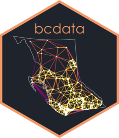

Return a full list of the names of B.C. Data Catalogue records
Source:R/bcdc_search.R
bcdc_list.RdReturn a full list of the names of B.C. Data Catalogue records
Examples
# \donttest{
try(
bcdc_list()
)
#> [1] "100-mile-natural-resource-district-2019-fire-salvage-blocks"
#> [2] "1-2-000-000-raster-base-maps"
#> [3] "1-20-000-georeferenced-topographic-base-maps-by-mapsheet"
#> [4] "1-20-000-raster-base-map-bc-albers"
#> [5] "1-20-000-raster-base-map-utm"
#> [6] "1-20-000-topographic-base-map"
#> [7] "1-250-000-raster-base-map-bc-albers"
#> [8] "1-250-000-raster-base-map-bc-albers-pdf"
#> [9] "1-250-000-raster-base-map-utm"
#> [10] "1427d389-cd21-4fe2-8ed9-282d9bdcb7e2"
#> [11] "1986-federal-census-enumeration-area-population-centroids-for-bc"
#> [12] "1998-lower-mainland-proposed-protected-areas"
#> [13] "2000-prescribed-burn-emissions"
#> [14] "2000-wildfire-emissions"
#> [15] "2001-census-profile-canada-the-provinces-and-territories"
#> [16] "2001-census-profile-census-divisions-and-subdivisions-of-british-columbia"
#> [17] "2001-census-profile-census-tracts-in-cmas-and-tracted-cas-of-british-columbia"
#> [18] "2001-census-profile-cma-ca-and-included-census-subdivisions-of-british-columbia"
#> [19] "2001-census-profile-cmas-and-cas-of-british-columbia"
#> [20] "2001-census-profile-designated-places-of-british-columbia"
#> [21] "2001-census-profile-federal-electoral-districts-of-canada-representation-order-1996"
#> [22] "2001-census-profile-federal-electoral-districts-of-canada-representation-order-2003"
#> [23] "2001-census-semi-custom-profile-health-regions-of-british-columbia"
#> [24] "2006-census-profile-canada-the-provinces-and-territories"
#> [25] "2006-census-profile-census-divisions-and-subdivisions-of-british-columbia"
#> [26] "2006-census-profile-census-tracts-in-cmas-and-tracted-cas-of-british-columbia"
#> [27] "2006-census-profile-cmas-and-cas-of-british-columbia"
#> [28] "2006-census-profile-designated-places-of-british-columbia"
#> [29] "2006-census-profile-federal-electoral-districts-of-canada"
#> [30] "2006-census-semi-custom-profile-health-and-college-regions-of-british-columbia"
#> [31] "2006-census-semi-custom-profile-provincial-electoral-districts-of-british-columbia"
#> [32] "2007-environmental-trends-report-geographically-based-data"
#> [33] "2010-olympic-nordic-site-section-17"
#> [34] "2011-12-forecasts-year-in-review-tbl-a2-1"
#> [35] "2011-census-profile-canada-the-provinces-and-territories"
#> [36] "2011-census-profile-census-divisions-and-subdivisions-of-british-columbia"
#> [37] "2011-census-profile-census-tracts-in-cmas-and-tracted-cas-of-british-columbia"
#> [38] "2011-census-profile-cma-ca-and-included-census-subdivisions-of-british-columbia"
#> [39] "2011-census-profile-cmas-and-cas-of-british-columbia"
#> [40] "2011-census-profile-designated-places-of-british-columbia"
#> [41] "2011-census-profile-development-regions-of-british-columbia"
#> [42] "2011-census-profile-federal-electoral-districts-of-canada"
#> [43] "2012-13-first-quarterly-report-2012-13-capital-projects-greater-than-50-million-tbl-3-11"
#> [44] "2012-13-first-quarterly-report-2012-13-capital-spending-tbl-3-10"
#> [45] "2012-13-first-quarterly-report-2012-13-expense-by-function-tbl-3-9"
#> [46] "2012-13-first-quarterly-report-2012-13-expense-by-ministry-program-and-agency-tbl-3-8"
#> [47] "2012-13-first-quarterly-report-2012-13-forecast-changes-from-budget-2012-tbl-3-2"
#> [48] "2012-13-first-quarterly-report-2012-13-operating-statement-tbl-3-6"
#> [49] "2012-13-first-quarterly-report-2012-13-provincial-debt-tbl-3-12"
#> [50] "2012-13-first-quarterly-report-2012-13-revenue-by-source-tbl-3-7"
#> [51] "2012-13-first-quarterly-report-2012-13-statement-of-financial-position-tbl-3-13"
#> [52] "2012-13-first-quarterly-report-bc-components-of-nominal-income-and-expenditure-2010-16-tbl-2-6-2"
#> [53] "2012-13-first-quarterly-report-bc-gross-domestic-product-2010-16-tbl-2-6-1"
#> [54] "2012-13-first-quarterly-report-bc-labour-market-indicators-2010-16-tbl-2-6-3"
#> [55] "2012-13-first-quarterly-report-bc-major-economic-assumptions-2010-16-tbl-2-6-4"
#> [56] "2012-13-first-quarterly-report-canadian-real-gdp-forecast-tbl-2-3"
#> [57] "2012-13-first-quarterly-report-capital-spending-2005-06-to-2014-15-tbls-a10"
#> [58] "2012-13-first-quarterly-report-capital-spending-update-tbl-3-4"
#> [59] "2012-13-first-quarterly-report-economic-indicators-tbl-2-1"
#> [60] "2012-13-first-quarterly-report-expense-assumptions-tbl-a3"
#> [61] "2012-13-first-quarterly-report-expense-by-function-2005-06-to-2014-15-tbls-a7-a8"
#> [62] "2012-13-first-quarterly-report-fiscal-plan-tbl-1-2"
#> [63] "2012-13-first-quarterly-report-forecast-update-tbl-1-1"
#> [64] "2012-13-first-quarterly-report-forecast-update-tbl-3-1"
#> [65] "2012-13-first-quarterly-report-full-time-equivalents-2005-06-to-2014-15-tbls-a9"
#> [66] "2012-13-first-quarterly-report-key-provincial-debt-indicators-2005-06-to-2014-15-tbl-a15"
#> [67] "2012-13-first-quarterly-report-natural-gas-price-forecasts-tbl-a2"
#> [68] "2012-13-first-quarterly-report-notional-allocations-to-contingencies-tbl-1-4"
#> [69] "2012-13-first-quarterly-report-notional-allocations-to-contingencies-tbl-3-3"
#> [70] "2012-13-first-quarterly-report-operating-statement-2005-06-to-2014-15-tbl-a4"
#> [71] "2012-13-first-quarterly-report-private-sector-canadian-interest-rate-forecasts-tbl-2-4"
#> [72] "2012-13-first-quarterly-report-private-sector-exchange-rate-forecasts-tbl-2-5"
#> [73] "2012-13-first-quarterly-report-provincial-debt-2005-06-to-2014-15-tbls-a13-a14"
#> [74] "2012-13-first-quarterly-report-provincial-debt-update-tbl-3-5"
#> [75] "2012-13-first-quarterly-report-revenue-assumptions-tbl-a1"
#> [76] "2012-13-first-quarterly-report-revenue-by-source-2005-06-to-2014-15-tbls-a5-a6"
#> [77] "2012-13-first-quarterly-report-statement-of-financial-position-2005-06-to-2014-15-tbls-a11-a12"
#> [78] "2012-13-first-quarterly-report-taxpayer-supported-capital-spending-update-tbl-1-5"
#> [79] "2012-13-first-quarterly-report-taxpayer-supported-debt-update-tbl-1-3"
#> [80] "2012-13-first-quarterly-report-us-real-gdp-forecast-tbl-2-2"
#> [81] "2012-13-second-quarterly-report-2012-13-capital-projects-greater-than-50-million-tbl-1-14"
#> [82] "2012-13-second-quarterly-report-2012-13-capital-spending-tbl-1-13"
#> [83] "2012-13-second-quarterly-report-2012-13-expense-by-function-tbl-1-9"
#> [84] "2012-13-second-quarterly-report-2012-13-expense-by-ministry-program-and-agency-tbl-1-8"
#> [85] "2012-13-second-quarterly-report-2012-13-forecast-changes-from-budget-2012-tbl-1-6"
#> [86] "2012-13-second-quarterly-report-2012-13-full-time-equivalents-tbl-1-12"
#> [87] "2012-13-second-quarterly-report-2012-13-operating-statement-tbl-1-5"
#> [88] "2012-13-second-quarterly-report-2012-13-provincial-debt-tbl-1-15"
#> [89] "2012-13-second-quarterly-report-2012-13-revenue-assumptions-tbl-1-10"
#> [90] "2012-13-second-quarterly-report-2012-13-revenue-by-source-tbl-1-7"
#> [91] "2012-13-second-quarterly-report-2012-13-spending-assumptions-tbl-1-11"
#> [92] "2012-13-second-quarterly-report-2012-13-statement-of-financial-position-tbl-1-16"
#> [93] "2012-13-second-quarterly-report-capital-spending-update-tbl-1-3"
#> [94] "2012-13-second-quarterly-report-economic-indicators-tbl-2-1"
#> [95] "2012-13-second-quarterly-report-forecast-update-tbl-1-1"
#> [96] "2012-13-second-quarterly-report-notional-allocations-to-contingencies-tbl-1-2"
#> [97] "2012-13-second-quarterly-report-private-sector-canadian-interest-rate-forecasts-tbl-2-2"
#> [98] "2012-13-second-quarterly-report-private-sector-exchange-rate-forecasts-tbl-2-3"
#> [99] "2012-13-second-quarterly-report-provincial-debt-update-tbl-1-4"
#> [100] "2012-executive-compensation-disclosure"
#> [101] "2013-14-first-quarterly-report-2013-14-forecast-changes-from-june-update-2013-tbl-1-2"
#> [102] "2013-14-first-quarterly-report-2013-14-spending-assumptions-tbl-1-11"
#> [103] "2013-14-first-quarterly-report-capital-projects-greater-than-50-million-tbl-1-14"
#> [104] "2013-14-first-quarterly-report-capital-spending-tbl-1-13"
#> [105] "2013-14-first-quarterly-report-capital-spending-update-tbl-1-4"
#> [106] "2013-14-first-quarterly-report-economic-indicators-tbl-2-1"
#> [107] "2013-14-first-quarterly-report-expense-by-function-tbl-1-9"
#> [108] "2013-14-first-quarterly-report-expense-by-ministry-program-and-agency-tbl-1-8"
#> [109] "2013-14-first-quarterly-report-forecast-update-tbl-1-1"
#> [110] "2013-14-first-quarterly-report-full-time-equivalents-tbl-1-12"
#> [111] "2013-14-first-quarterly-report-notional-allocations-to-contingencies-tbl-1-3"
#> [112] "2013-14-first-quarterly-report-operating-statement-tbl-1-6"
#> [113] "2013-14-first-quarterly-report-private-sector-canadian-interest-rate-forecasts-tbl-2-2"
#> [114] "2013-14-first-quarterly-report-private-sector-exchange-rate-forecasts-tbl-2-3"
#> [115] "2013-14-first-quarterly-report-provincial-debt-tbl-1-15"
#> [116] "2013-14-first-quarterly-report-provincial-debt-update-tbl-1-5"
#> [117] "2013-14-first-quarterly-report-revenue-assumptions-tbl-1-10"
#> [118] "2013-14-first-quarterly-report-revenue-by-source-tbl-1-7"
#> [119] "2013-14-first-quarterly-report-statement-of-financial-position-tbl-1-16"
#> [120] "2013-14-second-quarterly-report-capital-projects-greater-than-50-million-tbl-1-14"
#> [121] "2013-14-second-quarterly-report-capital-spending-tbl-1-13"
#> [122] "2013-14-second-quarterly-report-capital-spending-update-tbl-1-4"
#> [123] "2013-14-second-quarterly-report-economic-indicators-tbl-2-1"
#> [124] "2013-14-second-quarterly-report-expense-by-function-tbl-1-9"
#> [125] "2013-14-second-quarterly-report-expense-by-ministry-program-and-agency-tbl-1-8"
#> [126] "2013-14-second-quarterly-report-forecast-update-tbl-1-1"
#> [127] "2013-14-second-quarterly-report-full-time-equivalents-tbl-1-12"
#> [128] "2013-14-second-quarterly-report-notional-allocations-to-contingencies-tbl-1-3"
#> [129] "2013-14-second-quarterly-report-operating-statement-tbl-1-6"
#> [130] "2013-14-second-quarterly-report-private-sector-canadian-interest-rate-forecasts-tbl-2-2"
#> [131] "2013-14-second-quarterly-report-private-sector-exchange-rate-forecasts-tbl-2-3"
#> [132] "2013-14-second-quarterly-report-provincial-debt-tbl-1-15"
#> [133] "2013-14-second-quarterly-report-provincial-debt-update-tbl-1-5"
#> [134] "2013-14-second-quarterly-report-revenue-assumptions-tbl-1-10"
#> [135] "2013-14-second-quarterly-report-revenue-by-source-tbl-1-7"
#> [136] "2013-14-second-quarterly-report-spending-assumptions-tbl-1-11"
#> [137] "2013-14-second-quarterly-report-statement-of-financial-position-tbl-1-16"
#> [138] "2013-14-third-quarterly-report-2013-14-financial-forecast-changes-from-june-update-2013-tbl-4-2"
#> [139] "2013-14-third-quarterly-report-capital-spending-tbl-4-10"
#> [140] "2013-14-third-quarterly-report-capital-spending-update-tbl-4-4"
#> [141] "2013-14-third-quarterly-report-expense-by-function-tbl-4-9"
#> [142] "2013-14-third-quarterly-report-expense-by-ministry-program-and-agency-tbl-4-8"
#> [143] "2013-14-third-quarterly-report-forecast-update-tbl-4-1"
#> [144] "2013-14-third-quarterly-report-notional-allocations-to-contingencies-tbl-4-3"
#> [145] "2013-14-third-quarterly-report-operating-statement-tbl-4-6"
#> [146] "2013-14-third-quarterly-report-provincial-debt-tbl-4-11"
#> [147] "2013-14-third-quarterly-report-provincial-debt-update-tbl-4-5"
#> [148] "2013-14-third-quarterly-report-revenue-by-source-tbl-4-7"
#> [149] "2013-14-third-quarterly-report-statement-of-financial-position-tbl-4-12"
#> [150] "2013-executive-compensation-disclosure"
#> [151] "2013-financial-economic-rev-2012-13-forecasts-year-in-review-tbl-a2-1"
#> [152] "2013-financial-economic-rev-bc-employment-by-industry-2001-12-tbl-a1-5"
#> [153] "2013-financial-economic-rev-bc-forest-sector-economic-activity-indicators-2008-12-tbl-a1-10"
#> [154] "2013-financial-economic-rev-capital-spending-2001-02-to-2012-13-tbl-a2-10"
#> [155] "2013-financial-economic-rev-capital-spending-budget-2011-tbl-2-8"
#> [156] "2013-financial-economic-rev-components-of-bc-population-change-1975-2012-tbl-a1-14"
#> [157] "2013-financial-economic-rev-consumption-and-other-tax-revenues-change-from-budget-2011-tbl-2-2"
#> [158] "2013-financial-economic-rev-energy-and-mineral-revenues-change-from-budget-2011-tbl-2-3"
#> [159] "2013-financial-economic-rev-expense-by-ministry-program-and-agency-budget-2011-tbl-2-7"
#> [160] "2013-financial-economic-rev-financial-statement-of-auditor-general-qualifications-tbl-2-16"
#> [161] "2013-financial-economic-rev-forest-revenues-change-from-budget-2011-tbl-2-4"
#> [162] "2013-financial-economic-rev-full-time-equivalents-ftes-2001-02-to-2012-13-tbl-a2-9"
#> [163] "2013-financial-economic-rev-historical-commodity-prices-in-us-dollars-2002-to-2012-tbl-a1-9"
#> [164] "2013-financial-economic-rev-historical-provincial-debt-summary-1969-1970-to-2012-13-tbl-a2-15"
#> [165] "2013-financial-economic-rev-international-goods-exports-by-market-area-2010-to-2012-tbl-a1-8"
#> [166] "2013-financial-economic-rev-interprovincial-comparison-of-credit-ratings-july-2012-tbl-2-12"
#> [167] "2013-financial-economic-rev-interprovincial-comparisons-of-tax-rates-2013-tbl-a4-2"
#> [168] "2013-financial-economic-rev-key-debt-indicators-2007-08-to-2011-12-tbl-2-11"
#> [169] "2013-financial-economic-rev-key-provincial-debt-indicators-200-02-to-2012-13-tbl-a2-13"
#> [170] "2013-financial-economic-rev-net-liabilities-and-accumulated-surplus-tbl-2-13"
#> [171] "2013-financial-economic-rev-operating-statement-2001-02-to-2012-13-tbl-a2-2"
#> [172] "2013-financial-economic-rev-operating-statement-tbl-2-1"
#> [173] "2013-financial-economic-rev-other-revenue-change-from-budget-2011-tbl-2-5"
#> [174] "2013-financial-economic-rev-pension-plan-balances-budget-2011-tbl-2-14"
#> [175] "2013-financial-economic-rev-petroleum-and-natural-gas-activity-indicators-2004-to-2012-tbl-a1-12"
#> [176] "2013-financial-economic-rev-population-and-labour-market-statistics-2008-12-tbl-1-1"
#> [177] "2013-financial-economic-rev-price-and-earnings-indices-2008-12-tbl-1-2"
#> [178] "2013-financial-economic-rev-provincial-debt-summary-budget-2011-tbl-2-10"
#> [179] "2013-financial-economic-rev-revenue-by-source-budget-2011-tbl-2-6"
#> [180] "2013-financial-economic-rev-taxpayer-supported-contractual-obligations-tbl-2-15"
#> [181] "2014-executive-compensation-disclosure"
#> [182] "2014-financial-economic-rev"
#> [183] "2015-16-first-quarterly-report"
#> [184] "2015-16-second-quarterly-report"
#> [185] "2015-executive-compensation-disclosure"
#> [186] "2016-17-first-quarterly-report"
#> [187] "2016-17-second-quarterly-report"
#> [188] "2017-18-second-quarterly-report"
#> [189] "2017-financial-economic-rev"
#> [190] "2018-19-first-quarterly-report"
#> [191] "2018-19-second-quarterly-report"
#> [192] "2018-financial-economic-rev"
#> [193] "2018-referendum-voting-results"
#> [194] "2018-same-year-burn-severity"
#> [195] "2019-20-first-quarterly-report"
#> [196] "2019-20-second-quarterly-report"
#> [197] "2019-financial-economic-rev"
#> [198] "2020-21-first-quarterly-report"
#> [199] "2020-financial-and-economic-review"
#> [200] "2021-22-first-quarterly-report"
#> [201] "2021-22-second-quarterly-report"
#> [202] "2021-financial-economic-rev"
#> [203] "2022-23-first-quarterly-report"
#> [204] "2022-23-second-quarterly-report"
#> [205] "2022-bc-financial-and-economic-review"
#> [206] "2023-24-first-quarterly-report-"
#> [207] "2023-24-second-quarterly-report-"
#> [208] "2023-bc-financial-and-economic-review-"
#> [209] "2024-25-first-quarterly-report"
#> [210] "2024-bc-financial-and-economic-review"
#> [211] "2024-provincial-general-election-voting-areas-to-voting-place-assignment"
#> [212] "2025-26-first-quarterly-report"
#> [213] "2025-bc-cannabis-use-survey-data-tables"
#> [214] "2025-bc-financial-and-economic-review"
#> [215] "3-nations-bc-collaborative-stewardship-framework-boundary"
#> [216] "5-needle-pine-long-term-monitoring-data-collection-tool"
#> [217] "62243abb-7908-4614-831d-495267f51c68"
#> [218] "7-5m-bathymetric-the-atlas-of-canada-base-maps"
#> [219] "7-5m-bathymetric-the-atlas-of-canada-base-maps-for-bc"
#> [220] "7-5m-boundary-lines-the-atlas-of-canada-base-maps"
#> [221] "7-5m-boundary-lines-the-atlas-of-canada-base-maps-for-bc"
#> [222] "7-5m-drainage-lines-the-atlas-of-canada-base-maps"
#> [223] "7-5m-drainage-lines-the-atlas-of-canada-base-maps-for-bc"
#> [224] "7-5m-drainage-polygons-the-atlas-of-canada-base-maps"
#> [225] "7-5m-drainage-polygons-the-atlas-of-canada-base-maps-for-bc"
#> [226] "7-5m-major-cities-the-atlas-of-canada-base-maps"
#> [227] "7-5m-major-cities-the-atlas-of-canada-base-maps-of-bc"
#> [228] "7-5m-major-railways-the-atlas-of-canada-base-maps"
#> [229] "7-5m-major-railways-the-atlas-of-canada-base-maps-for-bc"
#> [230] "7-5m-major-roads-the-atlas-of-canada-base-maps"
#> [231] "7-5m-major-roads-the-atlas-of-canada-base-maps-for-bc"
#> [232] "7-5m-national-parks-the-atlas-of-canada-base-maps"
#> [233] "7-5m-national-parks-the-atlas-of-canada-base-maps-for-bc"
#> [234] "7-5m-provinces-and-states-the-atlas-of-canada-base-maps"
#> [235] "7-5m-provinces-and-states-the-atlas-of-canada-base-maps-for-bc"
#> [236] "796f142d-1ffa-4ce8-acfc-b44193842c3e"
#> [237] "7-day-streamflow-data"
#> [238] "7-day-stream-flow-map"
#> [239] "81e165b6-91fd-4333-a1c0-d77252f9ca96"
#> [240] "914cc55c-8a7a-4c35-be99-d7ba9a4f292c"
#> [241] "9fc2b2bd-f773-4af3-9d05-912c582fb45b"
#> [242] "abbotsford-city-of-2007-community-energy-and-emissions-inventory-report"
#> [243] "aboriginal-profiles-of-british-columbia"
#> [244] "access-control-points-for-grizzly-bears-dsq"
#> [245] "access-management-areas-kootenay-region"
#> [246] "access-management-areas-telkwa-skeena-region"
#> [247] "access-management-units-and-category-ratings-lillooet-lrmp"
#> [248] "access-management-units-and-category-ratings-lillooet-lrmp-poly"
#> [249] "accumulative-aos-in-the-omineca-region"
#> [250] "active-administrative-forfeiture-files-dataset"
#> [251] "active-and-alternative-goshawk-accipiter-gentilis-nesting"
#> [252] "active-apprenticeship-registrations-by-trade-and-economic-development-region"
#> [253] "active-apprenticeship-registrations-by-trade-and-gender"
#> [254] "active-apprenticeship-registrations-by-trade-and-indigenous"
#> [255] "address-list-editor"
#> [256] "administrative-boundaries-web-map-service"
#> [257] "ad-test"
#> [258] "ad-testing"
#> [259] "adult-education-institutions"
#> [260] "adult-females-charged-by-violation"
#> [261] "adult-males-charged-by-violation"
#> [262] "aei-1995-inventory-point-source-emission-totals"
#> [263] "aei-2000-inventory-point-source-emissions-by-site"
#> [264] "aei-2000-inventory-point-source-emission-totals"
#> [265] "aei-2000-permit-invoice-point-source-emission-totals"
#> [266] "aei-2000-permit-points"
#> [267] "aerial-overviews-of-spruce-beetle-attack-in-the-omineca-region"
#> [268] "aerial-survey-bighorn-sheep-ovis-canadensis-1980-1998"
#> [269] "aerial-survey-elk-cervus-elaphus-1998-scale-1-250-000"
#> [270] "aerial-survey-large-mammals-1994-1997"
#> [271] "aerial-videography-fish-habitat-omineca-region"
#> [272] "affordable-child-care-benefit-number-of-children-and-family-recipients"
#> [273] "after-hours-pharmacies-in-bc"
#> [274] "aggregate-inventory-1996"
#> [275] "aggregate-pits-squamish-forest-district"
#> [276] "aggregate-potential-squamish-forest-district"
#> [277] "aggregate-potential-sunshine-coast-forest-district"
#> [278] "aggregate-resource-potential-maps"
#> [279] "agricultural-emissions-2000-1-km-grid"
#> [280] "agricultural-emissions-2000-5-km-grid"
#> [281] "agricultural-land-reserve-alr-lines"
#> [282] "agricultural-land-reserve-alr-polygons"
#> [283] "agricultural-land-use-city-of-surrey"
#> [284] "agricultural-land-use-inventory-metro-vancouver-2016"
#> [285] "agricultural-land-use-inventory-metro-vancouver-2016-lot-cov"
#> [286] "agriculture-capability-mapping"
#> [287] "agriculture-capability-morice-fd-skeena-region"
#> [288] "agriculture-capability-scanned-maps"
#> [289] "airborne-imagery-historical-index-map-points"
#> [290] "airborne-imagery-historical-index-map-polygons"
#> [291] "air-contaminant-emissions-100km-grid-squares"
#> [292] "air-contaminant-emissions-1km-grid-squares-not-including-the-lower-fraser-valley"
#> [293] "air-contaminant-emissions-1-km-polygon-grid-except-lower-fraser-valley"
#> [294] "air-contaminant-emissions-5km-grid-squares-not-including-the-lower-fraser-valley"
#> [295] "air-contaminant-emissions-5-km-polygon-grid-except-lower-fraser-valley"
#> [296] "air-contaminant-emissions-grid-factors"
#> [297] "aircraft-emissions-2000-1-km-grid"
#> [298] "aircraft-emissions-2000-5-km-grid"
#> [299] "airfields-trim-enhanced-base-map-ebm"
#> [300] "airphoto-centroids"
#> [301] "airphoto-flightlines"
#> [302] "air-photo-system-air-photo-polygons"
#> [303] "air-photo-system-air-photo-polygons-spatial-view"
#> [304] "air-photo-system-centre-points"
#> [305] "air-photo-system-centre-points-spatial-view"
#> [306] "air-photo-system-flightlines"
#> [307] "air-photo-system-flightlines-spatial-view"
#> [308] "air-photo-system-operation-polygons"
#> [309] "airport-and-airfield-locations-sir"
#> [310] "airport-capacity-and-service-information"
#> [311] "air-quality-and-climate-monitoring-unverified-hourly-air-quality-and-meteorological-data"
#> [312] "air-quality-and-climate-monitoring-verified-hourly-air-quality-and-meteorological-data"
#> [313] "air-quality-areas-of-interest"
#> [314] "air-quality-areas-of-interest-planning-or-plan-established"
#> [315] "air-quality-dispersion-data-index"
#> [316] "air-quality-management"
#> [317] "air-quality-subscription-service"
#> [318] "aiv-sediment-data"
#> [319] "alantest"
#> [320] "alberni-clayoquot-regional-district-2007-community-energy-and-emissions-inventory-report"
#> [321] "alberni-clayoquot-regional-district-unincorporated-areas-2007-community-energy-and-emissions-invento"
#> [322] "alberta-parks-and-protected-areas"
#> [323] "albion-ferry-terminals"
#> [324] "alc-agricultural-land-reserve-lines"
#> [325] "alc-agricultural-land-reserve-polygons-archived"
#> [326] "alc-alr-lines"
#> [327] "alc-alr-polygons"
#> [328] "alc-applications-and-notices-of-intent-web-application"
#> [329] "alc-applications-search-map-viewer-secure-"
#> [330] "alcids-coastal-resource-information-management-system-crims"
#> [331] "alcohol-driving-prohibitions"
#> [332] "alc-panel-region"
#> [333] "alc-planning-reviews"
#> [334] "alc-planning-reviews-spatial-view"
#> [335] "alert-bay-village-of-2007-community-energy-and-emissions-inventory-report"
#> [336] "alexander-mackenzie-heritage-trail"
#> [337] "algae-watch-submitted-observations-interactive-map"
#> [338] "alienated-lands-central-coast-land-and-resource-management-plan-cclrmp"
#> [339] "alr-applications-poly-archived"
#> [340] "alr-applications-spatial-view"
#> [341] "alr-notices-of-intent-spatial-view-"
#> [342] "alr-property-and-map-finder"
#> [343] "alr-statutory-right-of-ways-spatial-view-"
#> [344] "alty-conservancy-management-plan-supporting-documents-and-maps"
#> [345] "american-bittern-breeding-distribution-squamish-forest-district"
#> [346] "angling-licence-sales-statistics-2010-to-2024"
#> [347] "anmore-village-of-2007-community-energy-and-emissions-inventory-report"
#> [348] "annual-business-formations"
#> [349] "annual-capital-allowance-and-operating-grants-at-public-post-secondary-institutions"
#> [350] "annual-demographic-and-income-data-from-the-canadian-community-health-survey-cchs-"
#> [351] "annual-employees-earning-minimum-wage-or-less-and-incidence-rate-from-labour-force-survey-lfs-"
#> [352] "annual-estimates-of-the-homeless-population-in-b-c-"
#> [353] "annual-high-technology-indicators"
#> [354] "annual-labour-force-characteristics-and-employment-from-labour-force-survey-lfs-"
#> [355] "annual-labour-force-characteristics-and-wages-by-disability-status-from-labour-force-survey-lfs-"
#> [356] "annual-labour-force-characteristics-and-wages-from-labour-force-survey-lfs-"
#> [357] "annual-labour-force-characteristics-by-education-and-age-from-labour-force-survey-lfs-"
#> [358] "annual-labour-force-median-wages-by-detailed-demographics-from-labour-force-survey-lfs-"
#> [359] "annual-labour-force-survey-lfs-indigenous-data-fils-for-bc-stats-releases"
#> [360] "annual-tourism-indicators"
#> [361] "annual-traffic-volumes-2004-2010"
#> [362] "aoi-lookup-table"
#> [363] "api-key-request"
#> [364] "api-registration-generator"
#> [365] "api-services-portal"
#> [366] "applications-for-exclusion-from-the-alr"
#> [367] "applications-for-non-farm-use-in-the-alr"
#> [368] "applications-for-soil-change-fill-in-the-alr"
#> [369] "applications-for-subdivision-in-the-alr"
#> [370] "approved-study-areas-pas-merritt-tsa"
#> [371] "approximate-floodplain-lower-fraser-squamish-rivers"
#> [372] "aqua"
#> [373] "aquatic-ecosystems-bc-cumulative-effects-framework-2020-assessment"
#> [374] "aquatic-ecosystems-bc-cumulative-effects-framework-2020-assessment-kootenay-boundary"
#> [375] "aquatic-ecosystems-bc-cumulative-effects-framework-2020-assessment-south-coast"
#> [376] "aquatic-ecosystems-bc-cumulative-effects-framework-2020-assessment-west-coast"
#> [377] "aquatic-ecosystems-skeena-cummulative-effects-assessment-outside-of-esi-2018-assessment"
#> [378] "aquatic-ecosystems-watershed-condition-data-howe-sound-cumulative-effects"
#> [379] "aquatic-ecosystems-watershed-condition-data-south-coast-sbot"
#> [380] "aquatic-ecosystems-watershed-condition-web-viewer-howe-sound-cumulative-effects-project"
#> [381] "aquatic-invasive-species-of-british-columbia"
#> [382] "aquatic-life-copper-wqg-acute"
#> [383] "aquatic-life-copper-wqg-chronic"
#> [384] "aquatic-life-manganese-wqg-chronic"
#> [385] "aquatic-life-marine-ammonia-wqg-acute"
#> [386] "aquatic-life-marine-ammonia-wqg-chronic"
#> [387] "aquatic-life-nickel-wqg-acute"
#> [388] "aquatic-life-nickel-wqg-chronic"
#> [389] "aquifers-with-water-allocation-notations"
#> [390] "aquifer-vulnerability-to-saltwater-intrusion-pumping-and-coastal-hazard"
#> [391] "aquifer-vulnerability-to-saltwater-intrusion-pumping-hazard"
#> [392] "aquifer-vulnerability-to-sea-water-intrusion"
#> [393] "archaeological-and-culturally-sensitive-sites-along-hwys-kootenay-region"
#> [394] "archaeological-culture-areas"
#> [395] "archaeological-overview-assessments"
#> [396] "archaeological-site-buffers-50-m"
#> [397] "archaeological-sites-and-historic-places-limited-attributes-"
#> [398] "archaeological-study-areas"
#> [399] "archaeological-study-areas-limited-attributes"
#> [400] "archaeology-borden-grid"
#> [401] "archaeology-known-sites"
#> [402] "archaeology-overview-assessment-culturally-modified-tree-potential"
#> [403] "archaeology-resource-management"
#> [404] "archaeology-sites-government-users-view"
#> [405] "archive-automated-snow-weather-station-data"
#> [406] "archived-annual-bc-liquor-sales-by-region-and-product-type-fye-2010-fye2012"
#> [407] "archived-bc-liquor-rural-agency-store-locations"
#> [408] "archived-bsb-historical-archive-november-2005"
#> [409] "archived-consolidated-revenue-fund-detailed-schedules-of-payments-order-in-council-other-appointees-"
#> [410] "archived-consolidated-revenue-fund-detailed-schedules-of-payments-other-supplier-payments"
#> [411] "archived-consolidated-revenue-fund-detailed-schedules-of-payments-travel-expenses"
#> [412] "archived-north-coast-1996-and-west-coast-vancouver-island-1999-videos"
#> [413] "archived-office-of-the-comptroller-general-bc-government-transfers"
#> [414] "archived-old-growth-management-areas-for-the-cariboo-region"
#> [415] "archived-record-for-surrey-sea-to-sky-lrmp-related-data-archived-february-2010"
#> [416] "archived-srmp-boundaries-for-the-cariboo-region"
#> [417] "archive-manual-snow-survey-data"
#> [418] "area-based-management-plans"
#> [419] "area-designations-fremp-lower-mainland"
#> [420] "area-of-interest-selector-public"
#> [421] "area-of-interest-selector-secure"
#> [422] "areas-of-potential"
#> [423] "armstrong-city-of-2007-community-energy-and-emissions-inventory-report"
#> [424] "ashcroft-village-of-2007-community-energy-and-emissions-inventory-report"
#> [425] "assessment-report-index-for-cclrmp-area-central-coast-land-and-resource-management-plan-cclrmp"
#> [426] "assessment-report-index-system-aris-database"
#> [427] "assessment-report-sourced-surface-sediment-geochemical-sample-arssg-database"
#> [428] "assisted-living-residences"
#> [429] "ates-avalanche-terrain-exposure-scale-recreation-boundaries"
#> [430] "ates-avalanche-terrain-exposure-scale-recreation-lines"
#> [431] "ates-avalanche-terrain-exposure-scale-sites"
#> [432] "ates-avalanche-terrain-exposure-scale-zones"
#> [433] "atlas-of-canada-1-000-000-national-frameworks-data-hydrology-lakes"
#> [434] "atlas-of-canada-1-000-000-national-frameworks-data-hydrology-rivers"
#> [435] "atlas-of-canada-1-000-000-national-frameworks-data-political-boundaries"
#> [436] "atlas-of-canada-1-000-000-national-frameworks-data-roads"
#> [437] "atlas-of-canada-1-000-000-national-scale-place-names"
#> [438] "atlas-of-canada-1-1-000-000-national-scale-data-boundaries"
#> [439] "atlas-of-canada-1-1-000-000-national-scale-data-populated-places"
#> [440] "atlas-of-canada-1-1-000-000-national-scale-data-rivers"
#> [441] "atlas-of-canada-1-1-000-000-national-scale-data-roads"
#> [442] "atlas-of-canada-1-1-000-000-national-scale-data-waterbodies"
#> [443] "atmospheric-and-environment-climate-stations-lower-mainland"
#> [444] "automated-snow-weather-station-locations"
#> [445] "avalanche-and-weather-programs-public-access-weather-system-paws"
#> [446] "avalanche-and-weather-programs-weather-and-frost-probe-station-list"
#> [447] "avalanche-and-weather-programs-weather-station-network"
#> [448] "backcountry-recreation-areas-for-the-cariboo-region"
#> [449] "background-groundwater-concentration-regions"
#> [450] "background-groundwater-concentration-region-sample-sites"
#> [451] "badger-taxidea-taxus-habitat-suitability-model"
#> [452] "bald-eagle-feeding-sites-dsq"
#> [453] "bald-eagle-perching-sites-dsq"
#> [454] "bald-eagle-roosting-sites-dsq"
#> [455] "bald-eagles-coastal-resource-information-management-system-crims"
#> [456] "banks-nii-luutiksm-conservancy-management-plan-supporting-documents-and-maps"
#> [457] "bark-beetle-susceptibility-rating"
#> [458] "barriere-district-of-2007-community-energy-and-emissions-inventory-report"
#> [459] "baseline-thematic-mapping-present-land-use-version-1-spatial-layer"
#> [460] "base-map-online-store"
#> [461] "base-map-online-store-air-photo-search"
#> [462] "base-map-online-store-maps-and-orthos-search"
#> [463] "bathymetric-lakes-for-the-cariboo-region"
#> [464] "bathymetric-maps"
#> [465] "bathymetric-maps-of-surveyed-lakes"
#> [466] "bc-100-arcstorm-index"
#> [467] "bc-10-arcstorm-index"
#> [468] "bc-2013-14-second-quarterly-report-2013-14-forecast-changes-from-june-update-2013-and-first-quarterl"
#> [469] "bc-2014-15-first-quarterly-report-tbls"
#> [470] "bc-2014-15-second-quarterly-report-tbls"
#> [471] "bc-25-arcstorm-index"
#> [472] "bc-5-arcstorm-index"
#> [473] "bc-address-geocoder-web-service"
#> [474] "bc-agricultural-land-reserves-archived"
#> [475] "bc-air-photo-viewer"
#> [476] "bc-airports"
#> [477] "bc-annotation-1-2-000-000-digital-baseline-mapping-"
#> [478] "bc-annual-coal-production-from-1866-onwards"
#> [479] "bc-annual-construction-aggregate-production-from-1930-onwards"
#> [480] "bc-annual-industrial-minerals-production-from-1904-onwards"
#> [481] "bc-annual-metal-shipments-from-1858-onwards"
#> [482] "bc-arts-council-annual-arts-awards-listing-2007-2008"
#> [483] "bc-arts-council-annual-arts-awards-listing-2008-2009"
#> [484] "bc-arts-council-annual-arts-awards-listing-2009-2010"
#> [485] "bc-arts-council-annual-arts-awards-listing-2010-2011"
#> [486] "bc-arts-council-annual-arts-awards-listing-2011-2012"
#> [487] "bc-arts-council-annual-arts-awards-listing-supplemental-2008-2009"
#> [488] "bc-assessment-addresses-view"
#> [489] "bc-assessment-data-advice"
#> [490] "bc-assessment-data-advice-folio-addresses-proposed-"
#> [491] "bc-assessment-folio-summaries-by-census-subdivision-census-division-and-economic-region"
#> [492] "bc-assessment-land-characteristics-view"
#> [493] "bc-assessment-legal-descriptions-view"
#> [494] "bc-assessment-non-residential-inventory"
#> [495] "bc-assessment-parcel-fabric"
#> [496] "bc-assessment-permits"
#> [497] "bc-assessment-property-descriptions-view"
#> [498] "bc-assessment-property-sales-view"
#> [499] "bc-assessment-property-values-view"
#> [500] "bc-assessment-residential-inventory"
#> [501] "bc-asssessment-data-advice-proposed"
#> [502] "bc-basemap"
#> [503] "bc-basemap-annotation-1-6-000-000-digital-baseline-mapping"
#> [504] "bc-basemap-lines-1-6-000-000-digital-baseline-mapping"
#> [505] "bc-base-map-service-bc-albers-deprecated-"
#> [506] "bc-base-map-service-web-mercator-deprecated-"
#> [507] "bc-canadian-aquatic-biomonitoring-network-cabin-model-polygons"
#> [508] "bc-canadian-aquatic-biomonitoring-network-cabin-sites"
#> [509] "bc-canadian-aquatic-biomonitoring-network-cabin-sites-and-models-web-app"
#> [510] "bc-charge-assessment-accused-count-by-court-type-and-city"
#> [511] "bc-charge-assessment-report-to-crown-counsel-count-by-court-type-and-city"
#> [512] "bc-cip-to-noc-transition"
#> [513] "bc-climate-stations"
#> [514] "bc-college-region-boundaries"
#> [515] "bc-community-health-atlas"
#> [516] "bc-community-investment-opportunities"
#> [517] "bc-concluded-persons-count-by-finding-status-and-city"
#> [518] "bc-controlled-recreation-areas"
#> [519] "bc-controlled-recreation-areas-web-app"
#> [520] "b-c-corrections-community-corrections-offices-client-count-by-region-month-and-age-group-2009-10-and"
#> [521] "b-c-corrections-community-corrections-offices-client-count-by-region-month-and-ethnicity-2009-10-and"
#> [522] "b-c-corrections-community-corrections-offices-client-count-by-region-month-and-marital-status-2009-1"
#> [523] "b-c-corrections-community-corrections-offices-new-intakes-2009-10-and-2010-11"
#> [524] "b-c-corrections-community-corrections-offices-new-intakes-by-region-month-and-age-group-2009-10-and-"
#> [525] "b-c-corrections-community-corrections-offices-new-intakes-by-region-month-and-ethnicity-2009-10-and-"
#> [526] "b-c-corrections-community-corrections-offices-new-intakes-by-region-month-and-marital-status-2009-10"
#> [527] "b-c-corrections-community-corrections-offices-releases-2009-10-and-2010-11"
#> [528] "b-c-corrections-community-corrections-offices-releases-by-region-month-and-age-group-2009-10-and-201"
#> [529] "b-c-corrections-community-corrections-offices-releases-by-region-month-and-ethnicity-2009-10-and-201"
#> [530] "b-c-corrections-community-corrections-offices-releases-by-region-month-and-marital-status-2009-10-an"
#> [531] "b-c-corrections-community-corrections-offices-unique-client-count-2009-10-and-2010-11"
#> [532] "b-c-corrections-custody-centres-court-movements-2009-10-and-2010-11"
#> [533] "b-c-corrections-custody-centres-court-movements-by-centre-month-and-age-group-2009-10-and-2010-11"
#> [534] "b-c-corrections-custody-centres-court-movements-by-centre-month-and-ethnicity-2009-10-and-2010-11"
#> [535] "b-c-corrections-custody-centres-court-movements-by-centre-month-and-marital-status-2009-10-and-2010-"
#> [536] "b-c-corrections-custody-centres-new-intakes-2009-10-and-2010-11"
#> [537] "b-c-corrections-custody-centres-new-intakes-by-centre-month-and-age-group-2009-10-and-2010-11"
#> [538] "b-c-corrections-custody-centres-new-intakes-by-centre-month-and-ethnicity-2009-10-and-2010-11"
#> [539] "b-c-corrections-custody-centres-new-intakes-by-centre-month-and-marital-status-2009-10-and-2010-11"
#> [540] "b-c-corrections-custody-centres-releases-2009-10-and-2010-11"
#> [541] "b-c-corrections-custody-centres-releases-by-centre-month-and-age-group-2009-10-and-2010-11"
#> [542] "b-c-corrections-custody-centres-releases-by-centre-month-and-ethnicity-2009-10-and-2010-11"
#> [543] "b-c-corrections-custody-centres-releases-by-centre-month-and-marital-status-2009-10-and-2010-11"
#> [544] "b-c-corrections-custody-centres-transfers-in-2009-10-and-2010-11"
#> [545] "b-c-corrections-custody-centres-transfers-in-by-centre-month-and-age-group-2009-10-and-2010-11"
#> [546] "b-c-corrections-custody-centres-transfers-in-by-centre-month-and-ethnicity-2009-10-and-2010-11"
#> [547] "b-c-corrections-custody-centres-transfers-in-by-centre-month-and-marital-status-2009-10-and-2010-11"
#> [548] "b-c-corrections-custody-centres-unique-inmate-count-2009-10-and-2010-11"
#> [549] "b-c-corrections-custody-centres-unique-inmate-count-by-centre-month-and-age-group-2009-10-and-2010-1"
#> [550] "b-c-corrections-custody-centres-unique-inmate-count-by-centre-month-and-ethnicity-2009-10-and-2010-1"
#> [551] "b-c-corrections-custody-centres-unique-inmate-count-by-centre-month-and-marital-status-2009-10-and-2"
#> [552] "bc-court-appearances-15-year-provincial-report-by-court-level-division-and-class"
#> [553] "bc-court-appearances-5-year-regional-report-by-court-level-division-and-class"
#> [554] "bc-court-finder"
#> [555] "bc-court-finder-interactive-web-map-support-information"
#> [556] "bc-court-hours-15-year-provincial-report-by-court-level-division-and-class"
#> [557] "bc-court-hours-5-year-regional-report-by-court-level-division-and-class"
#> [558] "b-c-covid-19-case-details"
#> [559] "b-c-covid-19-cases-by-health-authority"
#> [560] "b-c-covid-19-lab-information"
#> [561] "bc-crime-types"
#> [562] "bc-crown-land-indicators-and-statistics-active-crown-tenures-on-april-1-2009"
#> [563] "bc-crown-land-indicators-and-statistics-historic-crown-grants-issued-2000-2009"
#> [564] "bc-crown-land-indicators-and-statistics-historic-crown-tenure-applications-received-2000-2009"
#> [565] "bc-crown-land-indicators-and-statistics-historic-crown-tenures-issued-2000-2009"
#> [566] "bc-cumulative-effects-framework-assessment-areas"
#> [567] "bc-cumulative-effects-framework-forest-disturbance-current"
#> [568] "bc-cumulative-effects-framework-human-disturbance-archived"
#> [569] "bc-cumulative-effects-framework-human-disturbance-current"
#> [570] "bc-cumulative-effects-framework-integrated-roads-archived"
#> [571] "bc-cumulative-effects-framework-integrated-roads-current"
#> [572] "bc-dams"
#> [573] "bc-data-catalogue-api"
#> [574] "bc-data-catalogue-content"
#> [575] "bc-demographic-survey-dip-data-linkage-rates"
#> [576] "bc-designated-areas-lines-1-2-000-000-digital-baseline-mapping"
#> [577] "bc-designated-areas-points-1-2-000-000-digital-baseline-mapping"
#> [578] "bc-drought-levels"
#> [579] "bc-drought-levels-time-lapse-2015"
#> [580] "bc-drought-levels-time-lapse-2016"
#> [581] "bc-drought-levels-time-lapse-2017"
#> [582] "bc-drought-levels-time-lapse-2018"
#> [583] "bc-drought-levels-time-lapse-2019"
#> [584] "bc-drought-levels-time-lapse-2020"
#> [585] "bc-drought-levels-time-lapse-2021"
#> [586] "bc-drought-level-time-lapse-2022"
#> [587] "bc-economic-atlas-application"
#> [588] "bc-electoral-district-explorer-bcede-"
#> [589] "bc-electoral-district-explorer-bcede-2013-ge"
#> [590] "bc-emergency-alert-archive"
#> [591] "bc-employment-and-assistance-program"
#> [592] "bc-employment-and-assistance-program-by-age"
#> [593] "bc-employment-and-assistance-program-by-census-metropolitan-area"
#> [594] "bc-employment-and-assistance-program-by-economic-development-region"
#> [595] "bc-employment-and-assistance-program-by-federal-electoral-district"
#> [596] "bc-employment-and-assistance-program-by-health-authority"
#> [597] "bc-employment-and-assistance-program-by-ministry-region"
#> [598] "bc-employment-and-assistance-program-by-municipality"
#> [599] "bc-employment-and-assistance-program-by-provincial-electoral-district"
#> [600] "bc-employment-and-assistance-program-flow"
#> [601] "bc-employment-and-assistance-program-metadata"
#> [602] "bc-employment-and-assistance-program-transitions"
#> [603] "bc-environmental-monitoring-location-groups"
#> [604] "bc-environmental-monitoring-locations"
#> [605] "bc-environmental-monitoring-locations-spatial-view-"
#> [606] "bc-environmental-monitoring-system-results"
#> [607] "bc-farm-counts-by-size-type-and-revenue"
#> [608] "bc-finance-2013-financial-and-economic-review-aggregate-and-labour-market-indicators-1982-to-2012-wi"
#> [609] "bc-finance-2013-financial-and-economic-review-bc-capital-investment-by-industry-2008-to-2012-and-201"
#> [610] "bc-finance-2013-financial-and-economic-review-bc-gdp-at-basic-prices-by-industry-2007-to-2012-with-a"
#> [611] "bc-finance-2013-financial-and-economic-review-bc-gdp-income-based-2007-to-2012-with-annual-percentag"
#> [612] "bc-finance-2013-financial-and-economic-review-bc-hydro-five-year-income-statement-for-the-years-ende"
#> [613] "bc-finance-2013-financial-and-economic-review-bc-lottery-corporation-five-year-income-statement-for-"
#> [614] "bc-finance-2013-financial-and-economic-review-bc-railway-company-five-year-income-statement-for-the-"
#> [615] "bc-finance-2013-financial-and-economic-review-bc-real-gdp-at-market-prices-expenditure-based-2007-to"
#> [616] "bc-finance-2013-financial-and-economic-review-capital-expenditure-projects-greater-than-50-million-0"
#> [617] "bc-finance-2013-financial-and-economic-review-columbia-power-corporation-five-year-income-statement-"
#> [618] "bc-finance-2013-financial-and-economic-review-commodity-production-indicators-1982-to-2012-with-annu"
#> [619] "bc-finance-2013-financial-and-economic-review-expense-by-function-2001-02-to-2012-13-table-a2-7-expe"
#> [620] "bc-finance-2013-financial-and-economic-review-historical-operating-statement-surplus-deficit-1969-19"
#> [621] "bc-finance-2013-financial-and-economic-review-historical-value-of-mineral-petroleum-and-natural-gas-"
#> [622] "bc-finance-2013-financial-and-economic-review-insurance-corporation-of-bc-five-year-income-statement"
#> [623] "bc-finance-2013-financial-and-economic-review-international-goods-exports-by-major-market-and-select"
#> [624] "bc-finance-2013-financial-and-economic-review-liquor-distribution-branch-five-year-income-statement-"
#> [625] "bc-finance-2013-financial-and-economic-review-other-economic-indicators-1982-to-2012-with-annual-per"
#> [626] "bc-finance-2013-financial-and-economic-review-prices-earnings-and-financial-indicators-1982-to-2012-"
#> [627] "bc-finance-2013-financial-and-economic-review-provincial-debt-2001-02-to-2012-13-table-a2-11-provinc"
#> [628] "bc-finance-2013-financial-and-economic-review-revenue-by-source-2001-02-to-2012-13-table-a2-5-revenu"
#> [629] "bc-finance-2013-financial-and-economic-review-statement-of-financial-position-2001-02-to-2012-13-tab"
#> [630] "bc-finance-2013-financial-and-economic-review-supply-and-consumption-of-electrical-energy-in-bc-1989"
#> [631] "bc-finance-2013-financial-and-economic-review-transportation-investment-corporation-five-year-income"
#> [632] "bc-finance-expense-by-function-1999-2000-to-2010-11-table-a2-7-expense-by-function-supplementary-inf"
#> [633] "bc-finance-provincial-debt-1999-2000-to-2010-11-table-a2-11-provincial-debt-supplementary-informatio"
#> [634] "bc-finance-revenue-by-source-1999-2000-to-2010-11-table-a2-5-revenue-by-source-supplementary-informa"
#> [635] "bc-finance-standard-object-of-expense"
#> [636] "bc-finance-statement-of-financial-position-1999-2000-to-2010-11-table-a2-3-changes-in-financial-posi"
#> [637] "bc-finance-statement-of-financial-position-2000-01-to-2011-12-table-a2-3-changes-in-financial-positi"
#> [638] "bc-first-tire-recycling-data-1991-2006"
#> [639] "b-c-flood-advisory-warnings-and-notifications"
#> [640] "bc-food-banks"
#> [641] "bc-frogwatch"
#> [642] "bc-frogwatch-application"
#> [643] "bc-games-zones"
#> [644] "bc-games-zones-restricted-"
#> [645] "bc-gazetteer"
#> [646] "bc-geographical-names"
#> [647] "bc-geographical-names-indigenous-tag"
#> [648] "bc-geographic-warehouse-data-retirement-or-replacement-notifications"
#> [649] "bc-geological-survey-publications-catalogue"
#> [650] "bc-government-directory-extract"
#> [651] "bc-government-owned-and-leased-buildings-spatial"
#> [652] "bc-government-owned-and-leased-properties"
#> [653] "bc-gov-news-api-service"
#> [654] "b-c-grade-12-graduate-transitions-into-b-c-public-post-secondary-education"
#> [655] "bc-greenhouse-gas-emissions-electricity-import-summary"
#> [656] "bc-greenhouse-gas-emissions-individual-facilities-summary"
#> [657] "bc-greenhouse-gas-emissions-individual-facility-locations"
#> [658] "bc-greenhouse-gas-emissions-linear-facilities-summary"
#> [659] "bc-grizzly-bear-habitat-classification-and-rating"
#> [660] "bcgs-1-10-000-grid"
#> [661] "bcgs-1-20-000-grid"
#> [662] "bcgs-1-2-500-mapsheet-grid-nad-27"
#> [663] "bcgs-1-2-500-mapsheet-grid-nad-83"
#> [664] "bcgs-1-50-000-grid"
#> [665] "bcgs-1-5-000-grid"
#> [666] "bcgs-publications-search"
#> [667] "bc-health-care-facilities-hospital"
#> [668] "bc-health-comparison-of-pharmacare-claims-2006-11"
#> [669] "bc-health-distribution-of-practitioners-by-expenditure-range-and-fiscal-year-from-msp"
#> [670] "bc-health-msp-registrants-by-gender-and-age-group-by-fiscal-year"
#> [671] "bc-health-msp-registrants-by-gender-and-health-delivery-service-area-by-fiscal-year-from-msp"
#> [672] "bc-health-number-of-dins-covered-by-pharmacare-2010-11"
#> [673] "bc-health-pharmacare-beneficiaries-by-age-group-2010-11"
#> [674] "bc-health-pharmacare-trends-by-plan-and-year-2004-2011"
#> [675] "bc-health-population-practitioners-services-expenditures-by-lha-from-msp"
#> [676] "bc-health-practitioner-demographics-level-of-activity-by-med-spec-and-fiscal-year-from-msp"
#> [677] "bc-health-practitioner-demographics-level-of-activity-for-med-spec-by-fiscal-year-from-msp"
#> [678] "bc-health-practitioners-services-and-expenditures-by-specialty-and-fiscal-year-from-msp"
#> [679] "bc-health-practitioners-services-expenditures-by-specialty-and-hsda-from-msp"
#> [680] "bc-health-services-and-expenditure-by-service-code-by-fiscal-year-from-msp"
#> [681] "bc-health-services-patient-counts-and-expenditures-by-gender-age-group-fiscal-year-from-msp"
#> [682] "bc-health-services-patient-counts-expenditures-by-gender-hsda-and-fiscal-year-from-msp"
#> [683] "bc-health-services-patient-counts-expenditures-by-gender-specialty-and-fiscal-year-from-msp"
#> [684] "bc-health-services-patient-expenditures-by-gender-service-code-and-fiscal-year-from-msp"
#> [685] "bc-health-top-ten-prescribed-drugs-by-number-of-pharmacare-beneficiaries-2010-11"
#> [686] "bc-health-top-ten-prescribed-drugs-by-pharmacare-reimbursement-2010-11"
#> [687] "bc-health-unique-chemicals-covered-by-pharmacare-2010-11"
#> [688] "bc-hexagonal-grid"
#> [689] "bc-highwaycams"
#> [690] "bc-highways-without-cell-service"
#> [691] "bc-historical-drought-levels"
#> [692] "bc-historical-fish-distribution-points-50-000"
#> [693] "bc-historical-fish-distribution-zones-50-000"
#> [694] "bc-historic-places-web-map"
#> [695] "b-c-housing-affordability"
#> [696] "bc-housing-directly-managed-properties"
#> [697] "bc-housing-homeless-counts"
#> [698] "bc-hydro-facility-areas"
#> [699] "bc-hydro-facility-points"
#> [700] "bc-hydrologic-zones"
#> [701] "bc-hydro-resource-options-mapping-2013"
#> [702] "bc-hydro-transmission-lines"
#> [703] "bc-ideas-exchange-economic-development-success-stories"
#> [704] "bc-indigenous-business-listings"
#> [705] "bc-international-goods-exports-by-market-area-tbl-a1-8"
#> [706] "b-c-inventory-of-streamflow-app"
#> [707] "bc-k-12-school-and-district-contact-information"
#> [708] "bc-knowledge-development-fund-bckdf-"
#> [709] "b-c-lake-monitoring-program-interactive-map"
#> [710] "bc-laws-api"
#> [711] "bc-lidar-inventory-application"
#> [712] "bc-liquor-store-locations"
#> [713] "bc-liquor-store-locator"
#> [714] "bc-liquor-store-product-price-list-historical-prices"
#> [715] "bc-macro-reaches-50-000"
#> [716] "bc-major-basins-river-forecast-centre"
#> [717] "bc-major-cities-points-1-2-000-000-digital-baseline-mapping"
#> [718] "bc-major-watersheds"
#> [719] "bc-metal-historical-metal-production-1888-1988"
#> [720] "b-c-ministry-of-health-geographies-portal"
#> [721] "bc-municipal-solid-waste-disposal-rates"
#> [722] "bc-network-connectivity"
#> [723] "bc-new-court-cases-15-year-provincial-report-by-court-level-division-and-class"
#> [724] "bc-new-court-cases-5-year-regional-report-by-court-level-division-and-class"
#> [725] "bc-offshore-oil-and-gas-seismic-profiles"
#> [726] "bc-offshore-petroleum-grid"
#> [727] "bc-orthophoto-viewer"
#> [728] "bc-park-name-data-register"
#> [729] "bc-parks-amenities-data"
#> [730] "bc-parks-data-api-access"
#> [731] "bc-parks-district-administrative-boundaries-1999-bc"
#> [732] "bc-parks-ecological-reserves-and-protected-areas"
#> [733] "bc-parks-map"
#> [734] "bc-parks-visitor-attendance-and-revenue-statistics-report-fiscal-2010"
#> [735] "bc-parks-visitor-attendance-and-revenue-year-end-report-fiscal-2005"
#> [736] "bc-parks-visitor-attendance-and-revenue-year-end-report-fiscal-2006"
#> [737] "bc-parks-visitor-attendance-and-revenue-year-end-report-fiscal-2007"
#> [738] "bc-parks-visitor-attendance-and-revenue-year-end-report-fiscal-2008"
#> [739] "bc-parks-visitor-attendance-and-revenue-year-end-report-fiscal-2009"
#> [740] "bc-personal-information-directory-pid"
#> [741] "bc-points-of-diversion"
#> [742] "bc-points-of-diversion-with-water-licence-information"
#> [743] "bc-population-projections"
#> [744] "bc-ports-and-terminals"
#> [745] "bc-primary-agriculture-establishments-and-food-and-beverage-manufacturing-establishments-by-region"
#> [746] "bc-provincial-boundaries-lines-1-2-000-000-digital-baseline-mapping"
#> [747] "bc-public-libraries-statistics-2002-present"
#> [748] "bc-public-libraries-statistics-2006"
#> [749] "bc-public-libraries-statistics-2007"
#> [750] "bc-public-libraries-statistics-2008"
#> [751] "bc-public-libraries-statistics-2009"
#> [752] "bc-public-libraries-statistics-2010"
#> [753] "bc-public-libraries-statistics-2011"
#> [754] "bc-public-libraries-systems-branches-and-locations"
#> [755] "bc-public-service-work-environment-survey-ministry-results"
#> [756] "bc-public-service-workforce-profiles"
#> [757] "bc-register-of-historic-places-bcrhp-"
#> [758] "bc-regulatory-requirements-count"
#> [759] "bc-research-centres"
#> [760] "bc-river-lake-and-wetland-polygons-1-2-000-000-digital-baseline-mapping"
#> [761] "bc-roads-map-service-bc-albers-deprecated-"
#> [762] "bc-roads-map-service-web-mercator-deprecated-"
#> [763] "bc-route-planner"
#> [764] "bc-schools-applications-of-math-10-exam-results-current"
#> [765] "bc-schools-applications-of-math-10-exam-results-historical"
#> [766] "bc-schools-applications-of-math-12-exam-results-current"
#> [767] "bc-schools-applications-of-math-12-exam-results-historical"
#> [768] "bc-schools-biology-12-exam-results-current"
#> [769] "bc-schools-biology-12-exam-results-historical"
#> [770] "bc-schools-chemistry-12-exam-results-current"
#> [771] "bc-schools-chemistry-12-exam-results-historical"
#> [772] "bc-schools-civic-studies-11-exam-results-current"
#> [773] "bc-schools-civic-studies-11-exam-results-historical"
#> [774] "bc-schools-class-size"
#> [775] "bc-schools-class-size-current"
#> [776] "bc-schools-class-size-historical"
#> [777] "bc-schools-communications-12-exam-results-current"
#> [778] "bc-schools-communications-12-exam-results-historical"
#> [779] "bc-schools-discover-your-school"
#> [780] "bc-schools-district-provincial-scholarships"
#> [781] "bc-schools-eligible-grade-12-students-that-graduate-current"
#> [782] "bc-schools-eligible-grade-12-students-that-graduate-historical"
#> [783] "bc-schools-eligible-to-graduate-completion-rate-1996-97-to-2011-12"
#> [784] "bc-schools-eligible-to-graduate-rate"
#> [785] "bc-schools-english-10-exam-results-current"
#> [786] "bc-schools-english-10-exam-results-historical"
#> [787] "bc-schools-english-12-exam-results-current"
#> [788] "bc-schools-english-12-exam-results-historical"
#> [789] "bc-schools-english-12-first-peoples-exam-results-current"
#> [790] "bc-schools-english-12-first-peoples-exam-results-historical"
#> [791] "bc-schools-english-literature-12-exam-results-current"
#> [792] "bc-schools-english-literature-12-exam-results-historical"
#> [793] "bc-schools-essentials-of-math-10-exam-results-current"
#> [794] "bc-schools-essentials-of-math-10-exam-results-historical"
#> [795] "bc-schools-examinations-results"
#> [796] "bc-schools-first-nations-studies-12-exam-results-current"
#> [797] "bc-schools-first-nations-studies-12-exam-results-historical"
#> [798] "bc-schools-first-time-grade-12-graduation-rate"
#> [799] "bc-schools-first-time-grade-12-graduation-rate-1996-97-to-2011-12"
#> [800] "bc-schools-first-time-grade-12-students-that-graduate-current"
#> [801] "bc-schools-first-time-grade-12-students-that-graduate-historical"
#> [802] "bc-schools-foundation-skills-assessment-fsa-"
#> [803] "bc-schools-francais-langue-10-current"
#> [804] "bc-schools-francais-langue-10-historical"
#> [805] "bc-schools-francais-langue-premiere-12-current"
#> [806] "bc-schools-francais-langue-premiere-12-historical"
#> [807] "bc-schools-francais-langue-seconde-immersion-12-exam-results-current"
#> [808] "bc-schools-francais-langue-seconde-immersion-12-exam-results-historical"
#> [809] "bc-schools-french-12-exam-results-current"
#> [810] "bc-schools-french-12-exam-results-historical"
#> [811] "bc-schools-fsa-grade-4-numeracy-current"
#> [812] "bc-schools-fsa-grade-4-numeracy-historical"
#> [813] "bc-schools-fsa-grade-4-reading-current"
#> [814] "bc-schools-fsa-grade-4-reading-historical"
#> [815] "bc-schools-fsa-grade-4-writing-current"
#> [816] "bc-schools-fsa-grade-4-writing-historical"
#> [817] "bc-schools-fsa-grade-7-numeracy-current"
#> [818] "bc-schools-fsa-grade-7-numeracy-historical"
#> [819] "bc-schools-fsa-grade-7-reading-current"
#> [820] "bc-schools-fsa-grade-7-reading-historical"
#> [821] "bc-schools-fsa-grade-7-writing-current"
#> [822] "bc-schools-fsa-grade-7-writing-historical"
#> [823] "bc-schools-geography-12-exam-results-current"
#> [824] "bc-schools-geography-12-exam-results-historical"
#> [825] "bc-schools-geology-12-exam-results-current"
#> [826] "bc-schools-geology-12-exam-results-historical"
#> [827] "bc-schools-german-12-exam-results-current"
#> [828] "bc-schools-german-12-exam-results-historical"
#> [829] "bc-schools-grade-to-grade-transition"
#> [830] "bc-schools-grade-to-grade-transition-current"
#> [831] "bc-schools-grade-to-grade-transition-historical"
#> [832] "bc-schools-history-12-exam-results-current"
#> [833] "bc-schools-history-12-exam-results-historical"
#> [834] "bc-schools-japanese-12-exam-results-current"
#> [835] "bc-schools-japanese-12-exam-results-historical"
#> [836] "bc-schools-k-12-with-francophone-indicators"
#> [837] "bc-schools-mandarin-chinese-12-exam-results-current"
#> [838] "bc-schools-mandarin-chinese-12-exam-results-historical"
#> [839] "bc-schools-passport-to-education-awards"
#> [840] "bc-schools-passport-to-education-current"
#> [841] "bc-schools-passport-to-education-historical"
#> [842] "bc-schools-physics-12-exam-current"
#> [843] "bc-schools-physics-12-exam-historical"
#> [844] "bc-schools-principles-of-math-10-exam-results-current"
#> [845] "bc-schools-principles-of-math-10-exam-results-historical"
#> [846] "bc-schools-principles-of-math-12-exam-results-current"
#> [847] "bc-schools-principles-of-math-12-exam-results-historical"
#> [848] "bc-schools-programs-offered-in-schools"
#> [849] "bc-schools-provincial-and-district-scholarships-current"
#> [850] "bc-schools-provincial-and-district-scholarships-historical"
#> [851] "bc-schools-punjabi-12-exam-results-current"
#> [852] "bc-schools-punjabi-12-exam-results-historical"
#> [853] "bc-schools-satisfaction-survey-achievement-elementary-parents-current"
#> [854] "bc-schools-satisfaction-survey-achievement-elementary-parents-historical"
#> [855] "bc-schools-satisfaction-survey-achievement-grade-10-students"
#> [856] "bc-schools-satisfaction-survey-achievement-grade-10-students-current"
#> [857] "bc-schools-satisfaction-survey-achievement-grade-10-students-historical"
#> [858] "bc-schools-satisfaction-survey-achievement-grade-12-students"
#> [859] "bc-schools-satisfaction-survey-achievement-grade-12-students-current"
#> [860] "bc-schools-satisfaction-survey-achievement-grade-12-students-historical"
#> [861] "bc-schools-satisfaction-survey-achievement-grade-3-and-4-current"
#> [862] "bc-schools-satisfaction-survey-achievement-grade-3-and-4-historical"
#> [863] "bc-schools-satisfaction-survey-achievement-grade-3-and-4-students"
#> [864] "bc-schools-satisfaction-survey-achievement-grade-7-students"
#> [865] "bc-schools-satisfaction-survey-achievement-grade-7-students-current"
#> [866] "bc-schools-satisfaction-survey-achievement-grade-7-students-historical"
#> [867] "bc-schools-satisfaction-survey-achievement-parents-of-elementary-school-students"
#> [868] "bc-schools-satisfaction-survey-achievement-parents-of-secondary-school-students"
#> [869] "bc-schools-satisfaction-survey-achievement-secondary-parents-current"
#> [870] "bc-schools-satisfaction-survey-achievement-secondary-parents-historical"
#> [871] "bc-schools-satisfaction-survey-achievement-staff"
#> [872] "bc-schools-satisfaction-survey-achievement-staff-current"
#> [873] "bc-schools-satisfaction-survey-achievement-staff-historical"
#> [874] "bc-schools-satisfaction-survey-alternate-responses-elementary-parents-current"
#> [875] "bc-schools-satisfaction-survey-alternate-responses-elementary-parents-historical"
#> [876] "bc-schools-satisfaction-survey-alternate-responses-grade-10-students"
#> [877] "bc-schools-satisfaction-survey-alternate-responses-grade-10-students-current"
#> [878] "bc-schools-satisfaction-survey-alternate-responses-grade-10-students-historical"
#> [879] "bc-schools-satisfaction-survey-alternate-responses-grade-12-students"
#> [880] "bc-schools-satisfaction-survey-alternate-responses-grade-12-students-current"
#> [881] "bc-schools-satisfaction-survey-alternate-responses-grade-12-students-historical"
#> [882] "bc-schools-satisfaction-survey-alternate-responses-grade-3-and-4-current"
#> [883] "bc-schools-satisfaction-survey-alternate-responses-grade-3-and-4-historical"
#> [884] "bc-schools-satisfaction-survey-alternate-responses-grade-3-and-4-students"
#> [885] "bc-schools-satisfaction-survey-alternate-responses-grade-7-students"
#> [886] "bc-schools-satisfaction-survey-alternate-responses-grade-7-students-current"
#> [887] "bc-schools-satisfaction-survey-alternate-responses-grade-7-students-historical"
#> [888] "bc-schools-satisfaction-survey-alternate-responses-parents-of-elementary-school-students"
#> [889] "bc-schools-satisfaction-survey-alternate-responses-parents-of-secondary-school-students"
#> [890] "bc-schools-satisfaction-survey-alternate-responses-secondary-parents-current"
#> [891] "bc-schools-satisfaction-survey-alternate-responses-secondary-parents-historical"
#> [892] "bc-schools-satisfaction-survey-alternate-responses-staff"
#> [893] "bc-schools-satisfaction-survey-alternate-responses-staff-current"
#> [894] "bc-schools-satisfaction-survey-alternate-responses-staff-historical"
#> [895] "bc-schools-satisfaction-survey-consolidated"
#> [896] "bc-schools-satisfaction-survey-consolidated-alternate-responses-"
#> [897] "bc-schools-satisfaction-survey-health-elementary-parents-current"
#> [898] "bc-schools-satisfaction-survey-health-elementary-parents-historical"
#> [899] "bc-schools-satisfaction-survey-health-grade-10-students"
#> [900] "bc-schools-satisfaction-survey-health-grade-10-students-current"
#> [901] "bc-schools-satisfaction-survey-health-grade-10-students-historical"
#> [902] "bc-schools-satisfaction-survey-health-grade-12-students"
#> [903] "bc-schools-satisfaction-survey-health-grade-12-students-current"
#> [904] "bc-schools-satisfaction-survey-health-grade-12-students-historical"
#> [905] "bc-schools-satisfaction-survey-health-grade-3-and-4-current"
#> [906] "bc-schools-satisfaction-survey-health-grade-3-and-4-historical"
#> [907] "bc-schools-satisfaction-survey-health-grade-3-and-4-students"
#> [908] "bc-schools-satisfaction-survey-health-grade-7-students"
#> [909] "bc-schools-satisfaction-survey-health-grade-7-students-current"
#> [910] "bc-schools-satisfaction-survey-health-grade-7-students-historical"
#> [911] "bc-schools-satisfaction-survey-health-parents-of-elementary-school-students"
#> [912] "bc-schools-satisfaction-survey-health-parents-of-secondary-school-students"
#> [913] "bc-schools-satisfaction-survey-health-secondary-parents"
#> [914] "bc-schools-satisfaction-survey-health-secondary-parents-current"
#> [915] "bc-schools-satisfaction-survey-health-staff"
#> [916] "bc-schools-satisfaction-survey-health-staff-current"
#> [917] "bc-schools-satisfaction-survey-health-staff-historical"
#> [918] "bc-schools-satisfaction-survey-human-and-social-development-elementary-parents-current"
#> [919] "bc-schools-satisfaction-survey-human-and-social-development-elementary-parents-historical"
#> [920] "bc-schools-satisfaction-survey-human-and-social-development-grade-10-students"
#> [921] "bc-schools-satisfaction-survey-human-and-social-development-grade-10-students-current"
#> [922] "bc-schools-satisfaction-survey-human-and-social-development-grade-10-students-historical"
#> [923] "bc-schools-satisfaction-survey-human-and-social-development-grade-12-students"
#> [924] "bc-schools-satisfaction-survey-human-and-social-development-grade-12-students-current"
#> [925] "bc-schools-satisfaction-survey-human-and-social-development-grade-12-students-historical"
#> [926] "bc-schools-satisfaction-survey-human-and-social-development-grade-3-and-4-current"
#> [927] "bc-schools-satisfaction-survey-human-and-social-development-grade-3-and-4-historical"
#> [928] "bc-schools-satisfaction-survey-human-and-social-development-grade-3-and-4-students"
#> [929] "bc-schools-satisfaction-survey-human-and-social-development-grade-7-students"
#> [930] "bc-schools-satisfaction-survey-human-and-social-development-grade-7-students-current"
#> [931] "bc-schools-satisfaction-survey-human-and-social-development-grade-7-students-historical"
#> [932] "bc-schools-satisfaction-survey-human-and-social-development-parents-of-elementary-school-students"
#> [933] "bc-schools-satisfaction-survey-human-and-social-development-parents-of-secondary-school-students"
#> [934] "bc-schools-satisfaction-survey-human-and-social-development-secondary-parents-current"
#> [935] "bc-schools-satisfaction-survey-human-and-social-development-secondary-parents-historical"
#> [936] "bc-schools-satisfaction-survey-human-and-social-development-staff"
#> [937] "bc-schools-satisfaction-survey-human-and-social-development-staff-current"
#> [938] "bc-schools-satisfaction-survey-human-and-social-development-staff-historical"
#> [939] "bc-schools-satisfaction-survey-parent-involvement-elementary-parents-current"
#> [940] "bc-schools-satisfaction-survey-parent-involvement-elementary-parents-historical"
#> [941] "bc-schools-satisfaction-survey-parent-involvement-parents-of-elementary-school-students"
#> [942] "bc-schools-satisfaction-survey-parent-involvement-parents-of-secondary-school-students"
#> [943] "bc-schools-satisfaction-survey-parent-involvement-secondary-parents-current"
#> [944] "bc-schools-satisfaction-survey-parent-involvement-secondary-parents-historical"
#> [945] "bc-schools-satisfaction-survey-parent-involvement-staff"
#> [946] "bc-schools-satisfaction-survey-parent-involvement-staff-current"
#> [947] "bc-schools-satisfaction-survey-parent-involvement-staff-historical"
#> [948] "bc-schools-satisfaction-survey-preparation-for-the-future-grade-10-students"
#> [949] "bc-schools-satisfaction-survey-preparation-for-the-future-grade-10-students-current"
#> [950] "bc-schools-satisfaction-survey-preparation-for-the-future-grade-10-students-historical"
#> [951] "bc-schools-satisfaction-survey-preparation-for-the-future-grade-12-students"
#> [952] "bc-schools-satisfaction-survey-preparation-for-the-future-grade-12-students-current"
#> [953] "bc-schools-satisfaction-survey-preparation-for-the-future-grade-3-and-4-current"
#> [954] "bc-schools-satisfaction-survey-preparation-for-the-future-grade-3-and-4-historical"
#> [955] "bc-schools-satisfaction-survey-preparation-for-the-future-grade-3-and-4-students"
#> [956] "bc-schools-satisfaction-survey-preparation-for-the-future-grade-7-students"
#> [957] "bc-schools-satisfaction-survey-preparation-for-the-future-grade-7-students-current"
#> [958] "bc-schools-satisfaction-survey-preparation-for-the-future-grade-7-students-historical"
#> [959] "bc-schools-satisfaction-survey-preparation-for-the-future-parents-of-secondary-school-students"
#> [960] "bc-schools-satisfaction-survey-preparation-for-the-future-secondary-parents-current"
#> [961] "bc-schools-satisfaction-survey-preparation-for-the-future-secondary-parents-historical"
#> [962] "bc-schools-satisfaction-survey-preparation-for-the-future-staff"
#> [963] "bc-schools-satisfaction-survey-preparation-for-the-future-staff-current"
#> [964] "bc-schools-satisfaction-survey-preparation-for-the-future-staff-historical"
#> [965] "bc-schools-satisfaction-survey-safety-elementary-parents-current"
#> [966] "bc-schools-satisfaction-survey-safety-elementary-parents-historical"
#> [967] "bc-schools-satisfaction-survey-safety-grade-10-students"
#> [968] "bc-schools-satisfaction-survey-safety-grade-10-students-current"
#> [969] "bc-schools-satisfaction-survey-safety-grade-10-students-historical"
#> [970] "bc-schools-satisfaction-survey-safety-grade-12-students"
#> [971] "bc-schools-satisfaction-survey-safety-grade-12-students-current"
#> [972] "bc-schools-satisfaction-survey-safety-grade-12-students-historical"
#> [973] "bc-schools-satisfaction-survey-safety-grade-3-and-4-current"
#> [974] "bc-schools-satisfaction-survey-safety-grade-3-and-4-historical"
#> [975] "bc-schools-satisfaction-survey-safety-grade-3-and-4-students"
#> [976] "bc-schools-satisfaction-survey-safety-grade-7-students"
#> [977] "bc-schools-satisfaction-survey-safety-grade-7-students-current"
#> [978] "bc-schools-satisfaction-survey-safety-grade-7-students-historical"
#> [979] "bc-schools-satisfaction-survey-safety-parents-of-elementary-school-students"
#> [980] "bc-schools-satisfaction-survey-safety-parents-of-secondary-school-students"
#> [981] "bc-schools-satisfaction-survey-safety-secondary-parents-current"
#> [982] "bc-schools-satisfaction-survey-safety-secondary-parents-historical"
#> [983] "bc-schools-satisfaction-survey-safety-staff"
#> [984] "bc-schools-satisfaction-survey-safety-staff-current"
#> [985] "bc-schools-satisfaction-survey-safety-staff-historical"
#> [986] "bc-schools-satisfaction-survey-school-environment-grade-10-students"
#> [987] "bc-schools-satisfaction-survey-school-environment-grade-10-students-current"
#> [988] "bc-schools-satisfaction-survey-school-environment-grade-10-students-historical"
#> [989] "bc-schools-satisfaction-survey-school-environment-grade-12-students"
#> [990] "bc-schools-satisfaction-survey-school-environment-grade-12-students-current"
#> [991] "bc-schools-satisfaction-survey-school-environment-grade-12-students-historical"
#> [992] "bc-schools-satisfaction-survey-school-environment-grade-3-and-4-current"
#> [993] "bc-schools-satisfaction-survey-school-environment-grade-3-and-4-historical"
#> [994] "bc-schools-satisfaction-survey-school-environment-grade-3-and-4-students"
#> [995] "bc-schools-satisfaction-survey-school-environment-grade-7-students"
#> [996] "bc-schools-satisfaction-survey-school-environment-grade-7-students-current"
#> [997] "bc-schools-satisfaction-survey-school-environment-grade-7-students-historical"
#> [998] "bc-schools-satisfaction-survey-school-environment-parents-of-elementary-school-students"
#> [999] "bc-schools-satisfaction-survey-school-environment-parents-of-secondary-school-students"
#> [1000] "bc-schools-satisfaction-survey-school-environment-secondary-parents-current"
#> [1001] "bc-schools-satisfaction-survey-school-environment-secondary-parents-historical"
#> [1002] "bc-schools-satisfaction-survey-school-environment-staff"
#> [1003] "bc-schools-satisfaction-survey-school-environment-staff-current"
#> [1004] "bc-schools-satisfaction-survey-school-environment-staff-historical"
#> [1005] "bc-schools-school-district-funding-allocation-2002-2003"
#> [1006] "bc-schools-school-district-funding-allocation-2003-2004"
#> [1007] "bc-schools-school-district-funding-allocation-2004-2005"
#> [1008] "bc-schools-school-district-funding-allocation-2005-2006"
#> [1009] "bc-schools-school-district-funding-allocation-2006-2007"
#> [1010] "bc-schools-school-district-funding-allocation-2007-2008"
#> [1011] "bc-schools-school-district-funding-allocation-2008-2009"
#> [1012] "bc-schools-school-district-funding-allocation-2009-2010"
#> [1013] "bc-schools-school-district-funding-allocation-2010-2011"
#> [1014] "bc-schools-school-district-funding-allocation-2011-2012"
#> [1015] "bc-schools-school-district-information"
#> [1016] "bc-schools-school-headcounts-by-grade-current"
#> [1017] "bc-schools-school-headcounts-by-grade-historical"
#> [1018] "bc-schools-school-locations-historical"
#> [1019] "bc-schools-science-10-exam-results-current"
#> [1020] "bc-schools-science-10-exam-results-historical"
#> [1021] "bc-schools-six-year-completion-rate"
#> [1022] "bc-schools-six-year-completion-rate-1999-00-to-2011-12"
#> [1023] "bc-schools-six-year-completion-rate-current"
#> [1024] "bc-schools-six-year-completion-rate-historical"
#> [1025] "bc-schools-social-studies-11-current"
#> [1026] "bc-schools-social-studies-11-historical"
#> [1027] "bc-schools-spanish-12-exam-results-current"
#> [1028] "bc-schools-spanish-12-exam-results-historical"
#> [1029] "bc-schools-student-enrolment-and-fte-by-grade"
#> [1030] "bc-schools-student-headcount-by-grade"
#> [1031] "bc-schools-teacher-statistics"
#> [1032] "bc-schools-teacher-statistics-current"
#> [1033] "bc-schools-teacher-statistics-historical"
#> [1034] "bc-seafood-harvest-landed-and-wholesale-value"
#> [1035] "bc-seafood-production-2021-2023"
#> [1036] "bc-share-of-federal-excise-duty-on-cannabis"
#> [1037] "bcsis-pedon-database"
#> [1038] "bc-small-business-profile"
#> [1039] "b-c-s-map-hub"
#> [1040] "bc-species-and-ecosystems-explorer"
#> [1041] "bc-species-and-ecosystems-previous-years-conservation-status-compilation"
#> [1042] "bc-spot-elevation-points-1-2-000-000-digital-baseline-mapping"
#> [1043] "bc-stats-release-bankruptcies"
#> [1044] "bc-stats-release-bc-economic-accounts-bcea-and-gross-domestic-product-gdp-annual-data"
#> [1045] "bc-stats-release-building-permits-bper-"
#> [1046] "bc-stats-release-consumer-price-index-cpi-data-tables-and-highlights-2002-100-"
#> [1047] "bc-stats-release-international-commodity-exports-trade-data"
#> [1048] "bc-stats-release-labour-force-survey-lfs-monthly-and-annual"
#> [1049] "bc-stats-release-tourism-room-revenue-and-property-counts-subject-to-mrdt-by-jurisdiction"
#> [1050] "bc-stop-of-interest-map"
#> [1051] "bc-stop-of-interest-signs"
#> [1052] "bc-student-outcomes-program-data-viewer-file"
#> [1053] "bc-sub-provincial-household-estimates-and-projections-"
#> [1054] "bc-sub-provincial-population-estimates-and-projections"
#> [1055] "bc-surgical-wait-times"
#> [1056] "bc-timber-sales-block-access-roads"
#> [1057] "bc-timber-sales-non-developed-blocks"
#> [1058] "bc-tourism-centres"
#> [1059] "bc-tourism-regions"
#> [1060] "bc-training-and-education-savings-program"
#> [1061] "bc-transmission-lines"
#> [1062] "bc-transport-lines-1-2-000-000-digital-baseline-mapping"
#> [1063] "bc-transport-points-1-2-000-000-digital-baseline-mapping"
#> [1064] "bcts-active-tsls"
#> [1065] "bcts_bcbid_maptemplates_storymap"
#> [1066] "bcts-business-area"
#> [1067] "bcts-cut-permit-road-permit-regulation-blocks"
#> [1068] "bcts-development-ready-planning-approved"
#> [1069] "bcts-operating-areas"
#> [1070] "bcts-planned-roads"
#> [1071] "bcts-sales-schedule-public-access"
#> [1072] "bcts-silviculture-obligations"
#> [1073] "bcts-timber-sales-cutting-permit-road-permit-cp-rp-refusal-regulation-map"
#> [1074] "bcts-wildfire-impact-analysis"
#> [1075] "bc-vaccination-map"
#> [1076] "bc-vertebrates-conservation-status-rank-history-1992-2012"
#> [1077] "bc-water-lines-1-2-000-000-digital-baseline-mapping"
#> [1078] "bc-water-points-1-2-000-000-digital-baseline-mapping"
#> [1079] "bc-water-polygons-1-6-000-000-digital-baseline-mapping"
#> [1080] "bc-water-resources-atlas"
#> [1081] "b-c-watershed-atlas-50k-central-coast-land-and-resource-management-plan-cclrmp"
#> [1082] "bc-web-map-library"
#> [1083] "bc-wildfire-active-weather-stations"
#> [1084] "bc-wildfire-area-restrictions"
#> [1085] "bc-wildfire-bans-and-prohibitions"
#> [1086] "bc-wildfire-client-agreement-areas-lines-internal"
#> [1087] "bc-wildfire-client-agreement-areas-points-internal"
#> [1088] "bc-wildfire-client-agreement-areas-polygons-internal"
#> [1089] "bc-wildfire-community-wildfire-protection-plan-locations-internal"
#> [1090] "bc-wildfire-cri-fuel-treatments"
#> [1091] "bc-wildfire-danger-rating"
#> [1092] "bc-wildfire-dashboard"
#> [1093] "bc-wildfire-fire-centres"
#> [1094] "bc-wildfire-fire-fuel-types-public"
#> [1095] "bc-wildfire-fire-incident-locations-historical"
#> [1096] "bc-wildfire-fire-locations-current"
#> [1097] "bc-wildfire-fire-perimeters-current"
#> [1098] "bc-wildfire-fire-perimeters-historical"
#> [1099] "bc-wildfire-fire-zones"
#> [1100] "bc-wildfire-fuel-management-locations-demonstration-projects-internal"
#> [1101] "bc-wildfire-fuel-management-locations-operational-projects-internal"
#> [1102] "bc-wildfire-ofts-burn-registration-locations-active"
#> [1103] "bc-wildfire-post-harvest-hazard-abatement-map"
#> [1104] "bc-wildfire-prescribed-fire-locations"
#> [1105] "bc-wildfire-psta-fire-density"
#> [1106] "bc-wildfire-psta-fire-threat-rating"
#> [1107] "bc-wildfire-psta-head-fire-intensity"
#> [1108] "bc-wildfire-psta-human-fire-density"
#> [1109] "bc-wildfire-psta-lightning-fire-density"
#> [1110] "bc-wildfire-psta-spotting-impact"
#> [1111] "bc-wildfire-public-mobile-app"
#> [1112] "bc-wildfire-service-ofts-registered-burn-location-and-prescribed-fire-map"
#> [1113] "bc-wildfire-service-weather-stations"
#> [1114] "bc-wildfire-wildfire-risk-reduction"
#> [1115] "bc-wildfire-wildland-urban-interface-1km-buffer"
#> [1116] "bc-wildfire-wildland-urban-interface-risk-class"
#> [1117] "bc-wildfire-wui-human-interface-buffer"
#> [1118] "bc-wild-mountain-sheep-registry-distribution"
#> [1119] "bc-winery-locations"
#> [1120] "bc-workplace-back-strain-claims-first-paid-2003-2012"
#> [1121] "bc-workplace-claim-costs-charged-by-subsector-and-type-of-claim-2012"
#> [1122] "bc-workplace-claim-costs-charged-by-type-of-claim-2003-2012"
#> [1123] "bc-workplace-claims-accepted-for-fatal-benefits-by-subsector-2003-2012"
#> [1124] "bc-workplace-claims-first-paid-by-type-of-claim-2003-2012"
#> [1125] "bec-map"
#> [1126] "bec-map-attribute-catalogue"
#> [1127] "bec-map-generalized-1-20k-"
#> [1128] "bec-map-generalized-1-250k-"
#> [1129] "bec-map-historic-versions"
#> [1130] "bec-map-labels"
#> [1131] "bec-region-attribute-catalogue"
#> [1132] "bec-site-series-attribute-catalogue"
#> [1133] "bec-zone-attribute-catalogue"
#> [1134] "bec-zones-generalized-1-2m-"
#> [1135] "bedrock-geology"
#> [1136] "bee-survey-and-production-statistics"
#> [1137] "beetle-managment-units-in-the-omineca-region"
#> [1138] "belcarra-village-of-2007-community-energy-and-emissions-inventory-report"
#> [1139] "bella-coola-estuary-conservancy-management-plan-supporting-documents-and-maps"
#> [1140] "benthic-marine-ecounits-coastal-resource-information-management-system-crims"
#> [1141] "besa-prophet-2001-pem-addition-elk-capability"
#> [1142] "big-game-harvest-statistics-1976-to-current"
#> [1143] "bighorn-sheep-migration-corridors-cariboo-region"
#> [1144] "big-trees-non-sensitive-occurrences"
#> [1145] "biodiversity-corridors-clearwater-forest-district"
#> [1146] "biodiversity-corridors-kamloops-forest-district-legacy-"
#> [1147] "biodiversity-environmental-information-resources-e-library"
#> [1148] "biogeoclimatic-attribute-catalogue-corp"
#> [1149] "biogeoclimatic-map"
#> [1150] "biogeoclimatic-projections"
#> [1151] "biological-control-insect-release-sites-kamloops-tsa"
#> [1152] "biological-ecosystem-network-lakes-fd-skeena-region"
#> [1153] "biophysical-habitat-south-okanagan-similkameen-soscp"
#> [1154] "biophysical-ungulate-capability-south-eastern-bc"
#> [1155] "bioslide-points"
#> [1156] "bioterrain-mapping-tbt-detailed-polygons-with-short-attribute-table-spatial-view"
#> [1157] "birch-areas-for-first-nations-cultural-use-cariboo-region"
#> [1158] "bird-colonies-coastal-resource-information-management-system-crims"
#> [1159] "bird-watching-areas-for-qci"
#> [1160] "bishop-bay-monkey-beach-conservancy-management-plan-supporting-documents-and-maps"
#> [1161] "bishop-bay-monkey-beach-corridor-conservancy-management-plan-supporting-documents-and-maps"
#> [1162] "black-bear-suitability-central-coast-land-and-resource-management-plan-cclrmp"
#> [1163] "black-oystercatchers-coastal-resource-information-management-system-crims"
#> [1164] "boreal-caribou-core-habitat-areas-peace-region"
#> [1165] "boreal-caribou-core-matrix-habitat"
#> [1166] "borehole-log-lithology"
#> [1167] "borehole-log-lithology-public-view"
#> [1168] "bowen-island-island-municipality-of-2007-community-energy-and-emissions-inventory-report"
#> [1169] "breeding-bird-inventory-s-ainslie-watershed-lower-mainland"
#> [1170] "british-columbia-air-zones"
#> [1171] "british-columbia-assessment-fabric"
#> [1172] "british-columbia-covid-19-dashboard"
#> [1173] "british-columbia-debt-issues-outstanding"
#> [1174] "british-columbia-drought-information-portal"
#> [1175] "british-columbia-film-commission-production-statistics"
#> [1176] "british-columbia-film-commission-production-statistics-2004"
#> [1177] "british-columbia-film-commission-production-statistics-2005"
#> [1178] "british-columbia-film-commission-production-statistics-2006"
#> [1179] "british-columbia-film-commission-production-statistics-2007"
#> [1180] "british-columbia-film-commission-production-statistics-2008"
#> [1181] "british-columbia-film-commission-production-statistics-2009"
#> [1182] "british-columbia-film-commission-production-statistics-2010"
#> [1183] "british-columbia-geographical-names-web-service-bcgnws"
#> [1184] "british-columbia-greenhouse-gas-emissions"
#> [1185] "british-columbia-greenhouse-gas-emissions-archive"
#> [1186] "british-columbia-local-administrative-boundaries-portal"
#> [1187] "british-columbia-major-timber-processing-facilities"
#> [1188] "british-columbia-old-growth-forest-technical-advisory-panel-results-portal"
#> [1189] "british-columbia-post-secondary-transition-rates-by-demographic-characteristics"
#> [1190] "british-columbia-province-of-2007-community-energy-and-emissions-inventory-report"
#> [1191] "british-columbia-regional-flood-frequency-analysis-web-application"
#> [1192] "british-columbia-utilities-and-sample-average-rate-charges"
#> [1193] "broad-ecosystem-inventory-classification-spatial-layer"
#> [1194] "broad-ecosystem-inventory-wildlife-habitat-ratings-interpretations-for-birds"
#> [1195] "broad-ecosystem-inventory-wildlife-habitat-ratings-interpretations-for-mammals"
#> [1196] "broadleaf-forest-1-250-000-geobase-land-cover"
#> [1197] "broughton-archipelago-conservancy-management-plan-supporting-documents-and-maps"
#> [1198] "bta-transaction-account-expenditures"
#> [1199] "btm-central-coast-land-and-resource-management-plan-cclrmp"
#> [1200] "budget-2012-canadian-real-gdp-tbl-3-4"
#> [1201] "budget-2012-capital-expenditure-projects-greater-than-50-million-tbl-1-19"
#> [1202] "budget-2012-capital-spending-tbl-1-17"
#> [1203] "budget-2012-carbon-tax-tbls-tbl-1-and-tbl-2"
#> [1204] "budget-2012-corporate-income-tax-changes-tbl-1-5"
#> [1205] "budget-2012-deficit-to-debt-reconciliation-tbl-1-22"
#> [1206] "budget-2012-draw-down-contingencies-tbl-1-24"
#> [1207] "budget-2012-economic-forecasts-tbls-3-7-1-to-3-7-4"
#> [1208] "budget-2012-economic-indicators-tbl-3-1"
#> [1209] "budget-2012-exchange-rate-tbl-3-6"
#> [1210] "budget-2012-expense-by-ministry-tbl-1-9"
#> [1211] "budget-2012-federal-transfers-tbl-1-7"
#> [1212] "budget-2012-grade-12-completion-rates-tbl-1-13"
#> [1213] "budget-2012-health-funding-plan-tbl-1-11"
#> [1214] "budget-2012-health-funding-report-updated-tbl-4-4"
#> [1215] "budget-2012-justice-system-tbl-1-15"
#> [1216] "budget-2012-key-economic-indicators-tbl-3-2"
#> [1217] "budget-2012-major-factors-underlying-revenue-tbl-1-3"
#> [1218] "budget-2012-major-sensitivities-tbl-1-23"
#> [1219] "budget-2012-natural-gas-price-forecast-tbl-a6"
#> [1220] "budget-2012-notional-allocations-to-contingencies-tbl-1-25"
#> [1221] "budget-2012-operating-statement-tbl-1-1"
#> [1222] "budget-2012-personal-income-tax-changes-tbl-1-4"
#> [1223] "budget-2012-post-secondary-institution-outcomes-tbl-1-12"
#> [1224] "budget-2012-private-sector-canadian-interest-rate-forecasts-tbl-3-5"
#> [1225] "budget-2012-provincial-and-federal-taxes-appendix-tbl-a3"
#> [1226] "budget-2012-provincial-borrowing-requirements-tbl-1-21"
#> [1227] "budget-2012-provincial-debt-tbl-1-20"
#> [1228] "budget-2012-provincial-personal-income-taxes-appendix-tbl-a4"
#> [1229] "budget-2012-revenue-assumptions-tbl-a5"
#> [1230] "budget-2012-revenue-by-source-tbl-1-8"
#> [1231] "budget-2012-sales-taxes-tbl-1-6"
#> [1232] "budget-2012-spending-assumptions-tbl-a7"
#> [1233] "budget-2012-summary-changes-from-budget-2011-tbl-1-2"
#> [1234] "budget-2012-summary-tax-measures-tbl-2-1"
#> [1235] "budget-2012-supplement-to-the-estimates"
#> [1236] "budget-2012-supports-to-individuals-and-families-tbl-1-16"
#> [1237] "budget-2012-tax-expenditure-reports-appendix-tbl-a1-1-to-a1-4"
#> [1238] "budget-2012-tax-rates-2012-appendix-tbl-a2"
#> [1239] "budget-2012-ten-year-balance-sheet-published-version-tbls-a15-and-a16"
#> [1240] "budget-2012-ten-year-capital-tbl-a14"
#> [1241] "budget-2012-ten-year-debt-indicators-tbl-a19"
#> [1242] "budget-2012-ten-year-debt-tbls-a17-and-a18"
#> [1243] "budget-2012-ten-year-expense-tbls-a11-and-a12"
#> [1244] "budget-2012-ten-year-ftes-tbl-a13"
#> [1245] "budget-2012-ten-year-operating-statement-tbl-a8"
#> [1246] "budget-2012-ten-year-revenue-tbls-a9-and-a10"
#> [1247] "budget-2012-third-quarter-2011-12-changes-capital-tbl-4-5"
#> [1248] "budget-2012-third-quarter-2011-12-changes-debt-tbl-4-6"
#> [1249] "budget-2012-third-quarter-2011-12-forecast-changes-tbl-4-2"
#> [1250] "budget-2012-third-quarter-2011-12-forecast-update-tbl-4-1"
#> [1251] "budget-2012-third-quarter-balance-sheet-tbl-4-13"
#> [1252] "budget-2012-third-quarter-capital-to-december-31-2011-tbl-4-11"
#> [1253] "budget-2012-third-quarter-contingencies-tbl-4-3"
#> [1254] "budget-2012-third-quarter-debt-to-december-31-2011-tbl-4-12"
#> [1255] "budget-2012-third-quarter-expense-by-function-tbl-4-10"
#> [1256] "budget-2012-third-quarter-expense-by-ministry-tbl-4-9"
#> [1257] "budget-2012-third-quarter-revenue-tbl-4-8"
#> [1258] "budget-2012-third-quarter-summary-tbl-4-7"
#> [1259] "budget-2012-transition-rates-to-post-secondary-institutions-tbl-1-14"
#> [1260] "budget-2012-transportation-investment-plan-tbl-1-18"
#> [1261] "budget-2012-united-states-real-gdp-forecast-tbl-3-3"
#> [1262] "budget-2013-june-update-bc-gdp-2011-to-2017-tbls-3-6-1"
#> [1263] "budget-2013-june-update-canadian-real-gdp-tbl-3-3"
#> [1264] "budget-2013-june-update-capital-expenditure-projects-greater-than-50-million-tbl-1-16"
#> [1265] "budget-2013-june-update-capital-spending-tbl-1-14"
#> [1266] "budget-2013-june-update-carbon-tax-tbls-tbl-1-and-tbl-2"
#> [1267] "budget-2013-june-update-changes-from-february-2013-budget-tbl-1-2"
#> [1268] "budget-2013-june-update-components-of-bc-gdp-2011-to-2017-tbls-3-6-2"
#> [1269] "budget-2013-june-update-components-of-nominal-income-and-expenditure-2011-to-2017-tbls-3-6-3"
#> [1270] "budget-2013-june-update-corporate-income-tax-revenue-tbl-1-5"
#> [1271] "budget-2013-june-update-deficit-to-debt-reconciliation-tbl-1-19"
#> [1272] "budget-2013-june-update-economic-indicators-tbl-3-1"
#> [1273] "budget-2013-june-update-exchange-rate-tbl-3-5"
#> [1274] "budget-2013-june-update-expense-by-ministry-tbl-1-9"
#> [1275] "budget-2013-june-update-federal-contributions-tbl-1-7"
#> [1276] "budget-2013-june-update-health-funding-plan-tbl-1-11"
#> [1277] "budget-2013-june-update-key-fiscal-sensitivities-tbl-1-20"
#> [1278] "budget-2013-june-update-labour-market-indicators-2011-to-2017-tbls-3-6-4"
#> [1279] "budget-2013-june-update-major-economic-assumptions-2011-to-2017-tbls-3-6-5"
#> [1280] "budget-2013-june-update-major-factors-underlying-revenue-tbl-1-3"
#> [1281] "budget-2013-june-update-natural-gas-price-forecast-tbl-a6"
#> [1282] "budget-2013-june-update-notional-allocations-to-contingencies-tbl-1-21"
#> [1283] "budget-2013-june-update-personal-income-tax-revenue-tbl-1-4"
#> [1284] "budget-2013-june-update-private-sector-canadian-interest-rate-forecasts-tbl-3-4"
#> [1285] "budget-2013-june-update-provincial-and-federal-taxes-appendix-tbl-a3"
#> [1286] "budget-2013-june-update-provincial-borrowing-requirements-tbl-1-18"
#> [1287] "budget-2013-june-update-provincial-debt-summary-tbl-1-17"
#> [1288] "budget-2013-june-update-provincial-personal-income-taxes-appendix-tbl-a4"
#> [1289] "budget-2013-june-update-revenue-assumptions-tbl-a5"
#> [1290] "budget-2013-june-update-revenue-by-source-tbl-1-8"
#> [1291] "budget-2013-june-update-sales-taxes-tbl-1-6"
#> [1292] "budget-2013-june-update-spending-assumptions-tbl-a7"
#> [1293] "budget-2013-june-update-summary-tax-measures-tbl-2-1"
#> [1294] "budget-2013-june-update-supplement-to-the-estimates"
#> [1295] "budget-2013-june-update-support-forarts-education-and-economic-initiatives-tbl-1-12"
#> [1296] "budget-2013-june-update-support-for-families-individuals-and-community-safety-tbl-1-13"
#> [1297] "budget-2013-june-update-tax-expenditure-reports-appendix-tbl-a1-1-to-a1-4"
#> [1298] "budget-2013-june-update-tax-rates-2013-june-update-appendix-tbl-a2"
#> [1299] "budget-2013-june-update-ten-year-balance-sheet-published-version-tbls-a15-and-a16"
#> [1300] "budget-2013-june-update-ten-year-capital-tbl-a14"
#> [1301] "budget-2013-june-update-ten-year-debt-indicators-tbl-a19"
#> [1302] "budget-2013-june-update-ten-year-debt-tbls-a17-and-a18"
#> [1303] "budget-2013-june-update-ten-year-expense-tbls-a11-and-a12"
#> [1304] "budget-2013-june-update-ten-year-ftes-tbl-a13"
#> [1305] "budget-2013-june-update-ten-year-operating-statement-tbl-a8"
#> [1306] "budget-2013-june-update-ten-year-revenue-tbls-a9-and-a10"
#> [1307] "budget-2013-june-update-three-year-fiscal-plan-tbl-1-1"
#> [1308] "budget-2013-june-update-transportation-investment-tbl-1-15"
#> [1309] "budget-2013-june-update-united-states-real-gdp-forecast-tbl-3-2"
#> [1310] "budget-2013-supplement-to-the-estimates"
#> [1311] "budget-2014-bc-economic-indicators-tbl-3-1"
#> [1312] "budget-2014-bc-gdp-2012-to-2018-tbls-3-6-1"
#> [1313] "budget-2014-benefiting-the-environment-and-economic-development-tbl-1-12"
#> [1314] "budget-2014-canadian-real-gdp-forecast-tbl-3-3"
#> [1315] "budget-2014-capital-expenditure-projects-greater-than-50-million-tbl-1-15"
#> [1316] "budget-2014-capital-spending-tbl-1-13"
#> [1317] "budget-2014-carbon-tax-plan-2014-15-to-2016-17-topic-box-tbl-2"
#> [1318] "budget-2014-carbon-tax-report-2012-13-to-2013-14-topic-box-tbl-1"
#> [1319] "budget-2014-components-of-bc-real-gdp-2012-to-2018-tbls-3-6-2"
#> [1320] "budget-2014-components-of-nominal-income-and-expenditure-2012-to-2018-tbls-3-6-3"
#> [1321] "budget-2014-corporate-income-tax-revenue-tbl-1-4"
#> [1322] "budget-2014-deficit-to-debt-reconciliation-tbl-1-18"
#> [1323] "budget-2014-expense-by-ministry-tbl-1-8"
#> [1324] "budget-2014-federal-contributions-tbl-1-6"
#> [1325] "budget-2014-key-fiscal-sensitivities-tbl-1-19"
#> [1326] "budget-2014-labour-market-indicators-2012-to-2018-tbls-3-6-4"
#> [1327] "budget-2014-major-economic-assumptions-2012-to-2018-tbls-3-6-5"
#> [1328] "budget-2014-major-factors-underlying-revenue-tbl-1-2"
#> [1329] "budget-2014-material-revenue-assumptions-tbl-a5"
#> [1330] "budget-2014-material-spending-assumptions-tbl-a7"
#> [1331] "budget-2014-natural-gas-price-forecasts-tbl-a6"
#> [1332] "budget-2014-personal-income-tax-revenue-tbl-1-3"
#> [1333] "budget-2014-private-sector-canadian-interest-rate-forecasts-tbl-3-4"
#> [1334] "budget-2014-provincial-and-federal-taxes-by-province-appendix-tbl-a3"
#> [1335] "budget-2014-provincial-borrowing-requirements-tbl-1-17"
#> [1336] "budget-2014-provincial-debt-summary-tbl-1-16"
#> [1337] "budget-2014-provincial-personal-income-taxes-comparison-appendix-tbl-a4"
#> [1338] "budget-2014-provincial-tax-rates-comparison-2014-appendix-tbl-a2"
#> [1339] "budget-2014-provincial-transportation-investment-tbl-1-14"
#> [1340] "budget-2014-revenue-by-source-tbl-1-7"
#> [1341] "budget-2014-sales-taxes-tbl-1-5"
#> [1342] "budget-2014-summary-tax-measures-tbl-2-1"
#> [1343] "budget-2014-supplement-to-the-estimates"
#> [1344] "budget-2014-support-for-families-individuals-and-community-safety-tbl-1-10"
#> [1345] "budget-2014-support-for-liquefied-natural-gas-development-tbl-1-11"
#> [1346] "budget-2014-tax-expenditure-reports-appendix-tbl-a1-1-to-a1-4"
#> [1347] "budget-2014-ten-year-balance-sheet-2007-08-to-2016-17-tbls-a15-and-a16"
#> [1348] "budget-2014-ten-year-capital-spending-2007-08-to-2016-17-tbl-a14"
#> [1349] "budget-2014-ten-year-debt-2007-08-to-2016-17-tbls-a17-and-a18"
#> [1350] "budget-2014-ten-year-debt-indicators-2007-08-to-2016-17-tbl-a19"
#> [1351] "budget-2014-ten-year-expense-by-function-2007-08-to-2016-17-tbls-a11-and-a12"
#> [1352] "budget-2014-ten-year-full-time-equivalents-2007-08-to-2016-17-tbl-a13"
#> [1353] "budget-2014-ten-year-operating-statement-2007-08-to-2016-17-tbl-a8"
#> [1354] "budget-2014-ten-year-revenue-by-source-2007-08-to-2016-17-tbls-a9-and-a10"
#> [1355] "budget-2014-three-year-fiscal-plan-operating-statement-tbl-1-1"
#> [1356] "budget-2014-united-states-real-gdp-forecast-tbl-3-2"
#> [1357] "budget-2014-us-exchange-rate-forecast-tbl-3-5"
#> [1358] "budget-2015"
#> [1359] "budget-2015-supplement-to-the-estimates"
#> [1360] "budget-2016"
#> [1361] "budget-2016-supplement-to-the-estimates"
#> [1362] "budget-2017"
#> [1363] "budget-2017-september-update"
#> [1364] "budget-2017-supplement-to-the-estimates"
#> [1365] "budget-2018"
#> [1366] "budget-2018-supplement-to-the-estimates"
#> [1367] "budget-2019"
#> [1368] "budget-2019-supplement-to-the-estimates"
#> [1369] "budget-2020"
#> [1370] "budget-2020-supplement-to-the-estimates"
#> [1371] "budget-2021"
#> [1372] "budget-2021-supplement-to-the-estimates"
#> [1373] "budget-2022"
#> [1374] "budget-2022-supplement-to-the-estimates"
#> [1375] "budget-2023"
#> [1376] "budget-2023-supplement-to-the-estimates"
#> [1377] "budget-2024"
#> [1378] "budget-2024-supplement-to-the-estimates"
#> [1379] "budget-2025"
#> [1380] "budget-2025-supplement-to-the-estimates"
#> [1381] "budget-forecasts-2010-11-year-in-review-tbl-a2-1"
#> [1382] "buildings-trim-enhanced-base-map-ebm"
#> [1383] "built-up-areas-trim-enhanced-base-map-ebm"
#> [1384] "bulkley-nechako-regional-district-2007-community-energy-and-emissions-inventory-report"
#> [1385] "bulkley-nechako-regional-district-unincorporated-areas-2007-community-energy-and-emissions-inventory"
#> [1386] "burdwood-group-conservancy-management-plan-supporting-documents-and-maps"
#> [1387] "burnaby-city-of-2007-community-energy-and-emissions-inventory-report"
#> [1388] "burns-lake-village-of-2007-community-energy-and-emissions-inventory-report"
#> [1389] "burnt-bridge-creek-conservancy-management-plan-supporting-documents-and-maps"
#> [1390] "cache-creek-village-of-2007-community-energy-and-emissions-inventory-report"
#> [1391] "cadaster-for-the-cowichan-valley-regional-district"
#> [1392] "cadastral-polygons-from-host-municipalities"
#> [1393] "california-and-steller-sealion-haulout-areas-crims"
#> [1394] "california-and-steller-sealion-haulout-points-crims"
#> [1395] "callaghan-valley-srmp-plan-area-dsq"
#> [1396] "calvert-island-conservancy-management-plan-supporting-documents-and-maps"
#> [1397] "campbell-river-city-of-2007-community-energy-and-emissions-inventory-report"
#> [1398] "camp-sites-s-ainslie-watershed-lower-mainland"
#> [1399] "canada-b-c-water-quality-monitoring-program-interactive-map"
#> [1400] "canada-b-c-water-quality-monitoring-program-map-data"
#> [1401] "canadian-national-wetland-inventory-cnwi-bc-supplement"
#> [1402] "canadian-rental-housing-index"
#> [1403] "canadian-survey-on-disability-csd-2022"
#> [1404] "canal-flats-village-of-2007-community-energy-and-emissions-inventory-report"
#> [1405] "candidate-goal-2-protected-areas-for-the-cariboo-region"
#> [1406] "capital-expenditure-projects-greater-than-50-million-02-21-2012-tbl-2-9"
#> [1407] "capital-expenditure-projects-greater-than-50-million-tbl-2-9"
#> [1408] "capital-regional-district-2007-community-energy-and-emissions-inventory-report"
#> [1409] "capital-regional-district-unincorporated-areas-2007-community-energy-and-emissions-inventory-report"
#> [1410] "capital-spending-1999-00-to-2010-11-tbl-a2-10"
#> [1411] "capital-spending-2000-01-to-2011-12-tbl-a2-10"
#> [1412] "capital-spending-budget-2011-tbl-2-8"
#> [1413] "capital-spending-tbl-2-8"
#> [1414] "career-pathfinder"
#> [1415] "cariboo-chilcotin-land-use-order-regulation-documents-maps-draft"
#> [1416] "cariboo-chilcotin-natural-resource-district-2019-fire-salvage-blocks"
#> [1417] "cariboo-chilcotin-natural-resource-district-2019-planting-blocks"
#> [1418] "cariboo-chilcotin-natural-resource-district-small-scale-salvage-opportunities"
#> [1419] "cariboo-chilcotin-srmp-legal-order-wall-maps-south-chilcotin"
#> [1420] "cariboo-consolidated-roads"
#> [1421] "cariboo-land-based-investment-planning"
#> [1422] "cariboo-land-based-investment-planning-portal"
#> [1423] "cariboo-natural-resource-region-cumulative-effects-regional-map-hub-"
#> [1424] "cariboo-regional-district-2007-community-energy-and-emissions-inventory-report"
#> [1425] "cariboo-regional-district-unincorporated-areas-2007-community-energy-and-emissions-inventory-report"
#> [1426] "cariboo-region-old-growth-management-areas"
#> [1427] "cariboo-region-wildfire-recovery-map-bc-map-hub-"
#> [1428] "caribou-and-grizzly-management-zones-tweedsmuir-lakes-fd-skeena-region"
#> [1429] "caribou-capability-clearwater-forest-district"
#> [1430] "caribou-core-and-matrix-habitat-in-bc-spatial-view"
#> [1431] "caribou-habitat-mapping-tweedsmuir-entiako-skeena-region"
#> [1432] "caribou-habitat-model-e-cariboo-region-columbia-highlands-n-columbia-mountains-2001"
#> [1433] "caribou-habitat-model-for-the-western-cariboo-region-2001"
#> [1434] "caribou-habitat-model-for-the-western-cariboo-region-2017-"
#> [1435] "caribou-habitat-suitability-morice-fd-skeena-region"
#> [1436] "caribou-herd-locations-for-bc"
#> [1437] "caribou-historic-use-areas-telkwa-skeena-region"
#> [1438] "caribou-in-british-columbia-spatial-view"
#> [1439] "caribou-in-british-columbia-web-application"
#> [1440] "caribou-management-areas-morice-fd-skeena-region"
#> [1441] "caribou-movement-corridors-clearwater-forest-district"
#> [1442] "caribou-movement-corridors-clearwater-forest-district-lines"
#> [1443] "caribou-planning-cells-kamloops-lrmp"
#> [1444] "caribou-planning-cells-kamloops-tsa"
#> [1445] "caribou-recovery-areas-lines-kootenay-region"
#> [1446] "caribou-recovery-areas-polygons-kootenay-region"
#> [1447] "caribou-suitability-clearwater-forest-district"
#> [1448] "caribou-survey-units-for-stratified-random-block-skeena-region"
#> [1449] "caribou-telemetry-publicly-available"
#> [1450] "carter-bay-conservancy-management-plan-supporting-documents-and-maps"
#> [1451] "cascade-sutslem-conservancy-management-plan-supporting-documents-and-maps"
#> [1452] "castlegar-city-of-2007-community-energy-and-emissions-inventory-report"
#> [1453] "catto-creek-conservancy-management-plan-supporting-documents-and-maps"
#> [1454] "causes-of-caribou-mortality"
#> [1455] "cbm-ici-parcel-fabric-legacy-data-"
#> [1456] "cbm-ici-parcel-fabric-legacy-data-public-view-"
#> [1457] "cbm-integrated-cadastral-fabric"
#> [1458] "cbm-integrated-cadastral-fabric-public-view"
#> [1459] "cciss-environmental-suitability-projections"
#> [1460] "cciss-environmental-suitability-ratings-"
#> [1461] "cciss-western-north-america-bec-tables"
#> [1462] "cdc-biotics-element-status"
#> [1463] "cdc-biotics-occurence-attributes-non-sensitive"
#> [1464] "cdc-biotics-occurrence-attributes"
#> [1465] "cdc-biotics-occurrence-polygons"
#> [1466] "cdc-biotics-references"
#> [1467] "cdc-element-occurrences-masked-sensitive"
#> [1468] "cedar-forests-in-qci"
#> [1469] "cedar-hemlock-partition-boundaries-fdp-2001kamloops-tsa"
#> [1470] "ceei-primary-indicators-per-capita-2007-communities"
#> [1471] "ceei-primary-indicators-per-capita-2007-regional-districts"
#> [1472] "ceei-primary-indicators-total-2007-communities"
#> [1473] "ceei-primary-indicators-total-2007-regional-districts"
#> [1474] "ceei-supporting-indicators-total-1996-communities"
#> [1475] "ceei-supporting-indicators-total-1996-regional-districts"
#> [1476] "ceei-supporting-indicators-total-2001-communities"
#> [1477] "ceei-supporting-indicators-total-2001-regional-districts"
#> [1478] "ceei-supporting-indicators-total-2006-communities"
#> [1479] "ceei-supporting-indicators-total-2006-regional-districts"
#> [1480] "ceei-supporting-indicators-total-2009-communities"
#> [1481] "ceei-supporting-indicators-total-2009-regional-districts"
#> [1482] "cellular-coverage"
#> [1483] "census-1996-data-enumeration-areas-for-fvrd-lmr"
#> [1484] "census-age-characteristic-profiles-for-community-health-service-areas-2016-census"
#> [1485] "census-age-profiles-for-community-health-service-areas-2016-census"
#> [1486] "census-agricultural-regions-all-years-"
#> [1487] "census-consolidated-subdivisions-all-years-"
#> [1488] "census-dissemination-areas-all-years-"
#> [1489] "census-division-boundaries-all-years-"
#> [1490] "census-economic-regions-all-years-"
#> [1491] "census-families-profiles-for-community-health-service-areas-2016-census"
#> [1492] "census-geographic-attribute-file"
#> [1493] "census-marital-status-profiles-by-sex-and-relationship-type-for-chsa-2016-census"
#> [1494] "census-marital-status-profiles-for-community-health-service-areas-2016-census"
#> [1495] "census-metropolitan-areas-all-years-"
#> [1496] "census-profile-key-facts-for-bc-census-divisions-current-census"
#> [1497] "census-profile-key-facts-for-bc-census-subdivisions-current-census"
#> [1498] "census-profiles-for-bc-census-divisions-2016-census1"
#> [1499] "census-profiles-for-bc-census-divisions-2021-census"
#> [1500] "census-profiles-for-bc-census-subdivisions-2016-census"
#> [1501] "census-profiles-for-bc-census-subdivisions-2021-census"
#> [1502] "census-profiles-for-bc-provincial-electoral-districts"
#> [1503] "census-region-hierarchy"
#> [1504] "census-semi-custom-profile-health-regions-of-british-columbia"
#> [1505] "census-subdivision-boundaries-all-years-"
#> [1506] "census-tracts-all-years-"
#> [1507] "central-coast-and-north-coast-lrmp-application"
#> [1508] "central-coast-regional-district-2007-community-energy-and-emissions-inventory-report"
#> [1509] "central-group-caribou-partnership-agreement-zones"
#> [1510] "central-kootenay-regional-district-2007-community-energy-and-emissions-inventory-report"
#> [1511] "central-kootenay-regional-district-unincorporated-areas-2007-community-energy-and-emissions-inventor"
#> [1512] "central-okanagan-regional-district-2007-community-energy-and-emissions-inventory-report"
#> [1513] "central-okanagan-regional-district-unincorporated-areas-2007-community-energy-and-emissions-inventor"
#> [1514] "central-saanich-district-of-2007-community-energy-and-emissions-inventory-report"
#> [1515] "central-selkirk-snowmobile-management-map"
#> [1516] "central-selkirk-snowmobile-management-zones"
#> [1517] "certificates-of-qualification-issued-by-skilledtradesbc"
#> [1518] "cetan-thurston-bay-conservancy-management-plan-supporting-documents-and-maps"
#> [1519] "chase-village-of-2007-community-energy-and-emissions-inventory-report"
#> [1520] "chetwynd-district-of-2007-community-energy-and-emissions-inventory-report"
#> [1521] "child-care-facilities-and-spaces-over-time"
#> [1522] "child-care-fee-reduction-initiative-approved-facilities-and-spaces"
#> [1523] "child-care-map"
#> [1524] "child-care-map-data"
#> [1525] "child-care-operating-funding-facilities-and-spaces-over-time"
#> [1526] "children-and-family-development-cases-in-care-demographics"
#> [1527] "children-and-family-development-cases-in-care-history"
#> [1528] "children-and-family-development-local-service-areas-lsas-"
#> [1529] "children-and-family-development-offices-and-regions"
#> [1530] "children-and-family-development-service-delivery-areas-sdas-"
#> [1531] "chilliwack-city-of-2007-community-energy-and-emissions-inventory-report"
#> [1532] "chilliwack-district-forest-service-road-structures-view"
#> [1533] "chipmunk-samples-1996-99-within-the-columbia-basin-canada-scale-1-20-000"
#> [1534] "chronic-wasting-disease-animal-specimen-drop-off-location-points"
#> [1535] "chs-high-water-mark-lines"
#> [1536] "chs-low-water-mark-lines"
#> [1537] "chs-low-water-mark-sp"
#> [1538] "city-of-abbotsford-cadastre-agricultural-use"
#> [1539] "city-of-surrey-cadastre-agricultural-use"
#> [1540] "civic-facilities"
#> [1541] "civilforfeitureoffice-noticeofpossessoryinterest"
#> [1542] "claims-accepted-for-fatal-benefits-by-category-of-injury-or-disease-2003-2012"
#> [1543] "claims-and-claim-costs-by-provincial-regional-district-2012"
#> [1544] "claims-first-paid-by-sector-gender-and-age-group-2012"
#> [1545] "claims-first-paid-by-subsector-and-type-of-claim-2012"
#> [1546] "claims-first-paid-by-type-of-injury-2008-2012"
#> [1547] "claims-first-paid-in-2012-by-subsector-incident-type-average-weekly-wage-days-lost-by-subsector"
#> [1548] "clam-beds-coastal-resource-information-management-system-crims"
#> [1549] "class-size-by-composition"
#> [1550] "class-size-by-grade"
#> [1551] "clayton-falls-conservancy-management-plan-supporting-documents-and-maps"
#> [1552] "clearance-rate-by-violation"
#> [1553] "clearwater-district-of-2007-community-energy-and-emissions-inventory-report"
#> [1554] "clever-model-data"
#> [1555] "clever-model-map"
#> [1556] "clever-model-mapping-application"
#> [1557] "climate-indicators-for-bc-census-subdivisions"
#> [1558] "climate-normals-1961-1990-"
#> [1559] "climate-normal-stations-for-vancouver-island-1997"
#> [1560] "climate-station"
#> [1561] "climate-stations-gvrd-lower-mainland"
#> [1562] "climr-blend"
#> [1563] "climr-north-america-mosaic"
#> [1564] "clinton-village-of-2007-community-energy-and-emissions-inventory-report"
#> [1565] "closed-areas-for-grizzly-hunting-on-vancouver-island-1995"
#> [1566] "closed-heli-skiing-areas-in-mounatin-caribou-habitat"
#> [1567] "clyak-estuary-conservancy-management-plan-supporting-documents-and-maps"
#> [1568] "cmhc-primary-rental-market-bc-"
#> [1569] "coal-ash-chemistry"
#> [1570] "coal-fields-of-bc-with-coal-bed-methane-potential"
#> [1571] "coal-fields-southern-bc"
#> [1572] "coalfile-database"
#> [1573] "coalfile-search"
#> [1574] "coastal-bc-airports"
#> [1575] "coastal-bc-anchorages"
#> [1576] "coastal-bc-bathymetry-coastal-resource-information-management-system-crims-"
#> [1577] "coastal-bc-boat-launches"
#> [1578] "coastal-bc-campsites"
#> [1579] "coastal-bc-diving-sites"
#> [1580] "coastal-bc-ferry-terminals"
#> [1581] "coastal-bc-marinas"
#> [1582] "coastal-bc-marine-and-freshwater-kayaking-routes"
#> [1583] "coastal-bc-marine-industrial-sites"
#> [1584] "coastal-bc-marine-kayaking-destinations"
#> [1585] "coastal-bc-marine-navigation-aids"
#> [1586] "coastal-bc-marine-navigation-hazards-line"
#> [1587] "coastal-bc-marine-navigation-hazards-point"
#> [1588] "coastal-bc-moorages"
#> [1589] "coastal-bc-recreational-craft-cruising-routes"
#> [1590] "coastal-ferry-routes"
#> [1591] "coastal-ferry-terminals"
#> [1592] "coastal-plan-unit-boundaries"
#> [1593] "coastal-resource-information-management-system-crims-"
#> [1594] "coastal-resource-information-management-system-crims-coastal-resource-map-viewer"
#> [1595] "coastal-tailed-frog-wildlife-habitat-areas-lmr"
#> [1596] "coast-conservancies-management-plan-supporting-maps-documents-theme"
#> [1597] "coast-conservancy-interactive-map-download-business-bceid"
#> [1598] "coast-conservancy-marine-analysis-documents"
#> [1599] "coast-conservancy-terrestrial-analysis-documents"
#> [1600] "coast-information-team-administrative-boundary-line"
#> [1601] "coast-information-team-administrative-boundary-poly"
#> [1602] "coastline-buffer-for-the-cvrd-50m"
#> [1603] "coastline-for-the-cvrd"
#> [1604] "codville-lagoon-conservancy-management-plan-supporting-documents-and-maps"
#> [1605] "coffee-model-data"
#> [1606] "coffee-model-map"
#> [1607] "coffee-model-mapping-application"
#> [1608] "coldstream-district-of-2007-community-energy-and-emissions-inventory-report"
#> [1609] "colour-code-segments-fremp-lower-mainland"
#> [1610] "columbia-lake-bighorn-sheep-ovis-canadensis-telemetry"
#> [1611] "columbia-shuswap-regional-district-2007-community-energy-and-emissions-inventory-report"
#> [1612] "columbia-shuswap-regional-district-unincorporated-areas-2007-community-energy-and-emissions-inventor"
#> [1613] "colwood-city-of-2007-community-energy-and-emissions-inventory-report"
#> [1614] "commercial-anchovy-fishery-coastal-resource-information-management-system-crims-"
#> [1615] "commercial-crab-fishery-coastal-resource-information-management-system-crims-"
#> [1616] "commercial-geoduck-fishery-coastal-resource-information-management-system-crims-"
#> [1617] "commercial-gooseneck-barnacle-fishery-coastal-resource-information-management-system-crims-"
#> [1618] "commercial-groundfish-fishery-coastal-resource-information-management-system-crims-"
#> [1619] "commercial-herring-fishery"
#> [1620] "commercial-herring-roe-fishery-coastal-resource-information-management-system-crims-"
#> [1621] "commercial-octopus-fishery-coastal-resource-information-management-system-crims-"
#> [1622] "commercial-prawn-fishery-coastal-resource-information-management-system-crims-"
#> [1623] "commercial-recreation-trails-sir-and-omineca-regions"
#> [1624] "commercial-red-and-green-urchin-fishery-coastal-resource-information-management-system-crims-"
#> [1625] "commercial-salmon-net-fishery-coastal-resource-information-management-system-crims-"
#> [1626] "commercial-salmon-trawl-fishery-coastal-resource-information-management-system-crims-"
#> [1627] "commercial-scallop-fishery-coastal-resource-information-management-system-crims-"
#> [1628] "commercial-seacucumber-fishery-coastal-resource-information-management-system-crims-"
#> [1629] "commercial-shrimp-fishery-coastal-resource-information-management-system-crims-"
#> [1630] "commercial-squid-fishery-coastal-resource-information-management-system-crims-"
#> [1631] "common-document-generation-service-api"
#> [1632] "community-census-subdivisions"
#> [1633] "community-corrections-client-admissions-by-legal-hold-status"
#> [1634] "community-corrections-client-admissions-demographics"
#> [1635] "community-corrections-client-count-by-legal-hold-status"
#> [1636] "community-corrections-client-count-demographics"
#> [1637] "community-corrections-client-releases-by-legal-hold-status"
#> [1638] "community-corrections-client-releases-demographics"
#> [1639] "community-health-service-areas-boundaries"
#> [1640] "community-information-tool"
#> [1641] "community-insights-explorer"
#> [1642] "community-safety-and-crime-prevention-grants"
#> [1643] "community-utility-companies"
#> [1644] "community-watershed-resource-mgmt-zones-okanagan-lrmp-anno"
#> [1645] "community-watershed-resource-mgmt-zones-okanagan-lrmp-polys"
#> [1646] "community-watersheds-cancelled"
#> [1647] "community-watersheds-central-coast-land-and-resource-management-plan-cclrmp"
#> [1648] "community-watersheds-current"
#> [1649] "community-watersheds-line-lillooet-lrmp"
#> [1650] "community-watersheds-restricted-access"
#> [1651] "commuting-duration-and-mode-summaries-for-bc-census-divisions-current-census"
#> [1652] "commuting-duration-and-mode-summaries-for-bc-census-subdivisions-current-census"
#> [1653] "commuting-flow-by-place-of-work-and-place-of-residence-by-gender-and-occupation-from-the-2021-census"
#> [1654] "comox-town-of-2007-community-energy-and-emissions-inventory-report"
#> [1655] "comox-valley-regional-district-2007-community-energy-and-emissions-inventory-report"
#> [1656] "comox-valley-regional-district-unincorporated-areas-2007-community-energy-and-emissions-inventory-re"
#> [1657] "compliance-and-enforcement-actions-administrative-sanctions-from-2006-to-2010"
#> [1658] "compliance-and-enforcement-actions-court-convictions-from-2006-to-2010"
#> [1659] "compliance-and-enforcement-actions-orders-from-2006-to-2010"
#> [1660] "compliance-and-enforcement-actions-tickets-from-2006-to-2010"
#> [1661] "composite-resource-mgmt-zones-okanagan-shuswap-lrmp"
#> [1662] "compulsory-inspection-data-1900-to-2023-24"
#> [1663] "concluded-prosecutions"
#> [1664] "coniferous-forest-1-250-000-geobase-land-cover"
#> [1665] "coniferous-forest-habitat-south-okanagan-similkameen-soscp"
#> [1666] "connecting-communities-bc-intake-4-and-5-areas-of-interest"
#> [1667] "connectivity-infrastructure-projects"
#> [1668] "connectivity-project-zones"
#> [1669] "conservation-cross-reference-table"
#> [1670] "conservation-data-centre-imap"
#> [1671] "conservation-lands"
#> [1672] "conservation-lands-supplemental-information-for-wmas-and-complexes"
#> [1673] "conservation-officer-district-boundaries-poly-sir"
#> [1674] "conservation-officer-districts-kootenay-region"
#> [1675] "conservation-properties-kcp-fwcp"
#> [1676] "conservations-lands-wmas-and-administered-complexes-web-app"
#> [1677] "consolidated-community-energy-and-emissions-inventory-reports"
#> [1678] "consolidated-forest-development-plan-2003-blocks-cat-a-dch"
#> [1679] "consolidated-forest-development-plan-2003-roads-cat-a-dch"
#> [1680] "consolidated-forest-development-plan-2004-blocks-cat-a-dch"
#> [1681] "consolidated-forest-development-plan-2004-roads-cat-a-dch"
#> [1682] "consolidated-forest-development-plan-category-a-2003-squamish"
#> [1683] "consolidated-local-health-areas-boundaries"
#> [1684] "consolidated-revenue-fund-detailed-schedules-of-payments-employees-with-a-gross-salary-of-75-000-arc"
#> [1685] "consolidated-revenue-fund-detailed-schedules-of-payments-fye07-employees-with-a-gross-salary-of-75-0"
#> [1686] "consolidated-revenue-fund-detailed-schedules-of-payments-fye07-order-in-council-other-appointees-and"
#> [1687] "consolidated-revenue-fund-detailed-schedules-of-payments-fye07-suppliers-to-bc-government"
#> [1688] "consolidated-revenue-fund-detailed-schedules-of-payments-fye07-travel-expenses"
#> [1689] "consolidated-revenue-fund-detailed-schedules-of-payments-fye08-employees-with-a-gross-salary-of-75-0"
#> [1690] "consolidated-revenue-fund-detailed-schedules-of-payments-fye08-order-in-council-other-appointees-and"
#> [1691] "consolidated-revenue-fund-detailed-schedules-of-payments-fye08-suppliers-to-bc-government"
#> [1692] "consolidated-revenue-fund-detailed-schedules-of-payments-fye08-travel-expenses"
#> [1693] "consolidated-revenue-fund-detailed-schedules-of-payments-fye09-employees-with-a-gross-salary-of-75-0"
#> [1694] "consolidated-revenue-fund-detailed-schedules-of-payments-fye09-order-in-council-other-appointees-and"
#> [1695] "consolidated-revenue-fund-detailed-schedules-of-payments-fye09-suppliers-to-bc-government"
#> [1696] "consolidated-revenue-fund-detailed-schedules-of-payments-fye09-travel-expenses"
#> [1697] "consolidated-revenue-fund-detailed-schedules-of-payments-fye10-employees-with-a-gross-salary-of-75-0"
#> [1698] "consolidated-revenue-fund-detailed-schedules-of-payments-fye10-order-in-council-other-appointees-and"
#> [1699] "consolidated-revenue-fund-detailed-schedules-of-payments-fye10-suppliers-to-bc-government"
#> [1700] "consolidated-revenue-fund-detailed-schedules-of-payments-fye10-travel-expenses"
#> [1701] "consolidated-revenue-fund-detailed-schedules-of-payments-fye11-employees-with-a-gross-salary-of-75-0"
#> [1702] "consolidated-revenue-fund-detailed-schedules-of-payments-fye11-order-in-council-other-appointees-and"
#> [1703] "consolidated-revenue-fund-detailed-schedules-of-payments-fye11-suppliers-to-bc-government"
#> [1704] "consolidated-revenue-fund-detailed-schedules-of-payments-fye11-travel-expenses"
#> [1705] "consolidated-revenue-fund-detailed-schedules-of-payments-fye12-employees-with-a-gross-salary-of-75-0"
#> [1706] "consolidated-revenue-fund-detailed-schedules-of-payments-fye12-order-in-council-other-appointees-and"
#> [1707] "consolidated-revenue-fund-detailed-schedules-of-payments-fye12-suppliers-to-bc-government"
#> [1708] "consolidated-revenue-fund-detailed-schedules-of-payments-fye12-travel-expenses"
#> [1709] "consolidated-revenue-fund-detailed-schedules-of-payments-fye13-employees-with-a-gross-salary-of-75-0"
#> [1710] "consolidated-revenue-fund-detailed-schedules-of-payments-fye13-order-in-council-other-appointees-and"
#> [1711] "consolidated-revenue-fund-detailed-schedules-of-payments-fye13-suppliers-to-bc-government"
#> [1712] "consolidated-revenue-fund-detailed-schedules-of-payments-fye13-travel-expenses"
#> [1713] "consolidated-revenue-fund-detailed-schedules-of-payments-fye14-employees-with-a-gross-salary-of-75-0"
#> [1714] "consolidated-revenue-fund-detailed-schedules-of-payments-fye14-order-in-council-other-appointees-and"
#> [1715] "consolidated-revenue-fund-detailed-schedules-of-payments-fye14-suppliers-to-bc-government"
#> [1716] "consolidated-revenue-fund-detailed-schedules-of-payments-fye14-travel-expenses"
#> [1717] "consolidated-revenue-fund-detailed-schedules-of-payments-fye15-employees-with-a-gross-salary-of-75-0"
#> [1718] "consolidated-revenue-fund-detailed-schedules-of-payments-fye15-order-in-council-other-appointees-and"
#> [1719] "consolidated-revenue-fund-detailed-schedules-of-payments-fye15-travel-expenses"
#> [1720] "consumption-and-other-tax-revenues-change-from-budget-2010-tbl-2-2"
#> [1721] "consumption-and-other-tax-revenues-change-from-budget-2011-tbl-2-2"
#> [1722] "container-trucking-zones"
#> [1723] "container-trucking-zones-web-map-application"
#> [1724] "contaminated-sites-regulation-natural-wildlands-land-use"
#> [1725] "contraventions-data"
#> [1726] "controlled-drugs-and-substances-act-drug-offences"
#> [1727] "cooling-centre-locations-in-british-columbia-historical-"
#> [1728] "cooperative-housing-units-2019-"
#> [1729] "coquitlam-city-of-2007-community-energy-and-emissions-inventory-report"
#> [1730] "cormorants-coastal-resource-information-management-system-crims"
#> [1731] "corporate-heights-of-land"
#> [1732] "correctional-facilities"
#> [1733] "counties-of-british-columbia-legally-defined-administrative-areas-of-bc"
#> [1734] "count-of-civil-suits-initiated-by-fiscal-year"
#> [1735] "count-of-forfeiture-cases-before-the-courts"
#> [1736] "country-trade-app-data"
#> [1737] "course-enrolment-and-completion"
#> [1738] "courtenay-city-of-2007-community-energy-and-emissions-inventory-report"
#> [1739] "court-findings-on-completed-prosecutions"
#> [1740] "court-locations"
#> [1741] "courts-annual-report-10-yr-comparison-"
#> [1742] "courts-appearances-5-yr-location-report-dashboard-"
#> [1743] "courts-appearances-5-yr-provincial-report-dashboard-"
#> [1744] "courts-appearances-5-yr-regional-report-csb-"
#> [1745] "courts-appearances-5-yr-regional-report-dashboard"
#> [1746] "courts-combined-median-time-to-conclusion-and-age-dashboard-data-by-court-level-division-class-and-l"
#> [1747] "courts-completed-case-timeliness-length-of-time-to-conclude-5-yr-location-report-dashboard"
#> [1748] "courts-completed-case-timeliness-length-of-time-to-conclude-5-yr-provincial-report-dashboard-"
#> [1749] "courts-completed-case-timeliness-length-of-time-to-conclude-5-yr-regional-report-dashboard"
#> [1750] "courts-completed-case-timeliness-median-time-to-conclude-5-yr-location-report-dashboard-"
#> [1751] "courts-completed-case-timeliness-median-time-to-conclude-5-yr-provincial-report-dashboard"
#> [1752] "courts-completed-case-timeliness-median-time-to-conclude-5-yr-regional-report-dashboard-"
#> [1753] "courts-completed-court-cases-5-year-regional-report-by-court-level-division-and-class"
#> [1754] "courts-completed-court-cases-by-age-category-dashboard-data-by-court-level-division-class-and-locati"
#> [1755] "courts-completed-court-cases-dashboard-data-by-court-level-division-class-and-locations"
#> [1756] "courts-completed-court-cases-multi-year-provincial-report-by-court-level-division-and-class"
#> [1757] "courts-completed-criminal-case-timeliness-5-year-location-report-dashboard-data"
#> [1758] "courts-completed-criminal-case-timeliness-5-year-provincial-report-dashboard-data"
#> [1759] "courts-completed-criminal-case-timeliness-5-year-regional-report-by-court-level-division-and-class"
#> [1760] "courts-concluded-cases-5-yr-location-report-dashboard"
#> [1761] "courts-concluded-cases-5-yr-provincial-report-dashboard-"
#> [1762] "courts-concluded-cases-5-yr-regional-report-csb-"
#> [1763] "courts-concluded-cases-5-yr-regional-report-dashboard"
#> [1764] "courts-court-appearances-5-year-regional-report-by-court-level-division-and-class"
#> [1765] "courts-court-appearances-dashboard-data-by-court-level-division-class-and-location"
#> [1766] "courts-court-appearances-multi-year-provincial-report-by-court-level-division-and-class"
#> [1767] "courts-court-documents-filed-dashboard-data-by-court-level-division-class-and-location"
#> [1768] "courts-court-median-time-to-conclusion-dashboard-data-by-court-level-division-class-and-location-fis"
#> [1769] "courts-court-session-hours-multi-year-provincial-report-by-court-level-division-and-class"
#> [1770] "courts-court-sitting-hours-5-year-regional-report-by-court-level-division-and-class"
#> [1771] "courts-court-sitting-hours-dashboard-data-by-court-level-division-class-and-location"
#> [1772] "courts-documents-filed-5-yr-location-report-dashboard"
#> [1773] "courts-documents-filed-5-yr-provincial-report-dashboard"
#> [1774] "courts-documents-filed-5-yr-regional-report-csb"
#> [1775] "courts-documents-filed-5-yr-regional-report-dashboard"
#> [1776] "court-services-online-cso"
#> [1777] "courts-merged-court-cases-documents-appearances-and-time-to-conclusion-dashboard-data-by-court-level"
#> [1778] "courts-new-cases-5-yr-location-report-dashboard"
#> [1779] "courts-new-cases-5-yr-provincial-report-dashboard"
#> [1780] "courts-new-cases-5-yr-regional-report-csb"
#> [1781] "courts-new-cases-5-yr-regional-report-dashboard"
#> [1782] "courts-new-court-cases-5-year-regional-report-by-court-level-division-and-class"
#> [1783] "courts-new-court-cases-dashboard-data-by-court-level-division-class-and-location"
#> [1784] "courts-new-court-cases-multi-year-provincial-report-by-court-level-division-and-class"
#> [1785] "courts-session-hours-5-yr-location-report-dashboard"
#> [1786] "courts-session-hours-5-yr-provincial-report-dashboard-"
#> [1787] "courts-session-hours-5-yr-regional-report-csb-"
#> [1788] "courts-session-hours-5-yr-regional-report-dashboard-"
#> [1789] "cowichan-valley-regional-district-2007-community-energy-and-emissions-inventory-report"
#> [1790] "cowichan-valley-regional-district-unincorporated-areas-2007-community-energy-and-emissions-inventory"
#> [1791] "crab-lake-conservancy-management-plan-supporting-documents-and-maps"
#> [1792] "cranbrook-city-of-2007-community-energy-and-emissions-inventory-report"
#> [1793] "cranstown-point-conservancy-management-plan-supporting-documents-and-maps"
#> [1794] "credentials-at-public-post-secondary-institutions-by-level-and-category"
#> [1795] "creston-town-of-2007-community-energy-and-emissions-inventory-report"
#> [1796] "crf-detailed-schedules-of-payments-employees-with-a-gross-salary-of-75-000-or-more"
#> [1797] "crf-detailed-schedules-of-payments-employee-travel-expenses"
#> [1798] "crf-detailed-schedules-of-payments-government-transfers"
#> [1799] "crf-detailed-schedules-of-payments-other-supplier-payments"
#> [1800] "crf-schedules-of-payments-oic-other-appointees-employees-not-under-ps-act-"
#> [1801] "criminal-code-traffic-offences"
#> [1802] "crims-coastal-resource-information-management-system-data-base-maps"
#> [1803] "critical-habitat-for-federally-listed-species-at-risk-posted-"
#> [1804] "critical-habitat-for-federally-listed-species-at-risk-secure-"
#> [1805] "cross-linked-information-resources-clir"
#> [1806] "cross-reference-between-first-nations-reserves-and-the-federal-government-assigned-band-number"
#> [1807] "crown-charge-assessment-decisions"
#> [1808] "crown-contaminated-sites"
#> [1809] "crown-contaminated-sites-data-and-story-map"
#> [1810] "crown-contaminated-sites-database"
#> [1811] "crown-forested-land-base-data-howe-sound-cumulative-effects"
#> [1812] "crown-land-pricing-zones-aggregate-and-quarry-materials"
#> [1813] "crown-land-pricing-zones-communication-sites"
#> [1814] "crown-land-pricing-zones-log-handling"
#> [1815] "crown-land-pricing-zones-utilities"
#> [1816] "cruise-ship-routes"
#> [1817] "cultural-heritage-frep-current"
#> [1818] "cultural-heritage-frep-data-up-to-2019-coast-mountains-district-mrva"
#> [1819] "cultural-heritage-frep-data-up-to-2021-south-island-district-mrva"
#> [1820] "cumberland-village-of-2007-community-energy-and-emissions-inventory-report"
#> [1821] "current-air-quality-data-map"
#> [1822] "current-census-agricultural-regions"
#> [1823] "current-census-consolidated-subdivisions"
#> [1824] "current-census-dissemination-areas"
#> [1825] "current-census-dissemination-blocks"
#> [1826] "current-census-division-boundaries"
#> [1827] "current-census-economic-regions"
#> [1828] "current-census-metropolitan-areas"
#> [1829] "current-census-subdivision-boundaries"
#> [1830] "current-census-tracts"
#> [1831] "current-provincial-electoral-districts-of-british-columbia"
#> [1832] "current-season-automated-snow-weather-station-data"
#> [1833] "current-season-manual-snow-survey-data"
#> [1834] "current-streamflow-conditions-data"
#> [1835] "current-streamflow-conditions-map"
#> [1836] "current-streamflow-conditions-mapping-application"
#> [1837] "custody-centre-inmate-admissions-by-legal-hold-status"
#> [1838] "custody-centre-inmate-admissions-new-clients-demographics"
#> [1839] "custody-centre-inmate-count-by-legal-hold-status"
#> [1840] "custody-centre-inmate-count-demographics"
#> [1841] "custody-centre-inmate-court-movements-to-from-court-by-legal-hold-status"
#> [1842] "custody-centre-inmate-court-movements-to-from-court-demographics"
#> [1843] "custody-centre-inmate-releases-by-legal-hold-status"
#> [1844] "custody-centre-inmate-releases-demographics"
#> [1845] "custody-centre-inmate-transfers-demographics"
#> [1846] "custom-census-reports-for-2021-2016-2011-2006-"
#> [1847] "customs-ports-of-entry"
#> [1848] "custom-transportation-for-dykes-lower-mainland"
#> [1849] "cvse-recently-permitted-extraordinary-loads"
#> [1850] "dabbling-ducks-coastal-resource-information-management-system-crims"
#> [1851] "dangerous-goods-incident-reports-dgir-incident"
#> [1852] "dangerous-goods-zones-for-2010-olympics"
#> [1853] "databc-download-statistics"
#> [1854] "databc-services-catalogue-naming-and-describing-standards-and-guidelines"
#> [1855] "data-dictionary-for-statistics-canada-2016-census-profile-dimensions-in-bcgw"
#> [1856] "data-distribution-service"
#> [1857] "data-distribution-service-persistent-order-widget-pow-"
#> [1858] "data-literacy-program-needs-assessment-survey-results"
#> [1859] "dawson-creek-city-of-2007-community-energy-and-emissions-inventory-report"
#> [1860] "days-lost-from-work-by-subsector-2008-2012"
#> [1861] "dcc-fir-beetle-polygon"
#> [1862] "dcc-sss-area-of-interest"
#> [1863] "dcc-suppression-bmus"
#> [1864] "dean-river-conservancy-management-plan-supporting-documents-and-maps"
#> [1865] "dean-river-corridor-conservancy-management-plan-supporting-documents-and-maps"
#> [1866] "deciduous-forests-in-the-columbia-basin-bc"
#> [1867] "deer-wintering-habitat-for-the-mid-coast-forest-district"
#> [1868] "deer-winter-range-for-cit-250k-2003"
#> [1869] "delete-licensed-seafood-and-meat-operators"
#> [1870] "delta-district-of-2007-community-energy-and-emissions-inventory-report"
#> [1871] "demand-factor"
#> [1872] "demographics-income-and-labour-summaries-for-bc-census-subdivisions"
#> [1873] "demographics-income-and-labour-summaries-for-bc-census-subdivisions-from-statistics-canada"
#> [1874] "denman-island-2007-community-energy-and-emissions-inventory-report"
#> [1875] "deprecated-communities-affected-by-evacuation-orders-and-alerts"
#> [1876] "deprecated-notice-of-work-now-spatial-locations"
#> [1877] "deprecated-seral-stage-assessment-for-the-100-mile-house-forest-district"
#> [1878] "deprecated-seral-stage-assessment-for-the-chilcotin-forest-district"
#> [1879] "deprecated-seral-stage-assessment-for-the-horsefly-forest-district"
#> [1880] "deprecated-seral-stage-assessment-for-the-quesnel-forest-district"
#> [1881] "deprecated-seral-stage-assessment-for-the-williams-lake-forest-district"
#> [1882] "deprecated-stream-management-for-the-cariboo-region"
#> [1883] "deprecated-wetland-riparian-management-for-the-cariboo-region"
#> [1884] "deputy-ministers-and-associate-deputy-ministers-salary-and-travel-expenses"
#> [1885] "deputy-ministers-and-associate-deputy-ministers-salary-and-travel-expenses-archived"
#> [1886] "deputy-ministers-and-associate-deputy-ministers-salary-and-travel-fye07"
#> [1887] "deputy-ministers-and-associate-deputy-ministers-salary-and-travel-fye08"
#> [1888] "deputy-ministers-and-associate-deputy-ministers-salary-and-travel-fye09"
#> [1889] "deputy-ministers-and-associate-deputy-ministers-salary-and-travel-fye10"
#> [1890] "deputy-ministers-and-associate-deputy-ministers-salary-and-travel-fye11"
#> [1891] "deputy-ministers-and-associate-deputy-ministers-salary-and-travel-fye12"
#> [1892] "deputy-ministers-and-associate-deputy-ministers-salary-and-travel-fye13"
#> [1893] "deputy-ministers-and-associate-deputy-ministers-salary-and-travel-fye14"
#> [1894] "deputy-ministers-and-associate-deputy-ministers-salary-and-travel-fye15"
#> [1895] "derenzy-bighorn-sheep-wildlife-management-area-southern-interior-area-recommended"
#> [1896] "designated-areas-trim-enhanced-base-map-ebm"
#> [1897] "detailed-ecosystem-inventory-south-okanagan"
#> [1898] "development-in-progress-blocks"
#> [1899] "dfo-fisheries-management-sub-areas"
#> [1900] "dfo-operational-areas"
#> [1901] "dfo-statistical-areas-boundaries"
#> [1902] "diagnostic-facilities"
#> [1903] "diagnostic-facilities-internal-access"
#> [1904] "digital-elevation-model-for-british-columbia-cded-1-250-000"
#> [1905] "digital-geology-ocean-base-layer-in-mapplace"
#> [1906] "digital-road-atlas-dra-demographic-partially-attributed-roads"
#> [1907] "digital-road-atlas-dra-master-partially-attributed-road-data"
#> [1908] "digital-road-atlas-dra-master-partially-attributed-roads"
#> [1909] "disaster-response-routes"
#> [1910] "disaster-risk-reduction-funding-project-proponent-locations"
#> [1911] "discovery-islands-tourism-forestry-working-group-area-of-interest"
#> [1912] "discovery-islands-tourism-forestry-working-group-focus-area-1-motorized"
#> [1913] "discovery-islands-tourism-forestry-working-group-focus-area-2-non-motorized"
#> [1914] "discovery-islands-tourism-forestry-working-group-forestry-road-network"
#> [1915] "discovery-islands-tourism-forestry-working-group-log-handling"
#> [1916] "discovery-islands-tourism-forestry-working-group-map"
#> [1917] "discovery-islands-tourism-forestry-working-group-planned-blocks"
#> [1918] "discovery-islands-tourism-forestry-working-group-points-of-interest"
#> [1919] "discovery-islands-tourism-forestry-working-group-tourism-routes"
#> [1920] "distance-to-coastline"
#> [1921] "distribution-of-california-sealions-coastal-resource-information-management-system-crims-"
#> [1922] "distribution-of-dall-s-porpoises-coastal-resource-information-management-system-crims-"
#> [1923] "distribution-of-gray-whales-coastal-resource-information-management-system-crims-"
#> [1924] "distribution-of-harbour-porpoises-coastal-resource-information-management-system-crims-"
#> [1925] "distribution-of-harbour-seals-coastal-resource-information-management-system-crims-"
#> [1926] "distribution-of-humpback-whales-coastal-resource-information-management-system-crims-"
#> [1927] "distribution-of-killer-whales-coastal-resource-information-management-system-crims-"
#> [1928] "distribution-of-native-char-in-major-watersheds-lmr"
#> [1929] "distribution-of-northern-fur-seals-coastal-resource-information-management-system-crims-"
#> [1930] "distribution-of-pacific-white-sided-dolphins-crims"
#> [1931] "distribution-of-sea-otters-coastal-resource-information-management-system-crims-"
#> [1932] "distribution-of-steller-sealions-coastal-resource-information-management-system-crims-"
#> [1933] "district-hundred-mile-house-natural-district-2019-planting-blocks"
#> [1934] "ditidaht-traditional-territory-proposal-1996"
#> [1935] "diving-ducks-coastal-resource-information-management-system-crims"
#> [1936] "domestic-and-international-student-headcount-by-economic-development-region-and-institution"
#> [1937] "domestic-student-headcount-in-adult-basic-education-by-gender-and-age-group"
#> [1938] "domestic-watersheds-kblup"
#> [1939] "dominant-eelgrass-boundary-bay-cws-lower-mainland"
#> [1940] "douglas-fir-management-for-mule-deer-in-the-cariboo-region"
#> [1941] "dqu-sss-area-of-interest"
#> [1942] "draft-grizzly-bear-management-units"
#> [1943] "draft-ungulate-winter-range-cariboo-region"
#> [1944] "draft-viewlines-with-direction-for-the-cariboo-region"
#> [1945] "draft-viewpoints-for-the-cariboo-region"
#> [1946] "drastic-aquifer-intrinsic-vulnerability"
#> [1947] "drastic-aquifer-intrinsic-vulnerability-reports-index"
#> [1948] "drinking-water-sources-intakes-wellheads"
#> [1949] "drinking-water-sources-protection-zones"
#> [1950] "drinking-water-sources-source-areas"
#> [1951] "drinking-water-sources-surface-water-pods"
#> [1952] "drivebc"
#> [1953] "driven-distances-between-pairs-of-selected-features-stored-in-the-bc-geographic-data-warehouse"
#> [1954] "drought-aquatic-ecosystem-monitoring-locations"
#> [1955] "duncan-city-of-2007-community-energy-and-emissions-inventory-report"
#> [1956] "dzawadi-klinaklini-estuary-conservancy-management-plan-supporting-documents-and-maps"
#> [1957] "dzawadi-upper-klinaklini-river-conservancy-management-plan-supporting-documents-and-maps"
#> [1958] "eagle-management-areas-tfl38"
#> [1959] "eao-projects-dataset"
#> [1960] "early-childhood-care-francophone"
#> [1961] "early-childhood-educators-and-facilities-under-wage-enhancement"
#> [1962] "early-years-services-map"
#> [1963] "east-kootenay-regional-district-2007-community-energy-and-emissions-inventory-report"
#> [1964] "east-kootenay-regional-district-unincorporated-areas-2007-community-energy-and-emissions-inventory-r"
#> [1965] "east-kootenay-yellow-badger-taxidea-taxus-sightings"
#> [1966] "eaubc-ecological-drainage-units"
#> [1967] "eaubc-freshwater-ecoregion"
#> [1968] "eaubc-lakes"
#> [1969] "eaubc-rivers"
#> [1970] "ec47c212-22c4-4b3c-8323-000eeea73b3e"
#> [1971] "ecoatlas-bc"
#> [1972] "ecocat-the-ecological-reports-catalogue"
#> [1973] "ecodivisions-ecoregion-ecosystem-classification-of-british-columbia"
#> [1974] "ecodomains-ecoregion-ecosystem-classification-of-british-columbia"
#> [1975] "ecological-catalogue-formerly-aquacat"
#> [1976] "ecological-communities-at-risk-range-data-cdc"
#> [1977] "ecological-reports-catalogue"
#> [1978] "ecological-reports-catalogue-ecocat"
#> [1979] "economic-inclusion-earnings-gaps"
#> [1980] "economic-indicators-application-data"
#> [1981] "ecoprovinces-ecoregion-ecosystem-classification-of-british-columbia"
#> [1982] "ecoregions-columbia-basin"
#> [1983] "ecoregions-ecoregion-ecosystem-classification-of-british-columbia"
#> [1984] "ecosections-ecoregion-ecosystem-classification-of-british-columbia"
#> [1985] "ecosystem-and-terrain-mapping-project-boundary-index"
#> [1986] "ecosystem-representation-"
#> [1987] "ecosystem-units-a-union-of-ecosection-and-biogeoclass"
#> [1988] "ecstall-headwaters-conservancy-management-plan-supporting-documents-and-maps"
#> [1989] "ecstall-sparkling-conservancy-management-plan-supporting-documents-and-maps"
#> [1990] "ecstall-spokskuut-conservancy-management-plan-supporting-documents-and-maps"
#> [1991] "education-level-profiles-for-community-health-service-areas-2016-census"
#> [1992] "education-level-summaries-for-bc-census-divisions-current-census"
#> [1993] "education-level-summaries-for-bc-census-subdivisions-current-census"
#> [1994] "edva-conversion-tables"
#> [1995] "eelgrasses-coastal-resource-information-management-system-crims"
#> [1996] "electoral-areas-legally-defined-administrative-areas-of-bc"
#> [1997] "electoral-district-voting-area-to-municipal-boundary-conversion-table"
#> [1998] "electrical-logs-elogs-of-the-shallow-subsurface-of-northeastern-british-columbia"
#> [1999] "elevation-statistics-for-bc-census-subdivisions"
#> [2000] "elf-model-data"
#> [2001] "elf-model-map"
#> [2002] "elf-model-mapping-application"
#> [2003] "elk-cervus-elaphus-population-exchange-routes"
#> [2004] "elk-cervus-elaphus-populations-scale-1-250-000"
#> [2005] "elk-cervus-elaphus-telemetry-locations-database"
#> [2006] "elk-connectivity-corridors-merritt-tsa"
#> [2007] "elk-corridors-merritt-tsa"
#> [2008] "elk-distribution-in-south-coastal-bc"
#> [2009] "elkford-district-of-2007-community-energy-and-emissions-inventory-report"
#> [2010] "elk-valley-water-quality-plan"
#> [2011] "elk-winter-range-boundary-forest-district"
#> [2012] "elk-winter-range-southern-interior-region"
#> [2013] "ellerslie-roscoe-conservancy-management-plan-supporting-documents-and-maps"
#> [2014] "emergency-management-and-climate-readiness-boundaries"
#> [2015] "emergencymapbc"
#> [2016] "emergency-operations-center"
#> [2017] "emergency-rooms-in-bc"
#> [2018] "emergency-social-services-facilities"
#> [2019] "emily-lake-conservancy-management-plan-supporting-documents-and-maps"
#> [2020] "employment-and-labour-market-services-division-employment-program-catchment-areas"
#> [2021] "employment-by-industry-sector-and-place-of-work-aggregated-to-census-division"
#> [2022] "employment-by-industry-sector-and-place-of-work-aggregated-to-census-economic-region"
#> [2023] "employment-program-of-british-columbia-regional-boundaries"
#> [2024] "endangered-species-observations-chilliwack-forest-district"
#> [2025] "enderby-city-of-2007-community-energy-and-emissions-inventory-report"
#> [2026] "energy-and-mineral-revenues-change-from-budget-2010-tbl-2-3"
#> [2027] "energy-and-mineral-revenues-change-from-budget-2011-tbl-2-3"
#> [2028] "english-language-services-for-adults-elsa-student-characteristics-report-2011"
#> [2029] "enhanced-resource-development-zones-kootenay-boundary-lup"
#> [2030] "enhanced-riparian-zones-lrmp-lillooet-forest-district-polys"
#> [2031] "enrollment-and-graduation-numbers-at-post-secondary-educational-institutions"
#> [2032] "enrolments-in-student-programs"
#> [2033] "environmental-assessment-office-eao-points-svw"
#> [2034] "environmental-emergency-response-eer-district-boundaries"
#> [2035] "environmental-emergency-response-eer-regional-boundaries"
#> [2036] "environmental-flow-needs-information-visualization-tool"
#> [2037] "environmental-protection-information-resources-e-library"
#> [2038] "environmental-protection-water-monitoring-locations-sir"
#> [2039] "environmental-remediation-sites"
#> [2040] "environmental-remediation-sites-internal"
#> [2041] "env-regional-boundaries"
#> [2042] "epic-map"
#> [2043] "esg-metrics"
#> [2044] "esquimalt-district-of-2007-community-energy-and-emissions-inventory-report"
#> [2045] "estero-basin-conservancy-management-plan-supporting-documents-and-maps"
#> [2046] "ethelda-bay-tennant-island-conservancy-management-plan-supporting-documents-and-maps"
#> [2047] "europa-lake-conservancy-management-plan-supporting-documents-and-maps"
#> [2048] "evacuation-orders-and-alerts"
#> [2049] "executive-compensation-disclosure"
#> [2050] "existing-potential-public-and-commercial-recreation-dsc"
#> [2051] "expected-timber-volume-gains-from-silvicultural-treatments"
#> [2052] "expense-by-function-2000-01-to-2011-12-tbl-a2-7"
#> [2053] "expense-by-ministry-program-and-agency-budget-2011-tbl-2-7"
#> [2054] "expense-by-ministry-program-and-agency-tbl-2-7"
#> [2055] "exploratory-wells-central-coast-land-and-resource-management-plan-cclrmp"
#> [2056] "exposed-land-1-250-000-geobase-land-cover"
#> [2057] "extraction-sites-trim-enhanced-base-map-ebm"
#> [2058] "fadm-bc-timber-sales-area"
#> [2059] "fadm-bcts-area-spg"
#> [2060] "fadm-cascade-mountain-boundary"
#> [2061] "fadm-designated-areas"
#> [2062] "fadm-mountain-pine-beetle-salvage-area"
#> [2063] "fadm-provincial-forest"
#> [2064] "fadm-provincial-forest-addition"
#> [2065] "fadm-provincial-forest-deletion"
#> [2066] "fadm-provincial-forest-exclusion"
#> [2067] "fadm-public-sustained-yield-units"
#> [2068] "fadm-pulpwood-agreement"
#> [2069] "fadm-pulpwood-area"
#> [2070] "fadm-region-compartment"
#> [2071] "fadm-special-protection-area"
#> [2072] "fadm-special-purpose-areas"
#> [2073] "fadm-timber-supply-area-tsa"
#> [2074] "fadm-timber-supply-area-tsa-spg"
#> [2075] "fadm-tree-farm-license-agreement-boundary-tfl-"
#> [2076] "fadm-tree-farm-license-current-view-tfl-"
#> [2077] "fadm-tree-farm-license-tfl-addition"
#> [2078] "fadm-tree-farm-license-tfl-deletion"
#> [2079] "fadm-tree-farm-license-tfl-schedule-a"
#> [2080] "fall-2020-economic-and-fiscal-update-q2-"
#> [2081] "fall-2024-economic-fiscal-update-q2-"
#> [2082] "family-service-providers"
#> [2083] "fatalities-of-children-and-youth-in-care"
#> [2084] "fatalities-of-children-services-received-under-child-family-community-service-act-past-12-m-"
#> [2085] "fdp-prop-roads-1998-lillooet-tsa-draft"
#> [2086] "fdp-prop-roads-2002-2007-okanagan-tsa-final-draft-anno-igds"
#> [2087] "fdp-prop-roads-2003-2007-kamloops-forest-district-final"
#> [2088] "fdu-forest-licence-reference"
#> [2089] "features-important-to-tourism-central-coast-land-and-resource-management-plan-cclrmp"
#> [2090] "federal-lands-in-bc-2004"
#> [2091] "federal-offshore-exploratory-wells"
#> [2092] "federal-offshore-oil-and-gas-tenures"
#> [2093] "female-youth-charged-by-violation"
#> [2094] "fernie-city-of-2007-community-energy-and-emissions-inventory-report"
#> [2095] "ferry-terminals"
#> [2096] "fertilization-forest-carbon-initiative-projects"
#> [2097] "fibre-recovery-zones"
#> [2098] "fibre-utilization-forest-carbon-initiative-projects"
#> [2099] "financial-statement-of-auditor-general-qualifications-tbl-a2-0"
#> [2100] "fiordland-conservancy-management-plan-supporting-documents-and-maps"
#> [2101] "fire-burn-severity-historical"
#> [2102] "fire-burn-severity-same-year"
#> [2103] "fire-maintained-ecosystem-restoration-for-the-rocky-mountain-forest-district"
#> [2104] "fire-maintained-ecosystem-restoration-plans-scale-1-20-000"
#> [2105] "fire-suppression-zones-in-parks-for-the-cariboo-region"
#> [2106] "first-nation-agreement-area-boundaries-sir"
#> [2107] "first-nation-claim-areas-sir"
#> [2108] "first-nation-communities"
#> [2109] "first-nation-communities-great-bear-rainforest"
#> [2110] "first-nation-community-locations"
#> [2111] "first-nation-nations-sir"
#> [2112] "first-nations-reserve-names-associated-with-census-subdivisions-or-canadian-lands-admin-boundaries"
#> [2113] "first-nation-statement-of-intent-boundaries-bc"
#> [2114] "first-nation-statement-of-intent-sir"
#> [2115] "first-nations-treaty-areas"
#> [2116] "first-nations-treaty-lands"
#> [2117] "first-nations-treaty-related-lands"
#> [2118] "first-nations-treaty-side-agreement"
#> [2119] "first-nation-traditional-territories-sir"
#> [2120] "first-nation-traditional-use-study-areas-sir"
#> [2121] "first-responders"
#> [2122] "fish-and-recreation-potential-for-lakes-dsq"
#> [2123] "fish-and-wildlife-compensation-program-columbia-basin-administrative-boundary"
#> [2124] "fish-classification-city-of-surrey"
#> [2125] "fish-collection-permit-data-other-fish-species-1998-sir"
#> [2126] "fish-collection-permit-data-salmon-species-1998-sir"
#> [2127] "fish-collection-permit-data-sport-fish-species-1998-sir"
#> [2128] "fish-collection-regionally-significant-fish-species-1998-sir"
#> [2129] "fish-collection-sampling-sites-1998-sir"
#> [2130] "fish-critical-habitat-for-the-cariboo-region"
#> [2131] "fish-data-collected-lakes-sir"
#> [2132] "fish-distribution-anderson-sites-lower-mainland"
#> [2133] "fish-distribution-big-silver-sites-lower-mainland"
#> [2134] "fish-distribution-habitat-reconnaisance-lillooet-tsa"
#> [2135] "fish-distribution-little-toba-sites-lower-mainland"
#> [2136] "fish-distribution-okanagan-shuswap-tsa"
#> [2137] "fish-distribution-port-mellon-1997-features-lower-mainland"
#> [2138] "fish-distribution-port-mellon-1997-sites-lower-mainland"
#> [2139] "fish-distribution-port-mellon-sites-lower-mainland"
#> [2140] "fish-distribution-sims-features-lower-mainland"
#> [2141] "fish-distribution-sims-sites-lower-mainland"
#> [2142] "fish-distribution-south-gate-sites-lower-mainland"
#> [2143] "fish-distribution-upper-coquihalla-reaches-lower-mainland"
#> [2144] "fish-distribution-upper-coquihalla-sites-lower-mainland"
#> [2145] "fisheries-sensitive-watersheds"
#> [2146] "fisheries-sensitive-watersheds-proposed"
#> [2147] "fisheries-sensitive-zones-by-ted-burns"
#> [2148] "fisheries-watercourse-classification-port-coquitlam-lines"
#> [2149] "fisheries-watercourse-classification-port-coquitlam-point"
#> [2150] "fisher-potential-distribution-dsq"
#> [2151] "fish-farms-around-vancouver-island-1996"
#> [2152] "fish-habitat-potential-based-on-stream-gradient-dsc"
#> [2153] "fish-holding-areas-coastal-resource-information-management-system-crims"
#> [2154] "fish-information-data-query"
#> [2155] "fishing-capability"
#> [2156] "fish-potential-watersheds-dsq"
#> [2157] "fish-presence-for-the-regional-district-of-nanaimo"
#> [2158] "fish-presence-lower-mainland"
#> [2159] "fish-processor-tenures-coastal-resource-information-management-system-crims"
#> [2160] "flammulated-owl-habitat-suitability-cariboo-nr-region"
#> [2161] "flammulated-owl-suitability-sir"
#> [2162] "flight-lines-2000-merritt-tsa"
#> [2163] "flood-advisory-and-warning-notification-map"
#> [2164] "flood-advisory-and-warning-notification-mapping-application"
#> [2165] "flood-control-points-pumpstation-floodbox-lower-mainland"
#> [2166] "flood-debris-explorer"
#> [2167] "flood-dykes-lower-fraser-and-squamish-rivers-lower-mainland-lines"
#> [2168] "flood-dykes-lower-fraser-and-squamish-rivers-lower-mainland-points"
#> [2169] "flood-emergency-response-administrative-areas-lower-mainland"
#> [2170] "flooding-reserve-squamish-forest-district"
#> [2171] "floodplains-in-bc-area"
#> [2172] "floodplains-kispiox-skeena-region"
#> [2173] "floodplains-upper-kispiox-river-skeena-region"
#> [2174] "flood-profile-points-fraser-river"
#> [2175] "flood-profile-points-lower-fraser-river"
#> [2176] "flood-profile-points-upper-fraser-river"
#> [2177] "flood-protection-works-appurtenant-structures"
#> [2178] "flood-protection-works-structural-works"
#> [2179] "flood-protection-works-structural-works-internal"
#> [2180] "flood-studies"
#> [2181] "flow-allocation-risk-by-assessment-watershed"
#> [2182] "food-banks"
#> [2183] "foreshore-plant-habitat-zones-okanagan-region"
#> [2184] "forest-and-range-evaluation-program-frep-dashboard"
#> [2185] "forest-area-harvested-by-silviculture-systems"
#> [2186] "forest-biodiversity-bc-cumulative-effects-framework-2019-assessment"
#> [2187] "forest-biodiversity-bc-cumulative-effects-framework-2024-assessment"
#> [2188] "forest-biodiversity-bc-cumulative-effects-framework-2025-assessment"
#> [2189] "forest-carbon-initiative-projects-portal"
#> [2190] "forest-cover-for-the-central-coast"
#> [2191] "forest-cover-garibaldi-park"
#> [2192] "forest-cover-lakes-merritt-tsa"
#> [2193] "forest-cover-roads-for-qci"
#> [2194] "forest-cover-tfl10"
#> [2195] "forest-cover-tfl38"
#> [2196] "forest-cover-tfl39"
#> [2197] "forest-development-units"
#> [2198] "forest-drought-risk-assessment-tool"
#> [2199] "forest-ecosystem-networks-for-the-chilcotin-forest-district"
#> [2200] "forest-ecosystems-network-penticton-forest-district"
#> [2201] "forest-harvesting-restrictions-generalized-"
#> [2202] "forest-health-factor-management-kamloops-forest-district"
#> [2203] "forest-inventory-field-calibration-calls-public-access"
#> [2204] "forest-inventory-ground-plot-data-and-interactive-map"
#> [2205] "forest-inventory-ground-plots-public-access"
#> [2206] "forest-inventory-zones"
#> [2207] "forest-licence-boundaries-sir"
#> [2208] "forest-licensee-operating-areas"
#> [2209] "forest-licensee-operating-areas-arrow-boundary-fd"
#> [2210] "forest-licensee-operating-areas-columbia-forest-district"
#> [2211] "forest-licensee-operating-areas-kootenay-lake-fd"
#> [2212] "forest-licensee-operating-areas-rocky-mountain-forest-district"
#> [2213] "forest-mapview"
#> [2214] "forest-operability-for-region-1-poly"
#> [2215] "forest-operations-map-fom-cutblocks"
#> [2216] "forest-operations-map-fom-road-sections"
#> [2217] "forest-operations-map-fom-wildlife-tree-retention-areas"
#> [2218] "forest-revenues-change-from-budget-2010-tbl-2-4"
#> [2219] "forest-revenues-change-from-budget-2011-tbl-2-4"
#> [2220] "forest-road-segment-tenure"
#> [2221] "forestry-organizational-unit"
#> [2222] "forest-service-road-conditions-cariboo-natural-resource-region"
#> [2223] "forest-service-road-conditions-web-map-cariboo-natural-resource-region"
#> [2224] "forest-service-road-safety-and-closure-information-south-coast"
#> [2225] "forest-service-road-safety-information-web-map-application-south-coast"
#> [2226] "forest-stewardship-plans-identified-areas"
#> [2227] "forest-tenure-chart-block-interim-spatial-layer"
#> [2228] "forest-tenure-chart-block-polygons"
#> [2229] "forest-tenure-communication-site-polygon"
#> [2230] "forest-tenure-communication-sites"
#> [2231] "forest-tenure-cut-block-interim-spatial-layer"
#> [2232] "forest-tenure-cut-block-polygons"
#> [2233] "forest-tenure-cutblock-polygons-fta-4-0"
#> [2234] "forest-tenure-cut-permit-interim-spatial-layer"
#> [2235] "forest-tenure-cut-permit-polygons"
#> [2236] "forest-tenure-forest-service-road-administration-area"
#> [2237] "forest-tenure-free-use-permit"
#> [2238] "forest-tenure-fta-timber-sale-polygons"
#> [2239] "forest-tenure-harvesting-authority-polygons"
#> [2240] "forest-tenure-heritage-trail-non-oic"
#> [2241] "forest-tenure-landuse-interim-spatial-layer"
#> [2242] "forest-tenure-managed-licence"
#> [2243] "forest-tenure-managed-licenses"
#> [2244] "forest-tenure-managed-licenses-polygons"
#> [2245] "forest-tenure-map-notation-line"
#> [2246] "forest-tenure-map-notation-point"
#> [2247] "forest-tenure-map-notation-polygon"
#> [2248] "forest-tenure-range-grazing-and-hay-cutting-interim-spatial-layer"
#> [2249] "forest-tenure-range-intensive-grazing-areas-interim-spatial-layer"
#> [2250] "forest-tenure-range-polygons"
#> [2251] "forest-tenure-real-property-project"
#> [2252] "forest-tenure-recreation-lines"
#> [2253] "forest-tenure-recreation-polygons"
#> [2254] "forest-tenure-recreation-sites-ten-layer"
#> [2255] "forest-tenure-road-lines"
#> [2256] "forest-tenure-road-section-amendment"
#> [2257] "forest-tenure-road-section-lines"
#> [2258] "forest-tenure-road-section-polygon"
#> [2259] "forest-tenure-road-segment-lines"
#> [2260] "forest-tenure-road-segments-interim-spatial-layer"
#> [2261] "forest-tenure-roads-interim-spatial-layer"
#> [2262] "forest-tenure-road-use-permits"
#> [2263] "forest-tenure-special-access-road-line"
#> [2264] "forest-tenure-special-access-road-polygon"
#> [2265] "forest-tenure-special-use-permit-polygon"
#> [2266] "forest-tenure-timber-licence"
#> [2267] "forest-tenure-timber-licence-elimination"
#> [2268] "forest-tenure-timber-licence-remaining"
#> [2269] "forest-tenure-timber-license-elimination"
#> [2270] "forest-tenure-timber-use-interim-spatial-layer"
#> [2271] "forest-tenure-timber-use-polygons"
#> [2272] "forest-visual-quality-data-howe-sound-cumulative-effects"
#> [2273] "forest-visual-quality-web-viewer-howe-sound-cumulative-effects-project"
#> [2274] "fort-st-james-district-of-2007-community-energy-and-emissions-inventory-report"
#> [2275] "fort-st-john-city-of-2007-community-energy-and-emissions-inventory-report"
#> [2276] "forward-harbour-conservancy-management-plan-supporting-documents-and-maps"
#> [2277] "fossil-collection-events"
#> [2278] "fossil-occurrence-sites-gov-and-industry-users-"
#> [2279] "fossil-resources-web-map"
#> [2280] "fossil-sites"
#> [2281] "francophone-services-finder-english-version"
#> [2282] "francophone-services-finder-french-version"
#> [2283] "fraser-fort-george-regional-district-2007-community-energy-and-emissions-inventory-report"
#> [2284] "fraser-fort-george-regional-district-unincorporated-areas-2007-community-energy-and-emissions-invent"
#> [2285] "fraser-lake-village-of-2007-community-energy-and-emissions-inventory-report"
#> [2286] "fraser-lowland-wetland-inventory-cws-lower-mainland"
#> [2287] "fraser-river-lowlands-recommended-parks"
#> [2288] "fraser-river-transition-area-crown-tenures-web-map-"
#> [2289] "fraser-valley-regional-district-2007-community-energy-and-emissions-inventory-report"
#> [2290] "fraser-valley-regional-district-unincorporated-areas-2007-community-energy-and-emissions-inventory-r"
#> [2291] "frbc-fish-and-fish-habitat-inv-proj-areas-1996-97-sir-lines"
#> [2292] "frbc-fish-and-fish-habitat-inv-proj-areas-1996-97-sir-points"
#> [2293] "frbc-fish-and-fish-habitat-inv-proj-areas-1997-98-sir-lines"
#> [2294] "frbc-fish-and-fish-habitat-inv-proj-areas-1997-98-sir-points"
#> [2295] "frbc-fish-and-fish-habitat-inv-proj-areas-1998-99-sir-lines"
#> [2296] "frbc-fish-and-fish-habitat-inv-proj-areas-1998-99-sir-points"
#> [2297] "frbc-fish-and-fish-habitat-inv-proj-areas-1999-00-sir-lines"
#> [2298] "frbc-fish-and-fish-habitat-inv-proj-areas-1999-00-sir-points"
#> [2299] "frbc-fish-and-fish-habitat-inv-proj-areas-2000-01-sir-lines"
#> [2300] "freedom-of-information-foi-statistics"
#> [2301] "freshwater-atlas-20k-50k-stream-cross-reference-table"
#> [2302] "freshwater-atlas-20k-50k-waterbody-cross-reference-table"
#> [2303] "freshwater-atlas-assessment-watersheds"
#> [2304] "freshwater-atlas-bays-and-channels"
#> [2305] "freshwater-atlas-coastlines"
#> [2306] "freshwater-atlas-edge-type-codes"
#> [2307] "freshwater-atlas-glaciers"
#> [2308] "freshwater-atlas-islands"
#> [2309] "freshwater-atlas-lakes"
#> [2310] "freshwater-atlas-linear-boundaries"
#> [2311] "freshwater-atlas-manmade-waterbodies"
#> [2312] "freshwater-atlas-named-point-features"
#> [2313] "freshwater-atlas-named-watersheds"
#> [2314] "freshwater-atlas-obstructions"
#> [2315] "freshwater-atlas-rivers"
#> [2316] "freshwater-atlas-stream-directions"
#> [2317] "freshwater-atlas-stream-network"
#> [2318] "freshwater-atlas-waterbody-type-codes"
#> [2319] "freshwater-atlas-watershed-boundaries"
#> [2320] "freshwater-atlas-watershed-groups"
#> [2321] "freshwater-atlas-watersheds"
#> [2322] "freshwater-atlas-watershed-type-codes"
#> [2323] "freshwater-atlas-wetlands"
#> [2324] "freshwater-finfish-tenures-coastal-resource-information-management-system-crims"
#> [2325] "freshwater-fish-habitat-accessibility-model-pacific-salmon-and-steelhead"
#> [2326] "freshwater-fish-species-status-assessment"
#> [2327] "frontcounter-bc-discovery-tool"
#> [2328] "fruitvale-village-of-2007-community-energy-and-emissions-inventory-report"
#> [2329] "fsp-agreement-holders"
#> [2330] "fsp-fdu-licence-xref-mvw"
#> [2331] "ften-fdu-polygons-sp-fsp"
#> [2332] "ften-free-use-permit-poly"
#> [2333] "ften-fsp-agreement-holder-mvw-fsp"
#> [2334] "ften-fsp-org-unit-mvw-district-region"
#> [2335] "ften-map-notation-line"
#> [2336] "ften-map-notation-line-svw"
#> [2337] "ften-map-notation-point"
#> [2338] "ften-map-notation-point-svw"
#> [2339] "ften-map-notation-poly"
#> [2340] "ften-map-notation-poly-svw"
#> [2341] "ften-real-prop-prjct-poly-svw"
#> [2342] "ften-special-acc-road-line-sp"
#> [2343] "ften-special-acc-road-poly-sp"
#> [2344] "full-time-equivalent-enrolments-at-b-c-public-post-secondary-institutions"
#> [2345] "full-time-equivalent-enrolment-targets-at-public-post-secondary-institutions"
#> [2346] "full-time-equivalents-ftes-1999-00-to-2010-11-tbl-a2-9-consumer-price-index"
#> [2347] "full-time-equivalents-ftes-2000-01-to-2011-12-tbl-a2-9"
#> [2348] "fulmars-shearwaters-and-petrels-coastal-resource-information-management-system-crims"
#> [2349] "future-labour-force-expansion-and-replacement-for-occupations-across-development-regions"
#> [2350] "future-population-projections"
#> [2351] "future-supply-demand-and-supply-demand-balance-for-occupations-across-development-regions"
#> [2352] "fwcp-columbia-basin-dam-units"
#> [2353] "fwcp-dam-impacts-habitat-mapping"
#> [2354] "gabriola-island-2007-community-energy-and-emissions-inventory-report"
#> [2355] "galiano-island-2007-community-energy-and-emissions-inventory-report"
#> [2356] "gambier-island-2007-community-energy-and-emissions-inventory-report"
#> [2357] "game-management-zones"
#> [2358] "gaming-grants-paid-to-community-organizations"
#> [2359] "gaming-revenue-granted-to-and-earned-by-community-organizations-summary-report"
#> [2360] "gazetteer-old-and-archived"
#> [2361] "geese-coastal-resource-information-management-system-crims"
#> [2362] "generalized-forest-cover-ownership"
#> [2363] "generalized-natural-resource-nr-areas"
#> [2364] "generalized-natural-resource-nr-districts"
#> [2365] "generalized-natural-resource-nr-regions"
#> [2366] "geobc-file-geodatabase-standards-geoprocessing-tools"
#> [2367] "geodetic-monument-viewer"
#> [2368] "geographic-data-discovery-service"
#> [2369] "geographic-feature-code-catalogue"
#> [2370] "geographic-feature-code-catalogue-old"
#> [2371] "geographic-locations-of-major-population-centres"
#> [2372] "geographic-locations-of-ocean-ports"
#> [2373] "geology-faults"
#> [2374] "geology-quaternary-alluvium-and-cover"
#> [2375] "geomark-web-service"
#> [2376] "geonetbc-geodetic-control-monuments-all-pa"
#> [2377] "geonetbc-geodetic-control-monuments-high-precision-public-access"
#> [2378] "geophysical"
#> [2379] "georgia-basin-ecosystem-initiative-boundary-linework"
#> [2380] "georgia-basin-ecosystem-initiative-boundary-polygon"
#> [2381] "geothermal-energy-potential-central-coast-land-and-resource-management-plan-cclrmp"
#> [2382] "geothermal-locations-central-coast-land-and-resource-management-plan-cclrmp"
#> [2383] "gibsons-town-of-2007-community-energy-and-emissions-inventory-report"
#> [2384] "gillard-jimmy-judd-conservancy-management-plan-supporting-documents-and-maps"
#> [2385] "gitxaala-nii-luutiksm-kitkatla-conservancy-management-plan-supporting-documents-and-maps"
#> [2386] "glacier-national-park-bndry-montana"
#> [2387] "glaciers"
#> [2388] "glaciers_reformatted"
#> [2389] "goal-two-areas-for-vancouver-island"
#> [2390] "goat-cove-conservancy-management-plan-supporting-documents-and-maps"
#> [2391] "goat-habitat-suitability-morice-skeena-region"
#> [2392] "goat-habitat-suitability-nass-skeena-region"
#> [2393] "goat-inventory-flight-lines-lower-mainland"
#> [2394] "goat-inventory-habitat-lower-mainland"
#> [2395] "goat-inventory-sightings-lower-mainland"
#> [2396] "goat-locations-in-the-kingcome"
#> [2397] "goat-management-areas-tfl38"
#> [2398] "goat-sightings-in-the-central-coast"
#> [2399] "goat-use-areas-central-coast-colour-filled"
#> [2400] "goat-winter-range-legal-soo-tsa-lower-mainland"
#> [2401] "goat-winter-range-legal-tfl39-lower-mainland"
#> [2402] "goat-winter-range-lower-mainland"
#> [2403] "goat-winter-range-pending-lower-mainland"
#> [2404] "goat-winter-ranges-garibaldi-park"
#> [2405] "golden-town-of-2007-community-energy-and-emissions-inventory-report"
#> [2406] "gold-river-village-of-2007-community-energy-and-emissions-inventory-report"
#> [2407] "golf-courses"
#> [2408] "golf-courses-city-of-surrey"
#> [2409] "goose-bay-conservancy-management-plan-supporting-documents-and-maps"
#> [2410] "goshawk-telemetry-point-locations-on-vancouver-island-1998"
#> [2411] "govtogetherbc-business-and-investing-related-engagement-opportunities-rss-feed"
#> [2412] "govtogetherbc-education-and-training-related-engagement-opportunities-rss-feed"
#> [2413] "govtogetherbc-environment-related-engagement-opportunities-rss-feed"
#> [2414] "govtogetherbc-families-and-residents-related-engagement-opportunities-rss-feed"
#> [2415] "govtogetherbc-government-related-engagement-opportunities-rss-feed"
#> [2416] "govtogetherbc-health-and-safety-related-engagement-opportunities-rss-feed"
#> [2417] "govtogetherbc-immigration-and-tourism-related-engagement-opportunities-rss-feed"
#> [2418] "govtogetherbc-in-person-opportunities-rss-feed"
#> [2419] "govtogetherbc-mail-opportunities-rss-feed"
#> [2420] "govtogetherbc-online-opportunities-rss-feed"
#> [2421] "govtogetherbc-site-wide-rss-feed"
#> [2422] "govtogetherbc-telephone-opportunities-rss-feed"
#> [2423] "gps-derived-caribou-locations-clearwater-forest-district"
#> [2424] "graduate-tuition-fees-for-arts-programs-at-b-c-public-post-secondary-institutions"
#> [2425] "graduation-assessments"
#> [2426] "grand-forks-city-of-2007-community-energy-and-emissions-inventory-report"
#> [2427] "granisle-village-of-2007-community-energy-and-emissions-inventory-report"
#> [2428] "grassland-and-shrub-steppe-south-okanagan-similkameen-soscp"
#> [2429] "grassland-benchmark-for-the-cariboo-region"
#> [2430] "grassland-conservation-council-grassland-classes"
#> [2431] "grassland-encroachment-for-the-cariboo-region"
#> [2432] "grasslands-fort-nelson-forest-district"
#> [2433] "grasslands-fort-nelson-forest-district-1-250-000"
#> [2434] "grasslands-fort-st-james-forest-district"
#> [2435] "grasslands-including-developed-areas-sir"
#> [2436] "grasslands-including-ecosystems-fort-nelson-fd-1-20-000"
#> [2437] "grasslands-including-ecosystems-fort-nelson-fd-1-250-000"
#> [2438] "grasslands-including-ecosystems-fort-st-james-forest-district"
#> [2439] "grasslands-including-ecosystems-peace-region"
#> [2440] "grasslands-including-ecosystems-prince-george-forest-district"
#> [2441] "grasslands-including-ecosystems-robson-valley-forest-district"
#> [2442] "grasslands-including-ecosystems-sir"
#> [2443] "grasslands-including-ecosystems-vanderhoof-forest-district"
#> [2444] "grasslands-prince-george-forest-district"
#> [2445] "grasslands-robson-valley-forest-district"
#> [2446] "grasslands-vanderhoof-forest-district"
#> [2447] "great-bear-rainforest-landscape-reserve-design"
#> [2448] "great-bear-rainforest-landscape-reserve-design-tracker"
#> [2449] "great-blue-herons-coastal-resource-information-management-system-crims"
#> [2450] "greater-vancouver-regional-district-parks"
#> [2451] "greenwood-city-of-2007-community-energy-and-emissions-inventory-report"
#> [2452] "green-zone-livable-region-strategic-plan-gvrd"
#> [2453] "grizzly-bear-avalanche-chutes-srmmp"
#> [2454] "grizzly-bear-bear-areas-km2-by-density-code-unit-data-south-coast-sbot"
#> [2455] "grizzly-bear-bear-density-bears-1000km2-data-south-coast-sbot"
#> [2456] "grizzly-bear-broad-ecosystem-inventory-bei-suitability-data-south-coast-sbot"
#> [2457] "grizzly-bear-capability-central-coast-land-and-resource-management-plan-cclrmp"
#> [2458] "grizzly-bear-conservation-ranking-results"
#> [2459] "grizzly-bear-core-security-areas-data-south-coast-sbot"
#> [2460] "grizzly-bear-data-bc-cumulative-effects-framework-2015-assessment-northeast-region"
#> [2461] "grizzly-bear-data-bc-cumulative-effects-framework-2019-assessment"
#> [2462] "grizzly-bear-data-howe-sound-cumulative-effects"
#> [2463] "grizzly-bear-density-units-data-south-coast-sbot"
#> [2464] "grizzly-bear-ecosection-biogeoclimatic-variant-capability-data-south-coast-sbot"
#> [2465] "grizzly-bear-front-country-and-back-country-and-encounter-class-data-south-coast-sbot"
#> [2466] "grizzly-bear-grizzly-bear-population-units-data-south-coast-sbot"
#> [2467] "grizzly-bear-habitat-capability-for-the-cariboo-region"
#> [2468] "grizzly-bear-habitat-foraging-areas-2001-vir-poly"
#> [2469] "grizzly-bear-habitat-valhalla-park"
#> [2470] "grizzly-bear-land-designation-data-south-coast-sbot"
#> [2471] "grizzly-bear-linkage-potential-dsq"
#> [2472] "grizzly-bear-number-of-bears-by-density-code-unit-data-south-coast-sbot"
#> [2473] "grizzly-bear-population-estimates"
#> [2474] "grizzly-bear-population-units"
#> [2475] "grizzly-bear-population-units-gbpu-2003a"
#> [2476] "grizzly-bear-population-units-gbpu-2003b"
#> [2477] "grizzly-bear-population-units-gbpu-2005"
#> [2478] "grizzly-bear-road-density-open-roads-and-utilities-data-south-coast-sbot"
#> [2479] "grizzly-bear-skeena-cummulative-effects-assessment-outside-of-ssaf-esi-2018-assessment"
#> [2480] "grizzly-bear-suitability-okanagan-tsa"
#> [2481] "grizzly-bear-watershed-conservation-priority-central-coast-land-and-resource-management-plan-cclrmp"
#> [2482] "grizzly-bear-web-map-bc-cumulative-effects-framework-2015-assessment-northeast-region"
#> [2483] "grizzly-bear-web-viewer-bc-cumulative-effects-framework-2015-assessment-northeast-region"
#> [2484] "grizzly-bear-web-viewer-howe-sound-cumulative-effects-project"
#> [2485] "grizzly-bear-web-viewer-south-coast-sbot"
#> [2486] "grizzly-bear-wolverine-management-dsq"
#> [2487] "grizzly-class-1-and-2-habitat-for-the-mid-coast-forest-district"
#> [2488] "grizzly-management-areas-tfl38"
#> [2489] "ground-surveys-of-spruce-beetle-attack-in-the-omineca-region"
#> [2490] "ground-water-aquifers"
#> [2491] "groundwater-level-data-interactive-map"
#> [2492] "groundwater-observation-wells-locations-base-map-web-map-"
#> [2493] "ground-water-quality-zones-impacted-by-non-point-source-nps-human-activites-in-bc"
#> [2494] "ground-water-quality-zones-of-chloride-concentrations-in-bc"
#> [2495] "ground-water-quality-zones-of-hardness-concentrations-in-bc"
#> [2496] "ground-water-quality-zones-of-nitrate-nitrogen-concentrations-in-bc"
#> [2497] "ground-water-quality-zones-of-specific-conductance-values-in-bc"
#> [2498] "ground-water-quality-zones-of-total-alkalinity-concentrations-in-bc"
#> [2499] "ground-water-quality-zones-of-total-dissolved-solids-tds-in-bc"
#> [2500] "ground-water-well-capture-zones"
#> [2501] "ground-water-well-capture-zones-svw"
#> [2502] "ground-water-well-capture-zones-tbl"
#> [2503] "groundwater-wells"
#> [2504] "groundwater-wells-pumping-tests-and-aquifer-parameters"
#> [2505] "growth-and-yield-plots-active-status"
#> [2506] "growth-and-yield-polygons"
#> [2507] "growth-and-yield-samples-active-status"
#> [2508] "growth-and-yield-samples-all-status"
#> [2509] "guide-outfitter-area-certificate-ilrr"
#> [2510] "guide-outfitter-areas"
#> [2511] "guide-outfitter-cabins-kootenay-region"
#> [2512] "guide-to-indigenous-organizations-and-services-in-bc"
#> [2513] "gulls-coastal-resource-information-management-system-crims"
#> [2514] "gunboat-harbour-conservancy-management-plan-supporting-documents-and-maps"
#> [2515] "gwa-ni-land-use-plan-boundary"
#> [2516] "habitat-capability-for-the-cariboo-region"
#> [2517] "habitat-compensation-sites-fremp-lower-mainland"
#> [2518] "habitat-enhancement-burning-and-slashing-activity-fwcp-columbia-basin"
#> [2519] "habitat-enhancement-slashing-east-kootenay"
#> [2520] "habitat-inventories-fremp-lower-mainland"
#> [2521] "habitat-wizard"
#> [2522] "haida-gwaii-road-and-safety-web-app"
#> [2523] "haida-gwaii-viewpoints-feature-layer"
#> [2524] "haida-gwaii-viewpoints-web-map"
#> [2525] "haida-nation-protected-areas-qci"
#> [2526] "hakai-luxvbalis-conservancy-management-plan-supporting-documents-and-maps"
#> [2527] "harbour-seal-haulouts-coastal-resource-information-management-system-crims-"
#> [2528] "harlequin-duck-data-chilliwack-forest-district"
#> [2529] "harlequin-duck-habitat-suitability-dsq"
#> [2530] "harrison-hot-springs-village-of-2007-community-energy-and-emissions-inventory-report"
#> [2531] "harvested-areas-of-bc-consolidated-cutblocks-"
#> [2532] "harvesting-hauling-authority"
#> [2533] "hazard-exposure-population-and-natural-environment-dcrra"
#> [2534] "hazardous-material-locations-sir"
#> [2535] "hazardous-waste-facilities"
#> [2536] "hazardous-waste-hauling-companies"
#> [2537] "hazelton-village-of-2007-community-energy-and-emissions-inventory-report"
#> [2538] "headcount-of-homeschooled-children"
#> [2539] "health-authority-boundaries"
#> [2540] "health-professionals-francophone"
#> [2541] "health-service-delivery-area-boundaries"
#> [2542] "heavy-duty-diesel-vehicle-emissions-2000-1-km-grid"
#> [2543] "heavy-duty-diesel-vehicle-emissions-2000-5-km-grid"
#> [2544] "heavy-duty-gasoline-vehicle-emissions-2000-1-km-grid"
#> [2545] "heavy-duty-gasoline-vehicle-emissions-2000-5-km-grid"
#> [2546] "hectaresbc"
#> [2547] "hellobc-accommodations-listing"
#> [2548] "hellobc-activities-and-attractions-listing"
#> [2549] "hellobc-approved-accommodations"
#> [2550] "hellobc-approved-attractions"
#> [2551] "hellobc-festivals-and-events"
#> [2552] "hellobc-festivals-and-events-listing"
#> [2553] "hellobc-visitor-centres-listing"
#> [2554] "herb-and-grassland-1-250-000-geobase-land-cover"
#> [2555] "heritage-conservation-areas-of-bc"
#> [2556] "heritage-conservation-areas-of-bc-internal-use"
#> [2557] "herring-spawn-coastal-resource-information-management-system-crims"
#> [2558] "hexagonal-polygon-grid-resolution-1024-hectare"
#> [2559] "hexagonal-polygon-grid-resolution-4096-hectare-cell"
#> [2560] "hierarchy-of-standard-census-geographic-areas-for-dissemination"
#> [2561] "high-country-winter-recreation-srmp-kamloops-region"
#> [2562] "high-elevation-viewpoints-for-the-cariboo-region"
#> [2563] "high-elevation-viewsheds-for-the-cariboo-region"
#> [2564] "highlands-district-of-2007-community-energy-and-emissions-inventory-report"
#> [2565] "high-precipitation-areas-in-b-c-"
#> [2566] "high-precipitation-areas-map-tool"
#> [2567] "high-value-salmon-streams-morice-fd-skeena-region"
#> [2568] "high-value-wetlands-for-moose-in-the-cariboo-region"
#> [2569] "high-volume-receiving-sites"
#> [2570] "hiking-capability"
#> [2571] "historical-commodity-prices-in-us-dollars-tbl-a1-9"
#> [2572] "historical-drivebc-events"
#> [2573] "historical-glaciers"
#> [2574] "historical-open-range-1963-1994"
#> [2575] "historical-operating-statement-surplus-deficit-1969-1970-to-2011-12-tbl-a2-14"
#> [2576] "historical-operating-statement-surplus-deficit-tbl-a2-14"
#> [2577] "historical-orders-and-alerts"
#> [2578] "historical-provincial-debt-summary-1969-1970-to-2011-12-tbl-a2-15"
#> [2579] "historical-provincial-debt-summary-tbl-a2-15"
#> [2580] "historical-sales-by-roll-year"
#> [2581] "historical-value-of-mineral-petroleum-and-natural-gas-shipments-tbl-a1-11"
#> [2582] "historical-versions-annual-estimates-of-the-homeless-population-in-b-c-"
#> [2583] "historic-chipmunk-sample-locations-within-the-columbia-basin-canada-scale-1-20-000"
#> [2584] "historic-city-of-vancouver-fire-insurance-map"
#> [2585] "historic-commercial-recreation-sites-sir-and-omineca-regions"
#> [2586] "historic-commercial-recreation-sites-within-tenure-application-boundaries-sir-and-omineca-regions"
#> [2587] "historic-commercial-recreation-tenure-application-boundaries-sir-and-omineca-regions"
#> [2588] "historic-environment-spatial-layer"
#> [2589] "historic_places_public_view"
#> [2590] "historic-places-spatial-layer-industry-view-"
#> [2591] "historic-trail-areas-of-british-columbia"
#> [2592] "historic-trail-areas-of-british-columbia-internal"
#> [2593] "historic-trail-features-of-british-columbia"
#> [2594] "historic-trail-features-of-british-columbia-internal"
#> [2595] "historic-trails-of-british-columbia"
#> [2596] "historic-trails-of-british-columbia-internal"
#> [2597] "historic-ungulate-winter-ranges-oct-2002"
#> [2598] "history-of-grizzly-bear-mortalities"
#> [2599] "hnr-method-component-a-extreme-core-housing-need-number-of-owner-households-with-a-mortgage-"
#> [2600] "hnr-method-component-b-housing-units-and-homelessness"
#> [2601] "hnr-method-component-d-anticipated-household-growth"
#> [2602] "hnr-method-component-e-housing-units-and-rental-vacancy-rate"
#> [2603] "hope-district-of-2007-community-energy-and-emissions-inventory-report"
#> [2604] "hornby-island-2007-community-energy-and-emissions-inventory-report"
#> [2605] "horse-racing-rulings-and-reconsiderations-for-licensee-violations"
#> [2606] "horse-racing-track-and-teletheatre-reviews"
#> [2607] "hospital-locations-southern-bc"
#> [2608] "hospitals"
#> [2609] "hospitals-in-bc"
#> [2610] "hot-springs-no-name-creek-conservancy-management-plan-supporting-documents-and-maps"
#> [2611] "household-income-summaries-for-bc-census-divisions-current-census"
#> [2612] "household-income-summaries-for-bc-census-subdivisions-current-census"
#> [2613] "household-spending-characteristics-"
#> [2614] "housing-starts-urban-areas-and-communities"
#> [2615] "housing-values-2006-2023-"
#> [2616] "houston-district-of-2007-community-energy-and-emissions-inventory-report"
#> [2617] "howe-sound-cumulative-effects-project-area-data-howe-sound-cumulative-effects"
#> [2618] "hpai-detections-in-bc-wildlife"
#> [2619] "hudson-bay-trail-order-in-council-merritt-tsa"
#> [2620] "hudsons-hope-district-of-2007-community-energy-and-emissions-inventory-report"
#> [2621] "humandisturbance2025"
#> [2622] "human-enteropathogens-carried-by-norway-rats-from-vancouver-british-columbia"
#> [2623] "hunter-sample-moose-survey-estimates-1976-to-2023"
#> [2624] "hunter-sample-survey-estimates-1976-to-2023"
#> [2625] "hunting-sales-statistics-2005-to-2024"
#> [2626] "hunwadi-ahnuhati-bald-conservancy-management-plan-supporting-documents-and-maps"
#> [2627] "hydrology-100-year-peak-flow-isolines-historical"
#> [2628] "hydrology-10-year-peak-flow-isolines-historical"
#> [2629] "hydrology-hydrologic-zone-boundaries-of-british-columbia"
#> [2630] "hydrology-hydrometric-watershed-boundaries-historical-"
#> [2631] "hydrology-low-flow-zones"
#> [2632] "hydrology-normal-annual-runoff-isolines-1961-1990-historical"
#> [2633] "hydrometric_data"
#> [2634] "hydrometric-stations-1996-active-and-discontinued"
#> [2635] "hydrometric-stations-2000-active"
#> [2636] "hydrometric-stations-active"
#> [2637] "hydrometric-stations-active-and-discontinued"
#> [2638] "hydrometric-stations-discontinued"
#> [2639] "hydro-navigational-barriers-trim-enhanced-base-map-ebm"
#> [2640] "hydro-related-features-trim-enhanced-base-map-ebm"
#> [2641] "icbc-driver-licensing"
#> [2642] "icbc-reported-crashes"
#> [2643] "icbc-vehicle-population-vehicle-policies-in-force"
#> [2644] "ice-flow-indicator-compilation"
#> [2645] "ice-masses-trim-enhanced-base-map-ebm"
#> [2646] "identified-management-initiatives-soscp"
#> [2647] "identified-marbled-murrelet-habitat-2001-vancouver-island-poly"
#> [2648] "idmi-project-boundary"
#> [2649] "illingworth-and-sx-cc-genecology-trial-data"
#> [2650] "imagery-by-forest-district-web-map-service"
#> [2651] "imagery-spot-15m-web-map-service"
#> [2652] "imagery-web-map-service"
#> [2653] "imapbc"
#> [2654] "imapbc-2-0"
#> [2655] "imapbc-2-0-restricted-access"
#> [2656] "immigrant-population-profiles-for-community-health-service-areas-2016-census"
#> [2657] "immunization-services-in-bc"
#> [2658] "important-fossil-areas"
#> [2659] "important-habitat-south-okanagan-species-at-risk-dpe"
#> [2660] "important-viewpoints-used-in-vqo-process-merritt-tsa"
#> [2661] "important-viewscapes-for-existing-tourism-oprerations-skeena-region"
#> [2662] "important-wildlife-related-areas-identified-by-the-s2s-lrmp-planning-forum-subcommittee-dsq"
#> [2663] "inactive-snow-course-locations"
#> [2664] "income-and-labour-summaries-for-bc-census-divisions"
#> [2665] "income-and-labour-summaries-for-bc-census-divisions-from-statistics-canada"
#> [2666] "income-quintiles-for-2020-counts-percent-and-ranges-in-bc-and-canada-from-the-2021-census"
#> [2667] "income-statistics-profiles-for-community-health-service-areas-2016-census"
#> [2668] "income-statistics-profiles-over-age-of-15-for-community-health-service-areas-2016-census"
#> [2669] "indian-reserves-administrative-boundaries"
#> [2670] "indian-reserves-and-band-names-administrative-boundaries"
#> [2671] "indicator-summary-data-amount-of-roaded-roadless-area-by-ecoregion-in-bc"
#> [2672] "indicator-summary-data-bc-fine-particulate-matter-canadian-ambient-air-quality-standards"
#> [2673] "indicator-summary-data-bc-ground-level-ozone-canadian-ambient-air-quality-standards"
#> [2674] "indicator-summary-data-bc-nitrogen-dioxide-canadian-ambient-air-quality-standards"
#> [2675] "indicator-summary-data-bc-sulphur-dioxide-canadian-ambient-air-quality-standards"
#> [2676] "indicator-summary-data-change-in-sea-level-in-bc-1910-2014-"
#> [2677] "indicator-summary-data-change-in-sea-surface-temperature-in-bc-1935-2014-"
#> [2678] "indicator-summary-data-change-in-size-of-glaciers-in-bc-1985-2005-"
#> [2679] "indicator-summary-data-change-in-snow-depth-and-snow-water-content-in-bc-1950-2014-"
#> [2680] "indicator-summary-data-change-in-timing-and-volume-of-river-flow-in-bc-1912-2012-"
#> [2681] "indicator-summary-data-conservation-status-index-values-for-bc-vertebrates"
#> [2682] "indicator-summary-data-land-designations-that-contribute-to-conservation-in-b-c-"
#> [2683] "indicator-summary-data-long-term-change-in-air-temperature-and-precipitation-in-bc"
#> [2684] "indicator-summary-data-long-term-trends-in-groundwater-levels-in-b-c-"
#> [2685] "indicator-summary-data-protected-lands-and-waters-in-b-c-"
#> [2686] "indicator-summary-data-trends-in-bc-biogeoclimatic-zones-in-parks-and-protected-areas"
#> [2687] "indicator-summary-data-trends-in-forest-tree-seed-use-in-b-c-"
#> [2688] "indicator-summary-data-trends-in-silviculture-in-b-c-"
#> [2689] "indicator-summary-data-trends-in-timber-harvesting-in-bc"
#> [2690] "indigenous-economic-development-directory"
#> [2691] "indigenous-economic-organizations-directory"
#> [2692] "indigenous-population-profiles-for-community-health-service-areas-2016-census"
#> [2693] "industrial-and-metallic-mineral-resource-potential-central-coast-land-and-resource-management-plan-c"
#> [2694] "information-about-post-secondary-educational-institutions"
#> [2695] "information-on-data-sources-caveats-and-disclaimers-associated-with-mit-one-tool-datasets"
#> [2696] "informed-contributors-limited-attributes"
#> [2697] "injury-rate-and-relief-adjusted-short-term-disability-duration-for-rateable-subsectors-2008-2012"
#> [2698] "inland-pacific-connector-environmental-assessment-corridor-dpe"
#> [2699] "integrated-land-and-resource-registry-ilrr"
#> [2700] "integrated-monitoring-and-assessment-report-district-of-quesnel-cariboo-region-web-viewer"
#> [2701] "integrated-petroleum-system-ips-web-search-tool"
#> [2702] "integrated-security-unit-restricted-airspaces"
#> [2703] "interactive-skills-training-map"
#> [2704] "interior-appraisal-manual-isolated-cutting-authority-major-transportation-route-map-"
#> [2705] "international-and-domestic-student-headcount-in-english-language-learning-by-age-group"
#> [2706] "international-goods-exports-by-major-market-and-selected-commodities-2010-tbl-a1-7"
#> [2707] "international-goods-exports-by-major-market-and-selected-commodities-2011-tbl-a1-7"
#> [2708] "international-goods-exports-by-market-area-2009-11-tbl-a1-8"
#> [2709] "international-tuition-fees-at-public-post-secondary-institutions-by-economic-development-region"
#> [2710] "internet-connectivity-in-relation-to-b-c-health-geographies-map"
#> [2711] "internet-service-providers"
#> [2712] "inter-provincial-and-international-migration"
#> [2713] "interprovincial-and-international-trade-flows"
#> [2714] "interprovincial-and-international-trade-flows-archive"
#> [2715] "interprovincial-comparison-of-credit-ratings-july-2011-tbl-2-12"
#> [2716] "interprovincial-comparison-of-credit-ratings-july-2012-tbl-2-12"
#> [2717] "interprovincial-comparisons-of-tax-rates-2011-tbl-4-2"
#> [2718] "interprovincial-comparisons-of-tax-rates-2012-tbl-4-2"
#> [2719] "intersection-safety-camera-violation-tickets-by-location"
#> [2720] "invasive-alien-plant-biological-control-agent-monitoring-area"
#> [2721] "invasive-alien-plant-biological-control-agent-treatment-area"
#> [2722] "invasive-alien-plant-biological-dispersal-area"
#> [2723] "invasive-alien-plant-chemical-treatment-area"
#> [2724] "invasive-alien-plant-mechanical-treatment-area"
#> [2725] "invasive-alien-plant-program-application-iapp"
#> [2726] "invasive-alien-plant-site"
#> [2727] "invasive-plant-containment-area"
#> [2728] "invasive-species-observations"
#> [2729] "inventory-of-air-quality-bylaws-in-british-columbia"
#> [2730] "invermere-district-of-2007-community-energy-and-emissions-inventory-report"
#> [2731] "islands-trust-2007-community-energy-and-emissions-inventory-report"
#> [2732] "islands-trust-legally-defined-administrative-areas-of-bc"
#> [2733] "island-without-grizzly-bear-presence-for-cit-20k-2003"
#> [2734] "isobel-lake-ecosystem-mapping-site-series-kamloops-tsa"
#> [2735] "isobel-lake-ecosystem-mapping-stand-structure-kamloops-tsa"
#> [2736] "isotopic-age-determinations-for-rock-units"
#> [2737] "itcha-ilgachuz-caribou-habitat-area-5-086-quadrants"
#> [2738] "jump-across-conservancy-management-plan-supporting-documents-and-maps"
#> [2739] "justice-bc-completed-court-cases-15-year-provincial-report-by-court-level-division-and-class"
#> [2740] "justice-bc-completed-court-cases-5-year-provincial-report-by-court-level-division-and-class"
#> [2741] "justice-bc-completed-court-cases-by-court-level-division-and-class-fiscal-2006-07-to-2010-11"
#> [2742] "justice-bc-concluded-court-cases-by-age-by-court-level-division-and-class-fiscal-2006-07-to-2010-11"
#> [2743] "justice-bc-court-appearances-15-year-provincial-report-by-court-level-division-and-class"
#> [2744] "justice-bc-court-appearances-5-year-provincial-report-by-court-level-division-and-class"
#> [2745] "justice-bc-court-appearances-by-court-level-division-and-class-fiscal-2006-07-to-2010-11"
#> [2746] "justice-bc-court-documents-filed-by-court-level-division-and-class-fiscal-2006-07-to-2010-11"
#> [2747] "justice-bc-court-median-time-to-conclusion-by-court-level-division-and-class-fiscal-2006-07-to-2010-"
#> [2748] "justice-bc-court-sitting-hours-15-year-provincial-report-by-court-level-division-and-class"
#> [2749] "justice-bc-court-sitting-hours-5-year-provincial-report-by-court-level-division-and-class"
#> [2750] "justice-bc-court-sitting-hours-by-court-level-division-and-class-fiscal-2006-07-to-2010-11"
#> [2751] "justice-bc-merged-court-cases-documents-appearances-and-time-to-concusion-by-court-level-division-an"
#> [2752] "justice-bc-new-court-cases-15-year-provincial-report-by-court-level-division-and-class"
#> [2753] "justice-bc-new-court-cases-5-year-provincial-report-by-court-level-division-and-class"
#> [2754] "justice-bc-new-court-cases-by-court-level-division-and-class-fiscal-2006-07-to-2010-11"
#> [2755] "justice-hub-e-ticketing-dispute-service-api"
#> [2756] "kamloops-city-of-2007-community-energy-and-emissions-inventory-report"
#> [2757] "kamloops-fire-centre-guards-sir"
#> [2758] "kamloops-fire-locations-1997-2001-sir"
#> [2759] "kamloops-rmz-datasets"
#> [2760] "kaska-bc-land-use-plan-boundary"
#> [2761] "kaslo-village-of-2007-community-energy-and-emissions-inventory-report"
#> [2762] "kayaking-capability"
#> [2763] "k-distsausk-turtle-point-conservancy-management-plan-supporting-documents-and-maps"
#> [2764] "keen-s-long-eared-myotis-townsend-s-big-eared-bat-dsq"
#> [2765] "kelowna-city-of-2007-community-energy-and-emissions-inventory-report"
#> [2766] "kelp-beds-coastal-resource-information-management-system-crims"
#> [2767] "kennedy-island-conservancy-management-plan-supporting-documents-and-maps"
#> [2768] "kent-district-of-2007-community-energy-and-emissions-inventory-report"
#> [2769] "keremeos-village-of-2007-community-energy-and-emissions-inventory-report"
#> [2770] "key-debt-indicators-2006-07-to-2010-11-tbl-2-11"
#> [2771] "key-debt-indicators-2007-08-to-2011-12-tbl-2-11"
#> [2772] "key-ecosystem-habitat-south-okanagan-similkameen-soscp"
#> [2773] "key-provincial-debt-indicators-1999-00-to-2010-2011-tbl-a2-13"
#> [2774] "key-provincial-debt-indicators-2000-01-to-2011-12-tbl-a2-13"
#> [2775] "khtada-lake-conservancy-management-plan-supporting-documents-and-maps"
#> [2776] "khutzeymateen-inlet-conservancy-management-plan-supporting-documents-and-maps"
#> [2777] "khutzeymateen-inlet-west-conservancy-management-plan-supporting-documents-and-maps"
#> [2778] "khutzeymateen-park-management-plan-supporting-documents-and-maps"
#> [2779] "khyex-conservancy-management-plan-supporting-documents-and-maps"
#> [2780] "killbella-bay-conservancy-management-plan-supporting-documents-and-maps"
#> [2781] "kimberley-city-of-2007-community-energy-and-emissions-inventory-report"
#> [2782] "kimsquit-estuary-conservancy-management-plan-supporting-documents-and-maps"
#> [2783] "kirk"
#> [2784] "kitasoo-spirit-bear-conservancy-management-plan-supporting-documents-and-maps"
#> [2785] "kitimat-district-of-2007-community-energy-and-emissions-inventory-report"
#> [2786] "kitimat-stikine-regional-district-2007-community-energy-and-emissions-inventory-report"
#> [2787] "kitimat-stikine-regional-district-unincorporated-areas-2007-community-energy-and-emissions-inventory"
#> [2788] "klewnugget-conservancy-management-plan-supporting-documents-and-maps"
#> [2789] "klewnuggit-inlet-marine-park-management-plan-supporting-documents-and-maps"
#> [2790] "k-lgaan-klekane-conservancy-management-plan-supporting-documents-and-maps"
#> [2791] "klingzut-access-management-area-mt-motor-vehicle-closed-area"
#> [2792] "k-mooda-lowe-gamble-conservancy-management-plan-supporting-documents-and-maps"
#> [2793] "k-nabiyaaxl-ashdown-conservancy-management-plan-supporting-documents-and-maps"
#> [2794] "known-bc-fish-observations-and-bc-fish-distributions"
#> [2795] "known-estuaries-of-bc"
#> [2796] "known-fish-distribution-zones-lmr"
#> [2797] "known-lake-fish-distribution-observation-lmr"
#> [2798] "known-stream-fish-distribution-observation-lmr"
#> [2799] "known-suspected-hydroelectric-impacts-to-fish-lillooet-tsa"
#> [2800] "koeye-conservancy-management-plan-supporting-documents-and-maps"
#> [2801] "kokanee-habitat-zones-okanagan-region"
#> [2802] "kokanee-shore-spawner-data-okanagan-region"
#> [2803] "kokanee-shore-spawner-redds-data-okanagan-region"
#> [2804] "kootenay-boundary-regional-district-2007-community-energy-and-emissions-inventory-report"
#> [2805] "kootenay-boundary-regional-district-unincorporated-areas-2007-community-energy-and-emissions-invento"
#> [2806] "kootenay-boundary-regional-drought-area-levels"
#> [2807] "k-ootz-khutze-conservancy-management-plan-supporting-documents-and-maps"
#> [2808] "ksgaxl-stephens-island-group-conservancy-management-plan-supporting-documents-and-maps"
#> [2809] "ksi-x-anmas-conservancy-management-plan-supporting-documents-and-maps"
#> [2810] "ksi-xts-at-kw-stagoo-conservancy-management-plan-supporting-documents-and-maps"
#> [2811] "kt-ii-racey-conservancy-management-plan-supporting-documents-and-maps"
#> [2812] "ktisgaidz-macdonald-bay-conservancy-management-plan-supporting-documents-and-maps"
#> [2813] "kts-mkta-ani-union-lake-conservancy-management-plan-supporting-documents-and-maps"
#> [2814] "k-waal-conservancy-management-plan-supporting-documents-and-maps"
#> [2815] "kwatna-estuary-conservancy-management-plan-supporting-documents-and-maps"
#> [2816] "laboratory-services-in-bc"
#> [2817] "labour-force-by-industry-naics-summaries-for-bc-census-divisions-current-census"
#> [2818] "labour-force-by-industry-summaries-for-bc-census-subdivisions-current-census"
#> [2819] "labour-force-occupations-noc-summaries-for-bc-census-divisions-current-census"
#> [2820] "labour-force-occupations-noc-summaries-for-bc-census-subdivisions-current-census"
#> [2821] "labour-force-profiles-15-years-or-older-for-community-health-service-areas-2016-census"
#> [2822] "labour-force-status-summaries-for-bc-census-divisions-current-census"
#> [2823] "labour-force-status-summaries-for-bc-census-subdivisions-current-census"
#> [2824] "labour-market-outlook"
#> [2825] "labour-market-outlook-by-4-digit-noc-2009-2019"
#> [2826] "labour-market-outlook-regional-data-by-3-digit-noc-2009-2019"
#> [2827] "labour-market-outlook-regional-summary-by-3-digit-noc-2009-2019"
#> [2828] "labour-union-coverage-by-industry-sector-and-economic-region"
#> [2829] "lady-douglas-don-peninsula-conservancy-management-plan-supporting-documents-and-maps"
#> [2830] "ladysmith-town-of-2007-community-energy-and-emissions-inventory-report"
#> [2831] "lake-classification-kamloops-forest-district"
#> [2832] "lake-classification-penticton-forest-district"
#> [2833] "lake-classification-salmon-arm-forest-district"
#> [2834] "lake-classifications-for-the-cariboo-region"
#> [2835] "lake-classification-vernon-forest-district"
#> [2836] "lake-country-district-of-2007-community-energy-and-emissions-inventory-report"
#> [2837] "lake-cowichan-town-of-2007-community-energy-and-emissions-inventory-report"
#> [2838] "lake-inventory-surveys"
#> [2839] "lake-management-zones-for-the-cariboo-region"
#> [2840] "lakes-and-rivers-of-us-states-bordering-bc"
#> [2841] "lakeshore-management-zones-for-classified-lakes-merritt-tsa"
#> [2842] "lakeshore-mgmt-zones-classified-lakes-okanagan-shuswap-tsa"
#> [2843] "land-act-transfer-of-administration-control-mto-"
#> [2844] "landcover-trim-enhanced-base-map-ebm"
#> [2845] "land-designations-that-contribute-to-conservation-in-bc-spatial-data"
#> [2846] "land-designations-that-contribute-to-conservation-summary-data"
#> [2847] "land-district"
#> [2848] "landforms-trim-enhanced-base-map-ebm"
#> [2849] "land-management-region"
#> [2850] "landmark-structures-trim-enhanced-base-map-ebm"
#> [2851] "land-officer-boundaries-for-vancouver-island"
#> [2852] "land-parcels-with-water-licences"
#> [2853] "land-parcels-with-water-licences-spatial-view"
#> [2854] "land-research-tool"
#> [2855] "landsat-5-image-catalogue-in-jpeg-format"
#> [2856] "landsat-image-capture-date-polygon-sii"
#> [2857] "landsat-image-catalogue-acquisition-dates-spatial-view-sii"
#> [2858] "landsat-ortho-rectified-satellite-imagery"
#> [2859] "landsat-web-map-service"
#> [2860] "landscape-units-for-qci-20k"
#> [2861] "landscape-units-north-coast-skeena-region"
#> [2862] "landscape-units-of-british-columbia-all"
#> [2863] "landscape-units-of-british-columbia-current"
#> [2864] "landscape-units-subdivisions-for-wildlife-habitat-area-5-086"
#> [2865] "land-title-district"
#> [2866] "land-use-classification-greater-vancouver-regional-district"
#> [2867] "landuse-designations-central-coast-land-and-resource-management-plan-cclrmp"
#> [2868] "land-use-plan-legal-for-the-cariboo-region"
#> [2869] "land-use-plan-morice-fd-skeena-region"
#> [2870] "langford-city-of-2007-community-energy-and-emissions-inventory-report"
#> [2871] "langley-city-of-2007-community-energy-and-emissions-inventory-report"
#> [2872] "langley-district-of-2007-community-energy-and-emissions-inventory-report"
#> [2873] "languages-spoken-at-home-summaries-for-bc-census-divisions-current-census"
#> [2874] "languages-spoken-at-home-summaries-for-bc-census-subdivisions-current-census"
#> [2875] "languages-spoken-per-census-subdivision"
#> [2876] "lantzville-district-of-2007-community-energy-and-emissions-inventory-report"
#> [2877] "larcom-lagoon-conservancy-management-plan-supporting-documents-and-maps"
#> [2878] "lasqueti-island-2007-community-energy-and-emissions-inventory-report"
#> [2879] "lax-ka-gass-campania-conservancy-management-plan-supporting-documents-and-maps"
#> [2880] "lax-kul-nii-luutiksm-bonilla-conservancy-management-plan-supporting-documents-and-maps"
#> [2881] "lax-kwaxl-dundas-melville-conservancy-management-plan-supporting-documents-and-maps"
#> [2882] "lax-kwil-dzildz-fin-conservancy-management-plan-supporting-documents-and-maps"
#> [2883] "leading-group-for-the-cariboo-region"
#> [2884] "legally-defined-administrative-areas-of-bc"
#> [2885] "legally-defined-administrative-areas-of-bc-boundary-locations"
#> [2886] "legally-defined-administrative-areas-of-bc-boundary-locations-internal"
#> [2887] "legally-defined-administrative-areas-of-bc-internal"
#> [2888] "legal-planning-objectives-all-line"
#> [2889] "legal-planning-objectives-all-point"
#> [2890] "legal-planning-objectives-all-polygon"
#> [2891] "legal-planning-objectives-current-line"
#> [2892] "legal-planning-objectives-current-point"
#> [2893] "legal-planning-objectives-current-polygon"
#> [2894] "lewis-s-woodpecker-melanerpes-lewis-nest-trees"
#> [2895] "lewis-woodpecker-melanerpes-lewis-wildlife-habitat-areas-findlay-burn-newgate-scale-1-20-000"
#> [2896] "licensed-establishments-in-b-c"
#> [2897] "licensed-fish-processing-facilities-in-bc"
#> [2898] "licensed-gaming-revenues-earned-by-class-a-ticket-raffles"
#> [2899] "licensed-meat-processing-facilities-in-bc"
#> [2900] "licensed-seafood-and-meat-operators-application"
#> [2901] "licensed-seafood-and-meat-operators-point-features"
#> [2902] "licensed-security-businesses-in-bc"
#> [2903] "licensed-security-workers-in-bc"
#> [2904] "licensed-springs"
#> [2905] "licensee-chart-polygons-chilliwack-forest-district"
#> [2906] "licensee-operating-areas-in-the-omineca-region"
#> [2907] "lidar"
#> [2908] "lidarbc-open-lidar-data-portal"
#> [2909] "light-duty-diesel-vehicle-emissions-2000-1-km-grid"
#> [2910] "light-duty-diesel-vehicle-emissions-2000-5-km-grid"
#> [2911] "light-duty-gasoline-truck-emissions-2000-1-km-grid"
#> [2912] "light-duty-gasoline-truck-emissions-2000-5-km-grid"
#> [2913] "light-duty-gasoline-vehicle-emissions-2000-1-km-grid"
#> [2914] "light-duty-gasoline-vehicle-emissions-2000-5-km-grid"
#> [2915] "lillooet-district-of-2007-community-energy-and-emissions-inventory-report"
#> [2916] "lillooet-lrmp-soil-arability-point-data"
#> [2917] "lillooet-lrmp-soil-arability-polygon-data"
#> [2918] "limited-entry-hunting-draw-hunt-code-report-2002-to-fall-2025"
#> [2919] "limited-entry-hunting-leh-zones-current-opportunities-polygon"
#> [2920] "limited-entry-hunting-leh-zones-historic-opportunities-polygon"
#> [2921] "limited-entry-hunting-survey-estimates-1984-to-2024"
#> [2922] "limited-entry-hunting-zone-boundaries-1-20-000"
#> [2923] "limited-entry-hunting-zone-polygons-all-years-internal-1-20-000"
#> [2924] "lines-of-sight-for-visual-sensitivity-units-merritt-tsa"
#> [2925] "lions-bay-village-of-2007-community-energy-and-emissions-inventory-report"
#> [2926] "liquor-distribution-branch-five-year-income-statement-for-the-years-ended-march-31-2011-tbl-3-2"
#> [2927] "liquor-distribution-branch-five-year-income-statement-for-the-years-ended-march-31-2012-tbl-3-2"
#> [2928] "listing-of-claims-accepted-for-fatal-benefits-2012"
#> [2929] "lithogeochemical-database"
#> [2930] "lithology-of-ground-water-wells"
#> [2931] "livestock-at-large-regulations-in-british-columbia"
#> [2932] "lobbyists-registry-open-datasets"
#> [2933] "local-and-regional-greenspaces"
#> [2934] "local-area-economic-profiles-custom-census-data"
#> [2935] "local-area-economic-profiles-dataset"
#> [2936] "local-government-boundaries-road-centreline-aligned"
#> [2937] "local-government-cadastre"
#> [2938] "local-government-interest-on-refunds-of-tax-overpayments"
#> [2939] "local-government-interest-rates-on-taxes-in-arrears-or-delinquent"
#> [2940] "local-government-offices"
#> [2941] "local-government-share-of-provincial-casino-and-community-gaming-centre-cgc-revenue"
#> [2942] "local-government-statistics-analysis-of-authorized-debt-and-short-term-capital-borrowing-municipalit"
#> [2943] "local-government-statistics-analysis-of-authorized-debt-and-short-term-capital-borrowing-regional-di"
#> [2944] "local-government-statistics-assets-municipality-2003"
#> [2945] "local-government-statistics-assets-municipality-2004"
#> [2946] "local-government-statistics-assets-municipality-2005"
#> [2947] "local-government-statistics-assets-municipality-2006"
#> [2948] "local-government-statistics-assets-municipality-2007"
#> [2949] "local-government-statistics-assets-municipality-2008"
#> [2950] "local-government-statistics-assets-regional-district-2003"
#> [2951] "local-government-statistics-assets-regional-district-2004"
#> [2952] "local-government-statistics-assets-regional-district-2005"
#> [2953] "local-government-statistics-assets-regional-district-2006"
#> [2954] "local-government-statistics-assets-regional-district-2007"
#> [2955] "local-government-statistics-assets-regional-district-2008"
#> [2956] "local-government-statistics-development-cost-charges-and-building-permit-information-municipalit-001"
#> [2957] "local-government-statistics-development-cost-charges-and-building-permit-information-municipalit-002"
#> [2958] "local-government-statistics-development-cost-charges-and-building-permit-information-municipalit-003"
#> [2959] "local-government-statistics-development-cost-charges-and-building-permit-information-municipalit-004"
#> [2960] "local-government-statistics-development-cost-charges-and-building-permit-information-municipalit-005"
#> [2961] "local-government-statistics-development-cost-charges-and-building-permit-information-municipality-20"
#> [2962] "local-government-statistics-development-cost-charges-and-building-permit-information-regional-2006"
#> [2963] "local-government-statistics-development-cost-charges-and-building-permit-information-regional-2008"
#> [2964] "local-government-statistics-development-cost-charges-and-building-permit-information-regional-di-001"
#> [2965] "local-government-statistics-development-cost-charges-and-building-permit-information-regional-di-002"
#> [2966] "local-government-statistics-development-cost-charges-and-building-permit-information-regional-di-003"
#> [2967] "local-government-statistics-development-cost-charges-and-building-permit-information-regional-distri"
#> [2968] "local-government-statistics-equity-municipality-2003"
#> [2969] "local-government-statistics-equity-municipality-2004"
#> [2970] "local-government-statistics-equity-municipality-2005"
#> [2971] "local-government-statistics-equity-municipality-2006"
#> [2972] "local-government-statistics-equity-municipality-2007"
#> [2973] "local-government-statistics-equity-regional-district-2003"
#> [2974] "local-government-statistics-equity-regional-district-2004"
#> [2975] "local-government-statistics-equity-regional-district-2005"
#> [2976] "local-government-statistics-equity-regional-district-2006"
#> [2977] "local-government-statistics-equity-regional-district-2007"
#> [2978] "local-government-statistics-expenditure-municipality-2003"
#> [2979] "local-government-statistics-expenditure-municipality-2004"
#> [2980] "local-government-statistics-expenditure-municipality-2005"
#> [2981] "local-government-statistics-expenditure-municipality-2006"
#> [2982] "local-government-statistics-expenditure-municipality-2007"
#> [2983] "local-government-statistics-expenditure-municipality-2008"
#> [2984] "local-government-statistics-expenditure-regional-district-2003"
#> [2985] "local-government-statistics-expenditure-regional-district-2004"
#> [2986] "local-government-statistics-expenditure-regional-district-2005"
#> [2987] "local-government-statistics-expenditure-regional-district-2006"
#> [2988] "local-government-statistics-expenditure-regional-district-2007"
#> [2989] "local-government-statistics-expenditure-regional-district-2008"
#> [2990] "local-government-statistics-financial-equity-municipality-2003"
#> [2991] "local-government-statistics-financial-equity-municipality-2004"
#> [2992] "local-government-statistics-financial-equity-municipality-2005"
#> [2993] "local-government-statistics-financial-equity-municipality-2006"
#> [2994] "local-government-statistics-financial-equity-municipality-2007"
#> [2995] "local-government-statistics-financial-equity-regional-district-2003"
#> [2996] "local-government-statistics-financial-equity-regional-district-2004"
#> [2997] "local-government-statistics-financial-equity-regional-district-2005"
#> [2998] "local-government-statistics-financial-equity-regional-district-2006"
#> [2999] "local-government-statistics-financial-equity-regional-district-2007"
#> [3000] "local-government-statistics-general-statistics-municipality-2003"
#> [3001] "local-government-statistics-general-statistics-municipality-2004"
#> [3002] "local-government-statistics-general-statistics-municipality-2005"
#> [3003] "local-government-statistics-general-statistics-municipality-2006"
#> [3004] "local-government-statistics-general-statistics-municipality-2007"
#> [3005] "local-government-statistics-general-statistics-municipality-2008"
#> [3006] "local-government-statistics-home-owner-grant-analysis-municipality-2003"
#> [3007] "local-government-statistics-home-owner-grant-analysis-municipality-2004"
#> [3008] "local-government-statistics-home-owner-grant-analysis-municipality-2005"
#> [3009] "local-government-statistics-home-owner-grant-analysis-municipality-2006"
#> [3010] "local-government-statistics-home-owner-grant-analysis-municipality-2007"
#> [3011] "local-government-statistics-home-owner-grant-analysis-municipality-2008"
#> [3012] "local-government-statistics-legal-name-incorporation-date-municipality-2003"
#> [3013] "local-government-statistics-legal-name-incorporation-date-municipality-2004"
#> [3014] "local-government-statistics-legal-name-incorporation-date-municipality-2005"
#> [3015] "local-government-statistics-legal-name-incorporation-date-municipality-2006"
#> [3016] "local-government-statistics-legal-name-incorporation-date-municipality-2007"
#> [3017] "local-government-statistics-legal-name-incorporation-date-municipality-2008"
#> [3018] "local-government-statistics-legal-name-incorporation-date-regional-district-2005"
#> [3019] "local-government-statistics-legal-name-incorporation-date-regional-district-2006"
#> [3020] "local-government-statistics-legal-name-incorporation-date-regional-district-2007"
#> [3021] "local-government-statistics-legal-name-incorporation-date-regional-district-2008"
#> [3022] "local-government-statistics-liabilities-municipality-2003"
#> [3023] "local-government-statistics-liabilities-municipality-2004"
#> [3024] "local-government-statistics-liabilities-municipality-2005"
#> [3025] "local-government-statistics-liabilities-municipality-2006"
#> [3026] "local-government-statistics-liabilities-municipality-2007"
#> [3027] "local-government-statistics-liabilities-municipality-2008"
#> [3028] "local-government-statistics-liabilities-regional-district-2003"
#> [3029] "local-government-statistics-liabilities-regional-district-2004"
#> [3030] "local-government-statistics-liabilities-regional-district-2005"
#> [3031] "local-government-statistics-liabilities-regional-district-2006"
#> [3032] "local-government-statistics-liabilities-regional-district-2007"
#> [3033] "local-government-statistics-liabilities-regional-district-2008"
#> [3034] "local-government-statistics-liability-servicing-limits-municipality-2005"
#> [3035] "local-government-statistics-liability-servicing-limits-municipality-2006"
#> [3036] "local-government-statistics-liability-servicing-limits-municipality-2007"
#> [3037] "local-government-statistics-liability-servicing-limits-municipality-2008"
#> [3038] "local-government-statistics-long-term-debt-and-debt-charges-municipality-2008"
#> [3039] "local-government-statistics-long-term-debt-and-debt-charges-regional-district-2008"
#> [3040] "local-government-statistics-long-term-debt-municipality-2003"
#> [3041] "local-government-statistics-long-term-debt-municipality-2004"
#> [3042] "local-government-statistics-long-term-debt-municipality-2005"
#> [3043] "local-government-statistics-long-term-debt-municipality-2006"
#> [3044] "local-government-statistics-long-term-debt-municipality-2007"
#> [3045] "local-government-statistics-long-term-debt-regional-district-2003"
#> [3046] "local-government-statistics-long-term-debt-regional-district-2004"
#> [3047] "local-government-statistics-long-term-debt-regional-district-2005"
#> [3048] "local-government-statistics-long-term-debt-regional-district-2006"
#> [3049] "local-government-statistics-long-term-debt-regional-district-2007"
#> [3050] "local-government-statistics-municipal-general-and-financial-statistics"
#> [3051] "local-government-statistics-municipal-tax-rates-and-tax-burden"
#> [3052] "local-government-statistics-physical-equity-municipality-2003"
#> [3053] "local-government-statistics-physical-equity-municipality-2004"
#> [3054] "local-government-statistics-physical-equity-municipality-2005"
#> [3055] "local-government-statistics-physical-equity-municipality-2006"
#> [3056] "local-government-statistics-physical-equity-municipality-2007"
#> [3057] "local-government-statistics-physical-equity-regional-district-2003"
#> [3058] "local-government-statistics-physical-equity-regional-district-2004"
#> [3059] "local-government-statistics-physical-equity-regional-district-2005"
#> [3060] "local-government-statistics-physical-equity-regional-district-2006"
#> [3061] "local-government-statistics-physical-equity-regional-district-2007"
#> [3062] "local-government-statistics-regional-district-general-and-financial-statistics"
#> [3063] "local-government-statistics-revenue-municipality-2003"
#> [3064] "local-government-statistics-revenue-municipality-2004"
#> [3065] "local-government-statistics-revenue-municipality-2005"
#> [3066] "local-government-statistics-revenue-municipality-2006"
#> [3067] "local-government-statistics-revenue-municipality-2007"
#> [3068] "local-government-statistics-revenue-municipality-2008"
#> [3069] "local-government-statistics-revenue-regional-district-2003"
#> [3070] "local-government-statistics-revenue-regional-district-2004"
#> [3071] "local-government-statistics-revenue-regional-district-2005"
#> [3072] "local-government-statistics-revenue-regional-district-2006"
#> [3073] "local-government-statistics-revenue-regional-district-2007"
#> [3074] "local-government-statistics-revenue-regional-district-2008"
#> [3075] "local-government-statistics-statement-of-changes-in-net-financial-assets-net-debt-municipality-2008"
#> [3076] "local-government-statistics-statement-of-changes-in-net-financial-assets-net-debt-regional-district-"
#> [3077] "local-government-statistics-statement-of-non-financial-assets-municipality-2008"
#> [3078] "local-government-statistics-statement-of-non-financial-assets-regional-district-2008"
#> [3079] "local-government-statistics-summary-statement-of-financial-position-municipality-2003"
#> [3080] "local-government-statistics-summary-statement-of-financial-position-municipality-2004"
#> [3081] "local-government-statistics-summary-statement-of-financial-position-municipality-2005"
#> [3082] "local-government-statistics-summary-statement-of-financial-position-municipality-2006"
#> [3083] "local-government-statistics-summary-statement-of-financial-position-municipality-2007"
#> [3084] "local-government-statistics-summary-statement-of-financial-position-municipality-2008"
#> [3085] "local-government-statistics-summary-statement-of-financial-position-regional-district-2003"
#> [3086] "local-government-statistics-summary-statement-of-financial-position-regional-district-2004"
#> [3087] "local-government-statistics-summary-statement-of-financial-position-regional-district-2005"
#> [3088] "local-government-statistics-summary-statement-of-financial-position-regional-district-2006"
#> [3089] "local-government-statistics-summary-statement-of-financial-position-regional-district-2007"
#> [3090] "local-government-statistics-summary-statement-of-financial-position-regional-district-2008"
#> [3091] "local-government-statistics-taxes-imposed-and-collected-municipality-2003"
#> [3092] "local-government-statistics-taxes-imposed-and-collected-municipality-2004"
#> [3093] "local-government-statistics-taxes-imposed-and-collected-municipality-2005"
#> [3094] "local-government-statistics-taxes-imposed-and-collected-municipality-2006"
#> [3095] "local-government-statistics-taxes-imposed-and-collected-municipality-2007"
#> [3096] "local-government-statistics-taxes-imposed-and-collected-municipality-2008"
#> [3097] "local-government-tax-rates-and-assessment-2014"
#> [3098] "local-government-tax-rates-and-assessments-2013"
#> [3099] "local-government-tax-rates-and-assessments-assessed-values-2003"
#> [3100] "local-government-tax-rates-and-assessments-assessed-values-2004"
#> [3101] "local-government-tax-rates-and-assessments-assessed-values-2005"
#> [3102] "local-government-tax-rates-and-assessments-assessed-values-2006"
#> [3103] "local-government-tax-rates-and-assessments-assessed-values-2007"
#> [3104] "local-government-tax-rates-and-assessments-assessed-values-2008"
#> [3105] "local-government-tax-rates-and-assessments-assessed-values-2009"
#> [3106] "local-government-tax-rates-and-assessments-assessed-values-2010"
#> [3107] "local-government-tax-rates-and-assessments-assessed-values-2011"
#> [3108] "local-government-tax-rates-and-assessments-assessed-values-2012"
#> [3109] "local-government-tax-rates-and-assessments-tax-burden-2003"
#> [3110] "local-government-tax-rates-and-assessments-tax-burden-2004"
#> [3111] "local-government-tax-rates-and-assessments-tax-burden-2005"
#> [3112] "local-government-tax-rates-and-assessments-tax-burden-2006"
#> [3113] "local-government-tax-rates-and-assessments-tax-burden-2007"
#> [3114] "local-government-tax-rates-and-assessments-tax-burden-2008"
#> [3115] "local-government-tax-rates-and-assessments-tax-burden-2009"
#> [3116] "local-government-tax-rates-and-assessments-tax-burden-2010"
#> [3117] "local-government-tax-rates-and-assessments-tax-burden-2011"
#> [3118] "local-government-tax-rates-and-assessments-tax-burden-2012"
#> [3119] "local-government-tax-rates-and-assessments-taxes-and-charges-on-a-representative-house-2003"
#> [3120] "local-government-tax-rates-and-assessments-taxes-and-charges-on-a-representative-house-2004"
#> [3121] "local-government-tax-rates-and-assessments-taxes-and-charges-on-a-representative-house-2005"
#> [3122] "local-government-tax-rates-and-assessments-taxes-and-charges-on-a-representative-house-2006"
#> [3123] "local-government-tax-rates-and-assessments-taxes-and-charges-on-a-representative-house-2007"
#> [3124] "local-government-tax-rates-and-assessments-taxes-and-charges-on-a-representative-house-2008"
#> [3125] "local-government-tax-rates-and-assessments-taxes-and-charges-on-a-representative-house-2009"
#> [3126] "local-government-tax-rates-and-assessments-taxes-and-charges-on-a-representative-house-2010"
#> [3127] "local-government-tax-rates-and-assessments-taxes-and-charges-on-a-representative-house-2011"
#> [3128] "local-government-tax-rates-and-assessments-taxes-and-charges-on-a-representative-house-2012"
#> [3129] "local-government-tax-rates-and-assessments-tax-rates-2003"
#> [3130] "local-government-tax-rates-and-assessments-tax-rates-2004"
#> [3131] "local-government-tax-rates-and-assessments-tax-rates-2005"
#> [3132] "local-government-tax-rates-and-assessments-tax-rates-2006"
#> [3133] "local-government-tax-rates-and-assessments-tax-rates-2007"
#> [3134] "local-government-tax-rates-and-assessments-tax-rates-2008"
#> [3135] "local-government-tax-rates-and-assessments-tax-rates-2009"
#> [3136] "local-government-tax-rates-and-assessments-tax-rates-2010"
#> [3137] "local-government-tax-rates-and-assessments-tax-rates-2011"
#> [3138] "local-government-tax-rates-and-assessments-tax-rates-2012"
#> [3139] "local-government-tax-rates-and-assessments-total-taxes-and-charges-2003"
#> [3140] "local-government-tax-rates-and-assessments-total-taxes-and-charges-2004"
#> [3141] "local-government-tax-rates-and-assessments-total-taxes-and-charges-2005"
#> [3142] "local-government-tax-rates-and-assessments-total-taxes-and-charges-2006"
#> [3143] "local-government-tax-rates-and-assessments-total-taxes-and-charges-2007"
#> [3144] "local-government-tax-rates-and-assessments-total-taxes-and-charges-2008"
#> [3145] "local-government-tax-rates-and-assessments-total-taxes-and-charges-2009"
#> [3146] "local-government-tax-rates-and-assessments-total-taxes-and-charges-2010"
#> [3147] "local-government-tax-rates-and-assessments-total-taxes-and-charges-2011"
#> [3148] "local-government-tax-rates-and-assessments-total-taxes-and-charges-2012"
#> [3149] "local-health-area-boundaries"
#> [3150] "local-health-area-boundaries-generalized"
#> [3151] "local-trust-areas-legally-defined-administrative-areas-of-bc"
#> [3152] "locations-of-b-c-post-secondary-institutions"
#> [3153] "lockhart-gordon-conservancy-management-plan-supporting-documents-and-maps"
#> [3154] "lodge-capability"
#> [3155] "logan-lake-district-of-2007-community-energy-and-emissions-inventory-report"
#> [3156] "logging-history-for-qci"
#> [3157] "log-handling-tenure-applications-for-qci"
#> [3158] "log-handling-tenures-for-qci"
#> [3159] "log-storage-central-coast-land-and-resource-management-plan-cclrmp"
#> [3160] "loons-and-grebes-coastal-resource-information-management-system-crims"
#> [3161] "low-intensity-areas-for-vancouver-island-20k-1996"
#> [3162] "lucy-islands-conservancy-management-plan-supporting-documents-and-maps"
#> [3163] "lumby-village-of-2007-community-energy-and-emissions-inventory-report"
#> [3164] "lwbc-field-offices-water"
#> [3165] "lwbc-service-regions-water"
#> [3166] "lytton-village-of-2007-community-energy-and-emissions-inventory-report"
#> [3167] "machmell-conservancy-management-plan-supporting-documents-and-maps"
#> [3168] "mackenzie-district-of-2007-community-energy-and-emissions-inventory-report"
#> [3169] "macro-reaches-by-gradient-lmr"
#> [3170] "mahpahkum-ahkwuna-deserters-walker-conservancy-management-plan-supporting-documents-and-maps"
#> [3171] "major-projects-inventory-economic-points"
#> [3172] "major-telecommunications-companies"
#> [3173] "male-youth-charged-by-violation"
#> [3174] "mamu-luor-lu-portions2"
#> [3175] "management-initiatives-crown-land-south-okanagan-soscp"
#> [3176] "mandatory-fees-at-public-post-secondary-institutions-by-economic-development-region"
#> [3177] "manual-snow-survey-locations"
#> [3178] "manufacturing-industry-data"
#> [3179] "manufacturing-industry-data-archive"
#> [3180] "manzanita-cove-conservancy-management-plan-supporting-documents-and-maps"
#> [3181] "maple-ridge-district-of-2007-community-energy-and-emissions-inventory-report"
#> [3182] "mapped-floodplains-in-bc-historical"
#> [3183] "mapped-floodplains-in-bc-historical-mapsheets-index-with-links-to-reports-in-ecocat"
#> [3184] "mapped-floodplains-in-bc-historical-study-area-limits"
#> [3185] "mapping-application-of-7-day-average-streamflow"
#> [3186] "mapplace"
#> [3187] "mapplace-2"
#> [3188] "marbeled-murrelet-dawn-survey-stations-in-port-alberni"
#> [3189] "marbeled-murrelet-survey-routes"
#> [3190] "marbled-murrelet-data-howe-sound-cumulative-effects"
#> [3191] "marbled-murrelet-habitat-plots-2002-vi"
#> [3192] "marbled-murrelet-habitat-transects-vi"
#> [3193] "marbled-murrelet-landscape-unit-portions"
#> [3194] "marbled-murrelet-radar-survey-sites-2002-lower-mainland"
#> [3195] "marbled-murrelets-coastal-resource-information-management-system-crims"
#> [3196] "marbled-murrelets-for-vi-2003"
#> [3197] "marbled-murrelet-suitability-central-coast-land-and-resource-management-plan-cclrmp"
#> [3198] "marbled-murrelet-suitability-model"
#> [3199] "marbled-murrelet-web-viewer-howe-sound-cumulative-effects-project"
#> [3200] "marbled-murrelet-whas-proposed-sunshine-coast-forest-district"
#> [3201] "marine-ecosections-coastal-resource-information-management-system-crims"
#> [3202] "marine-protected-areas"
#> [3203] "marine-territorial-limit-200-mile-limit"
#> [3204] "marine-vessel-emissions-2000-1-km-grid"
#> [3205] "marine-vessel-emissions-2000-5-km-grid"
#> [3206] "marmot-colony-areas-on-vancouver-island"
#> [3207] "marmot-secure"
#> [3208] "marmot-survey-areas-on-vancouver-island-1997-line"
#> [3209] "marsh-buffer-haslam-lake-lang-creek"
#> [3210] "marten-capability-ratings-okanagan-shuswap-tsa"
#> [3211] "mascot-geodetic-control-monuments"
#> [3212] "mascot-geodetic-control-monuments-high-precision"
#> [3213] "masset-village-of-2007-community-energy-and-emissions-inventory-report"
#> [3214] "mature-management-areas-southern-rocky-mountain-management-plan-srmmp"
#> [3215] "maxtaktsm-aa-union-passage-conservancy-management-plan-supporting-documents-and-maps"
#> [3216] "mayne-island-2007-community-energy-and-emissions-inventory-report"
#> [3217] "mcbride-village-of-2007-community-energy-and-emissions-inventory-report"
#> [3218] "mcp-homeranges-for-radio-collared-yellow-badgers-in-the-east-kootenay"
#> [3219] "medical-services-plan-msp-practitioner-file"
#> [3220] "members-of-the-legislative-assembly-compensation"
#> [3221] "members-of-the-legislative-assembly-compensation-archived"
#> [3222] "members-of-the-legislative-assembly-compensation-fye07"
#> [3223] "members-of-the-legislative-assembly-compensation-fye08"
#> [3224] "members-of-the-legislative-assembly-compensation-fye09"
#> [3225] "members-of-the-legislative-assembly-compensation-fye10"
#> [3226] "members-of-the-legislative-assembly-compensation-fye11"
#> [3227] "members-of-the-legislative-assembly-compensation-fye12"
#> [3228] "members-of-the-legislative-assembly-compensation-fye13"
#> [3229] "members-of-the-legislative-assembly-compensation-fye14"
#> [3230] "members-of-the-legislative-assembly-compensation-fye15"
#> [3231] "mental-health-and-substance-use-health-services"
#> [3232] "merritt-city-of-2007-community-energy-and-emissions-inventory-report"
#> [3233] "meso-carnivors-inventory-s-ainslie-wshd-lower-mainland"
#> [3234] "metadata-for-affordable-child-care-benefit-e02"
#> [3235] "metadata-for-bc-benefits-obsolete---e01"
#> [3236] "metadata-for-bc-benefits-program-obsolete-"
#> [3237] "metadata-for-bc-cancer-registry-e01"
#> [3238] "metadata-for-bc-cancer-registry---e01"
#> [3239] "metadata-for-bc-demographic-survey"
#> [3240] "metadata-for-bc-employment-and-assistance"
#> [3241] "metadata-for-bc-employment-and-assistance-archived"
#> [3242] "metadata-for-bc-employment-and-assistance-e05-archived"
#> [3243] "metadata-for-bc-family-maintenance"
#> [3244] "metadata-for-bc-family-maintenance-program-archived"
#> [3245] "metadata-for-bc-property-assessment"
#> [3246] "metadata-for-bc-vital-events-and-statistics"
#> [3247] "metadata-for-bc-vital-events-and-statistics-archived"
#> [3248] "metadata-for-career-paths-for-skilled-immigrantsarchived"
#> [3249] "metadata-for-career-paths-for-skilled-immigrants-program-archived-"
#> [3250] "metadata-for-career-paths-for-skilled-immigrants-program-e01"
#> [3251] "metadata-for-census-geodata"
#> [3252] "metadata-for-child-and-youth-mental-health"
#> [3253] "metadata-for-child-and-youth-mental-health-archived"
#> [3254] "metadata-for-child-care-subsidy-e01"
#> [3255] "metadata-for-child-welfare-program"
#> [3256] "metadata-for-child-welfare-program-archived"
#> [3257] "metadata-for-chronic-disease-registry"
#> [3258] "metadata-for-client-roster"
#> [3259] "metadata-for-community-living-programs"
#> [3260] "metadata-for-community-living-programs-e05"
#> [3261] "metadata-for-contiguous-client-roster"
#> [3262] "metadata-for-contiguous-client-roster---e01"
#> [3263] "metadata-for-corrections-adult-community-and-custody-e06"
#> [3264] "metadata-for-covid-19-testing-data"
#> [3265] "metadata-for-covid-19-testing-data-superseded-by-e02"
#> [3266] "metadata-for-discharge-abstracts-database-core-hospital-separations"
#> [3267] "metadata-for-discharge-abstracts-database-hospital-separations-superseded-by-e05-"
#> [3268] "metadata-for-early-development-instrument-e01-archived"
#> [3269] "metadata-for-early-development-instrument-e03"
#> [3270] "metadata-for-health-central-demographics-files-superseded-by-e04"
#> [3271] "metadata-for-health-chronic-disease-registry-superseded-by-e02"
#> [3272] "metadata-for-health-national-ambulatory-care-reporting-system-nacrs-superseded-by-e04"
#> [3273] "metadata-for-health-pharmacare-program-e01"
#> [3274] "metadata-for-health-registration-and-premium-billings-deprecated"
#> [3275] "metadata-for-health-registry-and-demographics-central-demographics-deprecated"
#> [3276] "metadata-for-home-and-community-care-archived"
#> [3277] "metadata-for-home-and-community-care-services"
#> [3278] "metadata-for-homelessness-cohort-e01"
#> [3279] "metadata-for-icbc-contraventions"
#> [3280] "metadata-for-icbc-contraventions-archived"
#> [3281] "metadata-for-icbc-crash-e03"
#> [3282] "metadata-for-icbc-crashes-archived"
#> [3283] "metadata-for-icbc-driver-licensing-archived"
#> [3284] "metadata-for-icbc-driver-licensing---e02"
#> [3285] "metadata-for-icbc-traffic-accident-system-tas-e02"
#> [3286] "metadata-for-icbc-vehicle-population-archived"
#> [3287] "metadata-for-icbc-vehicle-population-e03"
#> [3288] "metadata-for-income-bands-custom-by-csd-e04"
#> [3289] "metadata-for-income-bands-custom-superseded-by-e02"
#> [3290] "metadata-for-income-bands-standard-by-fsa-e03"
#> [3291] "metadata-for-income-bands-standard-e01"
#> [3292] "metadata-for-k-to-12-socio-economic-status-ses-index"
#> [3293] "metadata-for-k-to12-socio-economic-status-ses-index"
#> [3294] "metadata-for-k-to-12-student-assessments"
#> [3295] "metadata-for-k-to-12-student-demographics-and-achievements"
#> [3296] "metadata-for-k-to-12-student-demographics-and-achievements-old"
#> [3297] "metadata-for-k-to-12-student-learning-surveys"
#> [3298] "metadata-for-labour-market-programs"
#> [3299] "metadata-for-labour-market-programs-archived"
#> [3300] "metadata-for-medical-services-plan-msp-core-payment-information-file"
#> [3301] "metadata-for-medical-services-plan-msp-payment-information-file-superseded-by-e05"
#> [3302] "metadata-for-mental-health-services"
#> [3303] "metadata-for-mental-health-services---e01"
#> [3304] "metadata-for-national-ambulatory-care-reporting-system-core-nacrs"
#> [3305] "metadata-for-neighbourhood-income-e02"
#> [3306] "metadata-for-perinatal-services-e07"
#> [3307] "metadata-for-perinatal-services-superseded-by-e04"
#> [3308] "metadata-for-pharmanet-core"
#> [3309] "metadata-for-pharmanet-program-superseded-by-e04"
#> [3310] "metadata-for-private-market-rent-supplements-for-eligible-seniors-and-working-families"
#> [3311] "metadata-for-private-market-rent-supplements-for-eligible-seniors-and-working-families---e04"
#> [3312] "metadata-for-private-market-rent-supplements-for-eligible-seniors-and-working-families-old"
#> [3313] "metadata-for-provincial-nominee-program-e04"
#> [3314] "metadata-for-residential-assessment-instrument"
#> [3315] "metadata-for-shelter-and-homeless-outreach-private-market-rent-supplements"
#> [3316] "metadata-for-shelter-and-homeless-outreach-private-market-rent-supplements-e03-superseded-by-e04"
#> [3317] "metadata-for-sports-participation"
#> [3318] "metadata-for-supportive-housing"
#> [3319] "metadata-for-the-early-development-instrument-e01"
#> [3320] "metadata-for-the-provincial-nominee-program-superseded-by-e02"
#> [3321] "metchosin-district-of-2007-community-energy-and-emissions-inventory-report"
#> [3322] "meteorological-monitoring-sites"
#> [3323] "metro-vancouver-regional-district-2007-community-energy-and-emissions-inventory-report"
#> [3324] "metro-vancouver-regional-district-unincorporated-areas-2007-community-energy-and-emissions-inventory"
#> [3325] "metro-vancouver-sewage-treatment-plants"
#> [3326] "meziadin-river-watershed-salmon-habitat-conservation-boundary"
#> [3327] "mgmnt-initiative-crown-land-priority-habitat-south-okanagan-soscp"
#> [3328] "midway-village-of-2007-community-energy-and-emissions-inventory-report"
#> [3329] "migration-by-development-region-and-regional-district"
#> [3330] "mineral-assessment-reports-aris-search"
#> [3331] "mineral-deposit-profiles"
#> [3332] "mineral-potential"
#> [3333] "mineral-tenures-lillooet-tsa"
#> [3334] "mineral-tenures-sir"
#> [3335] "mineral-titles-and-claims-central-coast-land-and-resource-management-plan-cclrmp"
#> [3336] "mineral-titles-online"
#> [3337] "minfile-data-mineral-occurrences-for-cclrmp-area-central-coast-land-and-resource-management-plan-ccl"
#> [3338] "minfile-inventory-database"
#> [3339] "minfile-mineral-occurrence-database"
#> [3340] "minfile-mineral-occurrences-search"
#> [3341] "minfile-production-database"
#> [3342] "mining-regions"
#> [3343] "ministry-contract-awards-province-of-british-columbia"
#> [3344] "ministry-of-forests-and-range-seedmap"
#> [3345] "ministry-of-forests-mof-bridges-and-major-culverts-public-access"
#> [3346] "ministry-of-social-development-and-poverty-reduction-workbc-employment-services-boundaries-former-"
#> [3347] "ministry-of-social-development-region-boundaries"
#> [3348] "ministry-of-transportation-mot-culverts"
#> [3349] "ministry-of-transportation-mot-district-boundary"
#> [3350] "ministry-of-transportation-mot-drainage-appliance"
#> [3351] "ministry-of-transportation-mot-guardrail"
#> [3352] "ministry-of-transportation-mot-highway-maintenance-class"
#> [3353] "ministry-of-transportation-mot-highway-profile"
#> [3354] "ministry-of-transportation-mot-highway-reference-points-hrp"
#> [3355] "ministry-of-transportation-mot-landmark-kilometre-inventory-lki"
#> [3356] "ministry-of-transportation-mot-linear-safety-feature"
#> [3357] "ministry-of-transportation-mot-railroad-crossing"
#> [3358] "ministry-of-transportation-mot-regional-boundary"
#> [3359] "ministry-of-transportation-mot-rest-area"
#> [3360] "ministry-of-transportation-mot-retaining-wall"
#> [3361] "ministry-of-transportation-mot-road-features-inventory-rfi"
#> [3362] "ministry-of-transportation-mot-road-structures"
#> [3363] "ministry-of-transportation-mot-safety-feature"
#> [3364] "ministry-of-transportation-mot-sign"
#> [3365] "ministry-of-transportation-mot-special-lane"
#> [3366] "ministry-of-transportation-mot-storm-sewer"
#> [3367] "ministry-of-transportation-mot-surface-type"
#> [3368] "mission-district-of-2007-community-energy-and-emissions-inventory-report"
#> [3369] "mixed-forest-1-250-000-geobase-land-cover"
#> [3370] "mkma-premier-s-report-2018-resource-management-zones-rmz-"
#> [3371] "mobile-business-licence-partnerships"
#> [3372] "mobility-broadcast-locations-southern-bc"
#> [3373] "moksgm-ol-chapple-cornwall-conservancy-management-plan-supporting-documents-and-maps"
#> [3374] "monckton-nii-luutiksm-conservancy-management-plan-supporting-documents-and-maps"
#> [3375] "monthly-counts-of-child-abuse-protection-reports"
#> [3376] "monthly-tourism-indicators"
#> [3377] "monthly-traffic-volumes-permanent-counters-january-2011-june-2011"
#> [3378] "monthly-traffic-volumes-permanent-counters-october-2009-december-2010"
#> [3379] "monthly-traffic-volumes-permanent-counters-october-january-2004-june-2009"
#> [3380] "monthly-water-levels-in-groundwater-observation-wells"
#> [3381] "montrose-village-of-2007-community-energy-and-emissions-inventory-report"
#> [3382] "moose-and-caribou-srb-surveys-skeena-region"
#> [3383] "moose-habitat-suitability-north-kispiox-fd-skeena-region"
#> [3384] "moose-habitat-suitability-south-kispiox-fd-skeena-region"
#> [3385] "moose-management-areas-tfl38"
#> [3386] "moose-management-for-the-cariboo-region"
#> [3387] "moose-winter-range-boundary-forest-district"
#> [3388] "moose-winter-ranges-squamish-forest-district"
#> [3389] "most-popular-boys-names-for-the-past-100-years"
#> [3390] "most-popular-girl-names-for-the-past-100-years"
#> [3391] "motor-vehicle-fatalities-by-month"
#> [3392] "motor-vehicle-fatalities-by-region"
#> [3393] "motor-vehicle-fatalities-by-role"
#> [3394] "motor-vehicle-fatalities-in-british-columbia-by-gender"
#> [3395] "motor-vehicle-fatalities-with-alcohol-and-or-drug-involvement"
#> [3396] "motor-vehicle-fatalities-with-distraction-involvement"
#> [3397] "motor-vehicle-fatalities-with-speeding-involvement"
#> [3398] "motor-vehicle-hospitalizations-by-region"
#> [3399] "motor-vehicle-hospitalizations-by-role"
#> [3400] "motor-vehicle-prohibition-regulation-areas"
#> [3401] "motor-vehicle-prohibition-regulation-routes"
#> [3402] "motor-vehicle-serious-injuries-by-month"
#> [3403] "motor-vehicle-serious-injuries-by-region"
#> [3404] "motor-vehicle-serious-injuries-by-role"
#> [3405] "motor-vehicle-serious-injuries-with-alcohol-and-or-drug-involvement"
#> [3406] "motor-vehicle-serious-injuries-with-distraction-involvement"
#> [3407] "motor-vehicle-serious-injuries-with-speeding-involvement"
#> [3408] "mountain-caribou-critical-habitat-in-the-hart-and-cariboo-mountains"
#> [3409] "mountain-goat-inventory-areas-for-the-cariboo-region"
#> [3410] "mountain-goat-inventory-areas-for-the-mid-coast-forest-district"
#> [3411] "mountain-goat-winter-habitat-in-parks-cariboo-region"
#> [3412] "mountain-goat-winter-range-boundary-forest-district"
#> [3413] "mountain-goat-winter-range-sir"
#> [3414] "mount-polley-sampling-sites-app"
#> [3415] "mount-polley-sampling-sites-data"
#> [3416] "mount-polley-sampling-sites-web-map"
#> [3417] "mount-waddington-regional-district-2007-community-energy-and-emissions-inventory-report"
#> [3418] "mount-waddington-regional-district-unincorporated-areas-2007-community-energy-and-emissions-inventor"
#> [3419] "msp-blue-book"
#> [3420] "mta-application"
#> [3421] "mta-application-event"
#> [3422] "mta-application-status-code"
#> [3423] "mta-coal-grid-block"
#> [3424] "mta-coal-grid-group"
#> [3425] "mta-coal-grid-mapsheet"
#> [3426] "mta-coal-grid-unit"
#> [3427] "mta-coal-tenure-lines-mida"
#> [3428] "mta-coal-tenure-points-mida"
#> [3429] "mta-coal-tenure-polygons-mida"
#> [3430] "mta-coal-tenure-polygons-mida-001"
#> [3431] "mta-crown-granted-mineral-claims"
#> [3432] "mta-located-mineral-and-placer-legacy-claims-from-mida"
#> [3433] "mta-mineral-and-coal-land-reserve-history-sp-operational-database"
#> [3434] "mta-mineral-and-placer-claims-history-layer"
#> [3435] "mta-mineral-and-placer-legacy-claims-from-mida"
#> [3436] "mta-mineral-and-placer-post-points"
#> [3437] "mta-mineral-coal-land-reserve-history-sp"
#> [3438] "mta-mineral-mining-divisions"
#> [3439] "mta-mineral-mining-divisions-with-codes"
#> [3440] "mta-mineral-placer-and-coal-history-tenure-sp-operational-database"
#> [3441] "mta-mineral-placer-and-coal-tenure-history-sp"
#> [3442] "mta-mineral-placer-and-coal-tenure-spatial-view"
#> [3443] "mta-mineral-placer-and-coal-tenure-spatial-view-operational-database"
#> [3444] "mta-mineral-placer-and-coal-titles"
#> [3445] "mta-mineral-placer-grid"
#> [3446] "mta-mineral-placer-grid-operational-database"
#> [3447] "mta-mineral-reserve-sites"
#> [3448] "mta-mineral-reserve-sites-business-view"
#> [3449] "mta-mineral-reserve-sites-business-view-operational-database"
#> [3450] "mta-mineral-titles-client-tenure-xref"
#> [3451] "mta-mineral-titles-person-organization-mvw"
#> [3452] "mtn-goat-summer-habitat-capability-pem-golden-tsa"
#> [3453] "mtn-goat-winter-habitat-capability-pem-golden-tsa"
#> [3454] "mule-deer-suitability-lillooet-tsa-phase-1"
#> [3455] "mule-deer-suitability-lillooet-tsa-version-2"
#> [3456] "mule-deer-winter-range-forage-boundary-forest-district"
#> [3457] "mule-deer-winter-range-forage-capability-penticton-forest-district"
#> [3458] "mule-deer-winter-range-forage-kamloops-forest-district"
#> [3459] "mule-deer-winter-range-forage-lillooet-forest-district"
#> [3460] "mule-deer-winter-range-forage-merritt-forest-district"
#> [3461] "mule-deer-winter-range-forage-salmon-arm-forest-district"
#> [3462] "mule-deer-winter-range-forage-vernon-forest-district"
#> [3463] "mule-deer-winter-range-habitat-management-zones-cariboo-region"
#> [3464] "mule-deer-winter-range-long-term-objective-maps-for-the-cariboo-region"
#> [3465] "mule-deer-winter-range-planning-cells-boundary-forest-district"
#> [3466] "mule-deer-winter-range-shelter-boundary-forest-district"
#> [3467] "mule-deer-winter-range-shelter-clearwater-forest-district"
#> [3468] "mule-deer-winter-range-shelter-penticton-forest-district"
#> [3469] "mule-deer-winter-range-shelter-salmon-arm-forest-district"
#> [3470] "mule-deer-winter-range-shelter-vernon-forest-district"
#> [3471] "mule-deer-winter-range-topographic-buffers-cariboo-region"
#> [3472] "multi-media-surveys"
#> [3473] "multiple-resource-value-assessment-coast-mountains-district-skeena-region-web-viewer"
#> [3474] "multiple-resource-value-assessment-south-island-district-web-viewer"
#> [3475] "multiple-resource-value-assessment-sunshine-coast-district-south-coast-region-web-viewer"
#> [3476] "municipal-drainage-storm-lines"
#> [3477] "municipal-government-financial-statistics"
#> [3478] "municipalities-legally-defined-administrative-areas-of-bc"
#> [3479] "municipal-reservoirs"
#> [3480] "municipal-sanitary-sewer-lines"
#> [3481] "municipal-waste-facility"
#> [3482] "municipal-water-utility-lines"
#> [3483] "mushroom-picking-reference-map"
#> [3484] "muskwa-kechika-access-routes-line"
#> [3485] "muskwa-kechika-management-plan-maps-and-documents"
#> [3486] "muskwa-kechika-report-to-the-premier-and-public-of-bc-web-viewer-2018"
#> [3487] "mussel-habitat-zones-okanagan-region"
#> [3488] "nakusp-village-of-2007-community-energy-and-emissions-inventory-report"
#> [3489] "namu-conservancy-management-plan-supporting-documents-and-maps"
#> [3490] "namu-corridor-conservancy-management-plan-supporting-documents-and-maps"
#> [3491] "nanaimo-city-of-2007-community-energy-and-emissions-inventory-report"
#> [3492] "nanaimo-regional-district-2007-community-energy-and-emissions-inventory-report"
#> [3493] "nanaimo-regional-district-unincorporated-areas-2007-community-energy-and-emissions-inventory-report"
#> [3494] "naquadat-ground-water-quality-stations"
#> [3495] "national-parks-of-canada-within-british-columbia"
#> [3496] "native-char-distribution-data-in-rivers-lower-mainland-region"
#> [3497] "native-char-distribution-data-points-lmr"
#> [3498] "native-char-distribution-data-polygons-lmr"
#> [3499] "natural-disturbance-type-map"
#> [3500] "natural-disturbance-units-for-north-eastern-bc"
#> [3501] "natural-range-barriers-topological"
#> [3502] "natural-range-barriers-vegetation"
#> [3503] "natural-resource-housing-related-permits-and-applications"
#> [3504] "natural-resource-nr-areas"
#> [3505] "natural-resource-nr-district"
#> [3506] "natural-resource-nr-regions"
#> [3507] "natural-resource-operations-administrative-boundaries"
#> [3508] "natural-resource-sector-administrative-regions"
#> [3509] "natural-resource-sector-administrative-subregions"
#> [3510] "natural-resource-sector-major-projects-points"
#> [3511] "natural-wildlands-land-use-contaminated-sites-regulation"
#> [3512] "nekite-estuary-conservancy-management-plan-supporting-documents-and-maps"
#> [3513] "nelson-city-of-2007-community-energy-and-emissions-inventory-report"
#> [3514] "net-liabilities-and-accumulated-surplus-budget-2011-tbl-2-13"
#> [3515] "net-liabilities-and-accumulated-surplus-tbl-2-13"
#> [3516] "network-bc-broadband-connectivity-cellular-coverage-map"
#> [3517] "network-connectivity-in-bc"
#> [3518] "new-apprenticeship-registrations-by-fiscal-year-and-gender"
#> [3519] "new-denver-village-of-2007-community-energy-and-emissions-inventory-report"
#> [3520] "new-hazelton-district-of-2007-community-energy-and-emissions-inventory-report"
#> [3521] "new-homes-registry-2016-2024-"
#> [3522] "new-rosewall-boundary"
#> [3523] "new-westminster-city-of-2007-community-energy-and-emissions-inventory-report"
#> [3524] "ngo-conservation-areas-fee-simple"
#> [3525] "nickle-plate-cross-country-ski-trails-kamloops-region"
#> [3526] "noc-and-ito-route-system"
#> [3527] "no-harvest-areas-within-the-cclup-for-the-cariboo-region"
#> [3528] "non-immigrant-population-aged-17-64-by-labour-education-and-occupation-from-the-2021-census"
#> [3529] "non-legal-planning-features-all-line"
#> [3530] "non-legal-planning-features-all-point"
#> [3531] "non-legal-planning-features-all-polygon"
#> [3532] "non-legal-planning-features-current-line"
#> [3533] "non-legal-planning-features-current-point"
#> [3534] "non-legal-planning-features-current-polygon"
#> [3535] "non-market-housing-2025-"
#> [3536] "non-productive-forest-for-the-cariboo-region"
#> [3537] "non-replaceable-forest-licenses-kamloops-forest-district"
#> [3538] "non-trim-flooded-area-lines"
#> [3539] "non-trim-hydrography"
#> [3540] "non-trim-hydrography-view"
#> [3541] "nooseseck-conservancy-management-plan-supporting-documents-and-maps"
#> [3542] "north-coast-stewardship-project-boundary"
#> [3543] "north-cowichan-cadastral"
#> [3544] "north-cowichan-development"
#> [3545] "north-cowichan-district-of-2007-community-energy-and-emissions-inventory-report"
#> [3546] "north-cowichan-electrical"
#> [3547] "north-cowichan-land-parcels"
#> [3548] "north-cowichan-miscellaneous"
#> [3549] "north-cowichan-open-data-package"
#> [3550] "north-cowichan-ortho-imagery-lidar-contours"
#> [3551] "north-cowichan-parks"
#> [3552] "north-cowichan-planimetry"
#> [3553] "north-cowichan-rooflines"
#> [3554] "north-cowichan-sanitary-utilities"
#> [3555] "north-cowichan-storm-utilities"
#> [3556] "north-cowichan-urban-containment-boundary"
#> [3557] "north-cowichan-water-features"
#> [3558] "north-cowichan-water-utilities"
#> [3559] "north-cowichan-zoning"
#> [3560] "northeast-bc-vri-old-forest-bcogc-182627-"
#> [3561] "northern-caribou-habitat-units-of-the-itcha-and-ilgachuz-areas-cariboo-region"
#> [3562] "northern-goshawk-areas-for-qci"
#> [3563] "northern-goshawk-forage-habitat-suitability-cariboo-nr-region"
#> [3564] "northern-goshawk-foraging-suitability-for-central-coast"
#> [3565] "northern-goshawk-foraging-suitability-for-qci-line"
#> [3566] "northern-goshawk-foraging-suitability-for-qci-point"
#> [3567] "northern-goshawk-licensees-data-south-coast-sbot"
#> [3568] "northern-goshawk-nesting-habitat-suitability-cariboo-nr-region"
#> [3569] "northern-goshawk-nesting-suitability-for-central-coast"
#> [3570] "northern-goshawk-nesting-suitability-for-qci"
#> [3571] "northern-rockies-regional-municipality-2007-community-energy-and-emissions-inventory-report"
#> [3572] "northern-rockies-snowmobile-management"
#> [3573] "north-okanagan-regional-district-2007-community-energy-and-emissions-inventory-report"
#> [3574] "north-okanagan-regional-district-unincorporated-areas-2007-community-energy-and-emissions-inventory-"
#> [3575] "north-pender-island-2007-community-energy-and-emissions-inventory-report"
#> [3576] "north-saanich-district-of-2007-community-energy-and-emissions-inventory-report"
#> [3577] "north-thompson-caribou-habitat-clearwater-forest-district"
#> [3578] "north-vancouver-city-of-2007-community-energy-and-emissions-inventory-report"
#> [3579] "north-vancouver-district-of-2007-community-energy-and-emissions-inventory-report"
#> [3580] "notice-of-work-now-permitted-mine-areas-regional-mine-public"
#> [3581] "notice-of-work-now-spatial-locations-public"
#> [3582] "notices-of-intent-in-the-alr"
#> [3583] "nrced"
#> [3584] "nts-250k-grid-digital-baseline-mapping-at-1-250-000-nts"
#> [3585] "nts-50k-grid-digital-baseline-mapping-at-1-50-000-nts"
#> [3586] "nts-bc-annotation-1-250-000-digital-baseline-mapping-nts"
#> [3587] "nts-bc-coastline-lines-1-250-000-digital-baseline-mapping-nts"
#> [3588] "nts-bc-coastline-polygons-1-250-000-digital-baseline-mapping-nts"
#> [3589] "nts-bc-contour-lines-1-250-000-digital-baseline-mapping-nts"
#> [3590] "nts-bc-designated-area-lines-1-250-000-digital-baseline-mapping-nts"
#> [3591] "nts-bc-designated-area-points-1-250-000-digital-baseline-mapping-nts"
#> [3592] "nts-bc-landcover-lines-1-250-000-digital-baseline-mapping-nts"
#> [3593] "nts-bc-landform-lines-1-250-000-digital-baseline-mapping-nts"
#> [3594] "nts-bc-landform-points-1-250-000-digital-baseline-mapping-nts"
#> [3595] "nts-bc-river-lake-and-wetland-polygons-1-250-000-digital-baseline-mapping-nts"
#> [3596] "nts-bc-transport-lines-1-250-000-digital-baseline-mapping-nts"
#> [3597] "nts-bc-transport-points-1-250-000-digital-baseline-mapping-nts"
#> [3598] "nts-bc-water-lines-1-250-000-digital-baseline-mapping-nts"
#> [3599] "nts-bc-water-points-1-250-000-digital-baseline-mapping-nts"
#> [3600] "number-of-businesses"
#> [3601] "number-of-children-in-care-in-bc-on-the-last-day-of-each-month"
#> [3602] "number-of-children-in-care-in-bc-on-the-last-day-of-each-month-by-legal-status-or-type-of-agreement"
#> [3603] "number-of-investigative-reports-to-crown-counsel-received-for-charge-assessment-by-age"
#> [3604] "number-of-offences-cleared-by-charge"
#> [3605] "number-of-offences-cleared-otherwise"
#> [3606] "nwdsn-forest-cover-datasets"
#> [3607] "nwdsn-forest-cover-datasets-for-babine"
#> [3608] "nwdsn-forest-cover-datasets-for-bcts"
#> [3609] "nwdsn-forest-cover-datasets-for-canfor-and-fraser"
#> [3610] "nwdsn-forest-cover-datasets-for-hfp"
#> [3611] "nwdsn-forest-cover-datasets-for-pir"
#> [3612] "nwdsn-landuse-datasets-for-the-bulkley-forest-district"
#> [3613] "nwdsn-landuse-datasets-for-the-kispiox-forest-district"
#> [3614] "nwdsn-landuse-datasets-for-the-nadina-area"
#> [3615] "nwdsn-terrain-datasets-for-the-bulkley-forest-district"
#> [3616] "nwdsn-terrain-datasets-for-the-kispiox-forest-district"
#> [3617] "nwdsn-tourism-and-cultural-datasets-for-the-skeena-stikine-forest-district"
#> [3618] "nwdsn-tourism-cultural-datasets-for-the-bulkley-forest-district"
#> [3619] "nwdsn-tourism-cultural-datasets-for-the-kispiox-forest-district"
#> [3620] "nwdsn-tourism-cultural-datasets-for-the-lakes-forest-district"
#> [3621] "nwdsn-vegetation-datasets-for-first-nation-territories-in-northern-bc"
#> [3622] "nwdsn-vegetation-datasets-for-the-bulkley-forest-district"
#> [3623] "nwdsn-vegetation-datasets-for-the-kalum-forest-district"
#> [3624] "nwdsn-vegetation-datasets-for-the-kispiox-forest-district"
#> [3625] "nwdsn-wildlife-datasets-for-the-bulkley-forest-district"
#> [3626] "nwdsn-wildlife-datasets-for-the-canfor-logging-company"
#> [3627] "nwdsn-wildlife-datasets-for-the-kispiox-forest-district"
#> [3628] "nwdsn-wildlife-datasets-for-the-lakes-forest-district"
#> [3629] "oak-bay-district-of-2007-community-energy-and-emissions-inventory-report"
#> [3630] "ocean-sport-fishing-and-commercial-fishing-areas"
#> [3631] "ocean-trim-enhanced-base-map-ebm"
#> [3632] "office-of-the-comptroller-general-fye07-bc-government-transfers"
#> [3633] "office-of-the-comptroller-general-fye08-bc-government-transfers"
#> [3634] "office-of-the-comptroller-general-fye09-bc-government-transfers"
#> [3635] "office-of-the-comptroller-general-fye10-bc-government-transfers"
#> [3636] "office-of-the-comptroller-general-fye11-bc-government-transfers"
#> [3637] "office-of-the-comptroller-general-fye12-bc-government-transfers"
#> [3638] "office-of-the-comptroller-general-fye13-bc-government-transfers"
#> [3639] "office-of-the-comptroller-general-fye14-bc-government-transfers"
#> [3640] "office-of-the-comptroller-general-fye_15-bc-government-transfers"
#> [3641] "offshore-oil-and-gas-exploration-potential"
#> [3642] "offshore-schools-data-layer"
#> [3643] "offshore-schools-map-application"
#> [3644] "ogc-ancillary-and-other-applications-government-version"
#> [3645] "ogc-ancillary-and-other-applications-public-version"
#> [3646] "ogc-complex-consultation-zones"
#> [3647] "ogc-engineering-projects-public-version"
#> [3648] "ogc-facility-locations"
#> [3649] "ogc-facility-sites-government-version"
#> [3650] "ogc-facility-sites-public-version"
#> [3651] "ogc-geophysical-ancillary-features-public-version"
#> [3652] "ogc-geophysical-final-plans-1996-2004"
#> [3653] "ogc-geophysical-final-plans-2002-2006"
#> [3654] "ogc-geophysical-government-version"
#> [3655] "ogc-geophysical-misfired-charges"
#> [3656] "ogc-geophysical-public-version"
#> [3657] "ogc-oil-and-gas-administrative-zones"
#> [3658] "ogc-oil-and-gas-fields"
#> [3659] "ogc-oil-and-gas-management-areas"
#> [3660] "ogc-oil-and-gas-regional-fields"
#> [3661] "ogc-oil-and-gas-well-naming-index"
#> [3662] "ogc-petroleum-access-roads-government-version"
#> [3663] "ogc-petroleum-access-roads-public-version"
#> [3664] "ogc-petroleum-development-roads-government-version"
#> [3665] "ogc-petroleum-development-roads-pre-2006-government-version"
#> [3666] "ogc-petroleum-development-roads-pre-2006-public-version"
#> [3667] "ogc-petroleum-development-roads-public-version"
#> [3668] "ogc-pipeline-rights-of-way-government-version"
#> [3669] "ogc-pipeline-rights-of-way-public-version"
#> [3670] "ogc-pool-breaklines-public-version"
#> [3671] "ogc-pool-contours-public-version"
#> [3672] "ogc-pool-designation-areas-public-version"
#> [3673] "ogc-section-8-point-locations-public-version"
#> [3674] "ogc-section-9-point-locations-public-version"
#> [3675] "ogc-stream-surveys-public-version"
#> [3676] "ogc-sump-locations"
#> [3677] "ogc-unconventional-play-trends"
#> [3678] "ogc-waste-disposal-sites"
#> [3679] "ogc-water-course-crossings-government-version"
#> [3680] "ogc-water-course-crossings-public-version"
#> [3681] "ogc-water-management-basins"
#> [3682] "ogc-water-permitting-identified-waterbodies"
#> [3683] "ogc-well-sites-government-version"
#> [3684] "ogc-well-sites-public-version"
#> [3685] "ogmas-and-winter-ranges-for-north-vancouver-island"
#> [3686] "oil-and-gas-commission-associated-and-ancillary-applications"
#> [3687] "oil-and-gas-commission-associated-and-ancillary-permits"
#> [3688] "oil-and-gas-commission-changes-in-and-about-a-stream-applications"
#> [3689] "oil-and-gas-commission-changes-in-and-about-a-stream-permits"
#> [3690] "oil-and-gas-commission-construction-corridors"
#> [3691] "oil-and-gas-commission-facility-location-permits"
#> [3692] "oil-and-gas-commission-geophysical-program-applications"
#> [3693] "oil-and-gas-commission-geophysical-program-permits"
#> [3694] "oil-and-gas-commission-ministry-of-transportation-and-infrastructure-applications"
#> [3695] "oil-and-gas-commission-pipeline-installation-permits"
#> [3696] "oil-and-gas-commission-pipeline-right-of-way-applications"
#> [3697] "oil-and-gas-commission-pipeline-right-of-way-permits"
#> [3698] "oil-and-gas-commission-pipeline-segment-permits"
#> [3699] "oil-and-gas-commission-pre-2016-facility-locations"
#> [3700] "oil-and-gas-commission-pre-2016-waste-disposal-sites"
#> [3701] "oil-and-gas-commission-road-right-of-way-applications"
#> [3702] "oil-and-gas-commission-road-right-of-way-permits"
#> [3703] "oil-and-gas-commission-road-segment-permits"
#> [3704] "oil-and-gas-commission-short-term-water-use-applications"
#> [3705] "oil-and-gas-commission-short-term-water-use-permits"
#> [3706] "oil-and-gas-commission-well-facility-area-applications"
#> [3707] "oil-and-gas-commission-well-facility-area-permits"
#> [3708] "oil-and-gas-facility-location-applications"
#> [3709] "oil-and-gas-land-plats"
#> [3710] "oil-and-gas-pipeline-installation-applications"
#> [3711] "oil-and-gas-pipeline-segment-applications"
#> [3712] "oil-and-gas-road-segment-applications"
#> [3713] "oil-and-gas-tenure-areas"
#> [3714] "oil-and-gas-well-surface-hole-location-applications"
#> [3715] "okanagan-conservation-ranking-polygons"
#> [3716] "okanagan-lake-reach-breaks"
#> [3717] "okanagan-lrmp-rmz-datasets"
#> [3718] "okanagan-similkameen-regional-district-2007-community-energy-and-emissions-inventory-report"
#> [3719] "okanagan-similkameen-regional-district-unincorporated-areas-2007-community-energy-and-emissions-inve"
#> [3720] "old-growth-bc-cumulative-effects-framework-2019-assessment-kamloops"
#> [3721] "old-growth-bc-cumulative-effects-framework-2019-assessment-lillooet"
#> [3722] "old-growth-bc-cumulative-effects-framework-2019-assessment-merritt"
#> [3723] "old-growth-bc-cumulative-effects-framework-2019-assessment-okanagan"
#> [3724] "old-growth-bc-cumulative-effects-framework-2019-assessment-robson-valley"
#> [3725] "old-growth-forest-cover-data-south-coast-sbot"
#> [3726] "old-growth-forest-web-viewer-howe-sound-cumulative-effects-project"
#> [3727] "old-growth-lu-bec-old-seral-data-south-coast-sbot"
#> [3728] "old-growth-management-areas-legal-all"
#> [3729] "old-growth-management-areas-legal-current"
#> [3730] "old-growth-management-areas-non-legal-all"
#> [3731] "old-growth-management-areas-non-legal-current"
#> [3732] "old-growth-mgmt-areas-adams-lake-ifpa-study-area-kamloops-region"
#> [3733] "old-growth-technical-advisory-panel-tap-ancient-forest"
#> [3734] "old-growth-technical-advisory-panel-tap-big-trees"
#> [3735] "old-growth-technical-advisory-panel-tap-forest-assessment-land-base"
#> [3736] "old-growth-technical-advisory-panel-tap-forest-seral-stage"
#> [3737] "old-growth-technical-advisory-panel-tap-intact-watersheds"
#> [3738] "old-growth-technical-advisory-panel-tap-old-forests"
#> [3739] "old-growth-technical-advisory-panel-tap-priority-big-trees"
#> [3740] "old-growth-technical-advisory-panel-tap-priority-deferral-areas"
#> [3741] "old-growth-technical-advisory-panel-tap-priority-deferral-areas-current-view"
#> [3742] "old-growth-technical-advisory-panel-tap-protected-areas"
#> [3743] "old-growth-technical-advisory-panel-tap-recruitment-forest"
#> [3744] "old-growth-technical-advisory-panel-tap-remnant-ecosystems"
#> [3745] "old-growth-technical-advisory-panel-tap-swb-woodland"
#> [3746] "old-growth-web-viewer-south-coast-sbot"
#> [3747] "old-ungulate-capability-1998-vi"
#> [3748] "oliver-town-of-2007-community-energy-and-emissions-inventory-report"
#> [3749] "olympic-family-route-system"
#> [3750] "olympic-transportation-permitting-line"
#> [3751] "olympic-transportation-sites"
#> [3752] "olympic-venues-and-sites-of-interest"
#> [3753] "olympic-venues-building-footprints"
#> [3754] "olympic-venue-security-closure-areas"
#> [3755] "olympic-venues-entrances-and-extis"
#> [3756] "olympic-venues-general-areas"
#> [3757] "olympic-venues-parking-annotation"
#> [3758] "olympic-venues-parking-areas"
#> [3759] "olympic-venues-security-footprints"
#> [3760] "omineca-watershed-hazard-assessment-data-bc-cumulative-effects-framework-2019-assessment"
#> [3761] "one-hundred-mile-house-district-of-2007-community-energy-and-emissions-inventory-report"
#> [3762] "online-cadastre"
#> [3763] "open511-drivebc-api"
#> [3764] "open-information-downloads-by-city"
#> [3765] "open-information-downloads-by-city-and-file"
#> [3766] "open-information-downloads-by-file"
#> [3767] "open-information-exemptions-for-general-freedom-of-information-foi-requests-july-1-2011-to-october-2"
#> [3768] "open-protection-report-statistics-1998-2010"
#> [3769] "open-snowmobile-areas-in-mountain-caribou-habitat"
#> [3770] "operability-arrow-tsa"
#> [3771] "operability-boundary-tsa"
#> [3772] "operability-cranbrook-tsa"
#> [3773] "operability-golden-tsa"
#> [3774] "operability-invermere-tsa"
#> [3775] "operability-kootenay-lake-fd"
#> [3776] "operability-revelstoke-mac"
#> [3777] "operability-revelstoke-tsa"
#> [3778] "operable-and-inoperable-areas-sir"
#> [3779] "operating-grants-at-b-c-public-post-secondary-institutions"
#> [3780] "operating-statement-1999-00-to-2010-11-tbl-a2-2"
#> [3781] "operating-statement-2000-01-to-2011-12-tbl-a2-2"
#> [3782] "operating-statement-budget-2011-tbl-2-1"
#> [3783] "operating-statement-tbl-2-1"
#> [3784] "orchard-planning-layers"
#> [3785] "oregon-spotted-frog-augmentation-by-lifestages-data-south-coast-sbot"
#> [3786] "oregon-spotted-frog-augmented-by-population-data-south-coast-sbot"
#> [3787] "oregon-spotted-frog-critical-habitat-on-non-federal-land-data-south-coast-sbot"
#> [3788] "oregon-spotted-frog-critical-habitats-on-federal-lands-data-south-coast-sbot"
#> [3789] "oregon-spotted-frog-habitats"
#> [3790] "oregon-spotted-frog-habitats-data-south-coast-sbot"
#> [3791] "oregon-spotted-frog-hotspots-data-south-coast-sbot"
#> [3792] "oregon-spotted-frog-localities-lmr"
#> [3793] "oregon-spotted-frog-population-historic-location-data-south-coast-sbot"
#> [3794] "oregon-spotted-frog-range-data-south-coast-sbot"
#> [3795] "oregon-spotted-frog-recovery-habitats-data-south-coast-sbot"
#> [3796] "oregon-spotted-frog-survival-habitats-data-south-coast-sbot"
#> [3797] "oregon-spotted-frog-web-viewer-south-coast-sbot"
#> [3798] "orgbookbcapi"
#> [3799] "orthophoto-coverage"
#> [3800] "orthophoto-index-comprehensive-view-all-years"
#> [3801] "orthophoto-index-selective-view-all-years"
#> [3802] "orthophoto-tile-points"
#> [3803] "orthophoto-tile-polygons"
#> [3804] "orthophoto-web-map-service"
#> [3805] "orthophoto-year-index"
#> [3806] "osoyoos-town-of-2007-community-energy-and-emissions-inventory-report"
#> [3807] "other-area-emissions-2000-1-km-grid"
#> [3808] "other-area-emissions-2000-5-km-grid"
#> [3809] "other-forest-carbon-initiative-projects"
#> [3810] "other-land-cover-1-250-000-geobase-land-cover"
#> [3811] "other-mobile-emissions-2000-1-km-grid"
#> [3812] "other-mobile-emissions-2000-5-km-grid"
#> [3813] "other-revenue-change-from-budget-2010-tbl-2-5"
#> [3814] "other-revenue-change-from-budget-2011-tbl-2-5"
#> [3815] "outer-central-coast-islands-conservancy-management-plan-supporting-documents-and-maps"
#> [3816] "outside-boundary-of-class-3-domestic-watersheds-kootenay-region"
#> [3817] "owikeno-wuikinuxv-conservancy-management-plan-supporting-documents-and-maps"
#> [3818] "owl-sightings-in-the-sayward-area-2000"
#> [3819] "owner-and-tenant-shelter-cost-to-income-profiles-for-community-health-service-areas-2016-census"
#> [3820] "pa-aat-conservancy-management-plan-supporting-documents-and-maps"
#> [3821] "pacific-water-trowbridge-shrew-dsq"
#> [3822] "panorama-branch-locator"
#> [3823] "parcelmap-bc-common-ownership-cross-reference-table"
#> [3824] "parcelmap-bc-control-points"
#> [3825] "parcelmap-bc-parcel-fabric"
#> [3826] "parcelmap-bc-parcel-fabric-fully-attributed"
#> [3827] "parcelmap-bc-parcel-points"
#> [3828] "parcelmap-bc-parcel-polygons-fully-attributed"
#> [3829] "parcelmap-bc-parcel-polygons-ogl"
#> [3830] "parcelmap-bc-plans"
#> [3831] "parcelmap-bc-shared-geometry-cross-reference-table"
#> [3832] "parcel-request-polygons"
#> [3833] "park-n-ride-lots"
#> [3834] "parks-and-protected-areas"
#> [3835] "parks-and-protected-areas-regional-boundaries"
#> [3836] "parks-and-protected-areas-section-boundaries"
#> [3837] "parks-and-protected-areas-year-of-establishment"
#> [3838] "parks-greater-vancouver-regional-district"
#> [3839] "park-structures-camps-and-cabins-in-the-okanagan-region"
#> [3840] "parks-used-for-land-use-plans-kamloops-tsa"
#> [3841] "parksville-city-of-2007-community-energy-and-emissions-inventory-report"
#> [3842] "park-trails-in-the-okanagan-region"
#> [3843] "patch-assessment-for-the-cariboo-region"
#> [3844] "patch-size-assessment-amalgamation-units-for-the-cariboo-natural-resource-region"
#> [3845] "peaceful-enjoyment-disturbance-ped-for-skeena-region"
#> [3846] "peace-river-regional-district-2007-community-energy-and-emissions-inventory-report"
#> [3847] "peace-river-regional-district-unincorporated-areas-2007-community-energy-and-emissions-inventory-rep"
#> [3848] "peachland-district-of-2007-community-energy-and-emissions-inventory-report"
#> [3849] "pelagic-birds-unspecified-coastal-resource-information-management-system-crims-"
#> [3850] "pelagic-marine-ecounits-coastal-resource-information-management-system-crims"
#> [3851] "pemberton-village-of-2007-community-energy-and-emissions-inventory-report"
#> [3852] "pending-pesticide-operating-zone-103594-polygon"
#> [3853] "pending-pesticide-operating-zone-110381"
#> [3854] "pending-pesticide-operating-zone-1103810005-polygon"
#> [3855] "pending-pesticide-operating-zone-111189"
#> [3856] "penrose-ripon-conservancy-management-plan-supporting-documents-and-maps"
#> [3857] "pension-plan-balances-budget-2011-tbl-2-14"
#> [3858] "pension-plan-balances-tbl-2-14"
#> [3859] "penticton-city-of-2007-community-energy-and-emissions-inventory-report"
#> [3860] "peregrine-falcon-habitat-suitability-dsq"
#> [3861] "permanent-and-vegetative-screening-along-highways-merritt-tsa"
#> [3862] "permitted-major-mines-and-selected-major-mine-projects-in-british-columbia"
#> [3863] "permitted-mine-areas-major-mine"
#> [3864] "pesticide-management-areas-for-mainland-portion-of-vir"
#> [3865] "pesticide-management-plan-for-nootka-area-line"
#> [3866] "pesticide-management-plan-for-nootka-area-polygon"
#> [3867] "pesticide-use-permit-sites-on-vancouver-island-1995"
#> [3868] "pest-infestation-points"
#> [3869] "pest-infestation-points-current"
#> [3870] "pest-infestation-points-historic"
#> [3871] "pest-infestation-polygons"
#> [3872] "pest-infestation-polygons-current"
#> [3873] "pest-infestation-polygons-generalized-"
#> [3874] "pest-infestation-polygons-historic"
#> [3875] "petroleum-and-natural-gas-activity-indicators-2004-to-2011-tbl-a1-12"
#> [3876] "petroleum-and-natural-gas-activity-indicators-tbl-a1-12"
#> [3877] "petroleum-and-natural-gas-grid-block"
#> [3878] "petroleum-and-natural-gas-grid-map-group"
#> [3879] "petroleum-and-natural-gas-grid-map-sheet"
#> [3880] "petroleum-and-natural-gas-grid-unit"
#> [3881] "petroleum-and-natural-gas-tenure-ptsa-theme"
#> [3882] "petroleum-survey-index-of-geological-and-geophysical-reports"
#> [3883] "petroleum-title-polygons"
#> [3884] "petroleum-title-tract-polygons"
#> [3885] "phase-1-option-1-conservation-rec-tourism-lrmp-lillooet-fd"
#> [3886] "phase-1-option-2-communities-coalition-prop-lrmp-lillooet-fd"
#> [3887] "phermone-baiting-for-spruce-beetle-in-the-omineca-region"
#> [3888] "phillips-estuary-conservancy-management-plan-supporting-documents-and-maps"
#> [3889] "physical-address-viewer-kml-for-use-in-google-earth-"
#> [3890] "physicians-for-each-census-subdivision"
#> [3891] "physiographic-areas"
#> [3892] "pices-5km-debris-ratings"
#> [3893] "pices-photo-points"
#> [3894] "pices-tsunami-debris-aerial-photo-survey-map"
#> [3895] "pipelines-water-sewer-that-cross-waterways-lower-mainland"
#> [3896] "pit-potential-in-the-sunshine-coast-forest-district"
#> [3897] "pitt-meadows-district-of-2007-community-energy-and-emissions-inventory-report"
#> [3898] "placer-tenures-lillooet-tsa"
#> [3899] "planning-unit-boundary-bulkley-tsa-skeena-region"
#> [3900] "pncp-high-elevation-winter-range"
#> [3901] "point-locations-of-lewis"
#> [3902] "points-of-well-diversion-applications"
#> [3903] "points-of-well-diversion-applications-internal"
#> [3904] "points-of-well-diversion-licences"
#> [3905] "points-of-well-diversion-licences-internal"
#> [3906] "police-jurisdiction-boundaries"
#> [3907] "police-reported-crash-data-tas-"
#> [3908] "policing-jurisdictions-and-regions-in-bc"
#> [3909] "polkinghorne-islands-conservancy-management-plan-supporting-documents-and-maps"
#> [3910] "pooley-conservancy-management-plan-supporting-documents-and-maps"
#> [3911] "population-age-distribution-summaries-for-bc-census-divisions-current-census"
#> [3912] "population-age-distribution-summaries-for-bc-census-subdivisions-current-census"
#> [3913] "population-counts-by-age-by-census-agricultural-region-economic-development-region-2016-census"
#> [3914] "population-counts-by-age-by-census-consolidated-subdivision-2016-census"
#> [3915] "population-counts-by-age-by-census-division-regional-district-2016"
#> [3916] "population-of-policing-jurisdictions-in-bc"
#> [3917] "populations-of-first-nations-bands-living-on-and-off-reserves-or-crown-lands"
#> [3918] "port-alberni-city-of-2007-community-energy-and-emissions-inventory-report"
#> [3919] "port-alice-village-of-2007-community-energy-and-emissions-inventory-report"
#> [3920] "port-clements-village-of-2007-community-energy-and-emissions-inventory-report"
#> [3921] "port-coquitlam-city-of-2007-community-energy-and-emissions-inventory-report"
#> [3922] "port-edward-district-of-2007-community-energy-and-emissions-inventory-report"
#> [3923] "port-hardy-district-of-2007-community-energy-and-emissions-inventory-report"
#> [3924] "port-mcneill-town-of-2007-community-energy-and-emissions-inventory-report"
#> [3925] "port-moody-city-of-2007-community-energy-and-emissions-inventory-report"
#> [3926] "post-secondary-education-facilities"
#> [3927] "post-secondary-student-enrollment-2017-18-"
#> [3928] "potential-future-highway-corridor-okanagan-tsa"
#> [3929] "potential-goat-winter-range-on-vancouver-island-2001"
#> [3930] "potential-hydro-sites-squamish-forest-district"
#> [3931] "potential-log-handling"
#> [3932] "potential-moose-habitat-lillooet-forest-district"
#> [3933] "potential-red-listed-plant-communities-penticton-fd-poly"
#> [3934] "potential-trespass-docks-within-hmn-core-territory-web-map-"
#> [3935] "pouce-coupe-village-of-2007-community-energy-and-emissions-inventory-report"
#> [3936] "powell-river-city-of-2007-community-energy-and-emissions-inventory-report"
#> [3937] "powell-river-regional-district-2007-community-energy-and-emissions-inventory-report"
#> [3938] "powell-river-regional-district-unincorporated-areas-2007-community-energy-and-emissions-inventory-re"
#> [3939] "power-transmission-lines-lillooet"
#> [3940] "power-transmission-lines-squamish"
#> [3941] "precipitation-stream-gauge-sites-for-the-cariboo-region"
#> [3942] "predicted-spawning-periods-for-reduced-risk-work-windows-for-quesnel-and-central-cariboo-districts"
#> [3943] "predictive-ecosystem-mapping-arrow-lakes-tsa-parks"
#> [3944] "predictive-ecosystem-mapping-arrow-tsa"
#> [3945] "predictive-ecosystem-mapping-cranbrook-tsa"
#> [3946] "predictive-ecosystem-mapping-cranbrook-tsa-parks"
#> [3947] "predictive-ecosystem-mapping-flathead-drainage"
#> [3948] "predictive-ecosystem-mapping-golden-tsa"
#> [3949] "predictive-ecosystem-mapping-golden-tsa-parks"
#> [3950] "predictive-ecosystem-mapping-invermere-tsa"
#> [3951] "predictive-ecosystem-mapping-invermere-tsa-parks"
#> [3952] "predictive-ecosystem-mapping-kootenay-lake-forest-district"
#> [3953] "predictive-ecosystem-mapping-kootenay-lake-forest-district-structural-stages"
#> [3954] "predictive-ecosystem-mapping-kootenay-lake-forest-district-tsa-parks"
#> [3955] "predictive-ecosystem-mapping-pem-20k-detailed-polygons-with-short-attributes-table-spatial-view"
#> [3956] "predictive-ecosystem-mapping-pem-50k-detailed-polygons-with-short-attributes-table-spatial-view"
#> [3957] "predictive-ecosystem-mapping-pem-detailed-polygons-with-short-attribute-table-20-000-spatial-view"
#> [3958] "predictive-ecosystem-mapping-pem-detailed-polygons-with-short-attribute-table-50-000-spatial-view"
#> [3959] "predictive-ecosystem-mapping-pem-detailed-polygons-with-short-attribute-table-spatial-view"
#> [3960] "predictive-ecosystem-mapping-pem-project-boundaries"
#> [3961] "predictive-ecosystem-mapping-project-boundary-index"
#> [3962] "predictive-ecosystem-mapping-tfl-23"
#> [3963] "predictive-ecosystem-mapping-tfl-3"
#> [3964] "preliminary-ungulate-capability"
#> [3965] "premier-and-ministers-salary-and-travel-expenses"
#> [3966] "premier-and-ministers-salary-and-travel-expenses-archived"
#> [3967] "premier-and-ministers-salary-and-travel-fye07"
#> [3968] "premier-and-ministers-salary-and-travel-fye08"
#> [3969] "premier-and-ministers-salary-and-travel-fye09"
#> [3970] "premier-and-ministers-salary-and-travel-fye10"
#> [3971] "premier-and-ministers-salary-and-travel-fye11"
#> [3972] "premier-and-ministers-salary-and-travel-fye12"
#> [3973] "premier-and-ministers-salary-and-travel-fye13"
#> [3974] "premier-and-ministers-salary-and-travel-fye14"
#> [3975] "premier-and-ministers-salary-and-travel-fye15"
#> [3976] "preparedbc-hazard-map"
#> [3977] "prescribed-transmission-line-right-of-way-application"
#> [3978] "prescribed-transmission-line-segment-application"
#> [3979] "primary-care-network-communities"
#> [3980] "primary-care-networks"
#> [3981] "primary-care-networks-map"
#> [3982] "prince-george-city-of-2007-community-energy-and-emissions-inventory-report"
#> [3983] "prince-george-district-road-alerts"
#> [3984] "prince-george-district-road-alerts-web-application"
#> [3985] "prince-rupert-city-of-2007-community-energy-and-emissions-inventory-report"
#> [3986] "princeton-town-of-2007-community-energy-and-emissions-inventory-report"
#> [3987] "priority-rating-by-watershed-fish-restoration-omenica"
#> [3988] "priority-watersheds-for-watershed-assessment-vi-1996"
#> [3989] "private-liquor-store-and-bc-liquor-store-locations"
#> [3990] "productive-forest-landbase-for-the-cariboo-region"
#> [3991] "profiles-of-indigenous-peoples-pip-consultation-areas-public-map-service"
#> [3992] "project-information-centre"
#> [3993] "projection-of-public-school-headcount-enrolment"
#> [3994] "project-zones"
#> [3995] "property-file-index"
#> [3996] "property-file-search"
#> [3997] "property-tax-deferment"
#> [3998] "property-transfer-tax-data-2016"
#> [3999] "property-transfer-tax-data-2017"
#> [4000] "property-transfer-tax-data-2018"
#> [4001] "property-transfer-tax-data-2019"
#> [4002] "property-transfer-tax-data-2020"
#> [4003] "property-transfer-tax-data-2021"
#> [4004] "property-transfer-tax-data-2022"
#> [4005] "property-transfer-tax-data-2023"
#> [4006] "property-transfer-tax-data-2024"
#> [4007] "property-transfer-tax-data-2025"
#> [4008] "property-transfer-tax-residential-calculator"
#> [4009] "proposed-protected-areas-fraser-lowland-1998"
#> [4010] "proposed-protected-area-strategy-lillooet-lrmp"
#> [4011] "proposed-recreational-fishing-corridors-1998"
#> [4012] "proposed-recreational-fishing-corridors-for-region-1-polygon"
#> [4013] "proposed-recreational-fishing-corridors-for-the-central-coast"
#> [4014] "proposed-ungulate-winter-range-for-tfl-39-2002"
#> [4015] "proposed-ungulate-winter-range-for-timberwest-tfl-46-vi"
#> [4016] "proposed-winter-recreation-skiing-and-snowmobiling-dsq"
#> [4017] "prospectors-reports"
#> [4018] "prospectors-reports-old"
#> [4019] "protected-area-brim-sites-kootenay-region"
#> [4020] "protected-area-facility-inventory-areas-kootenay-region"
#> [4021] "protected-area-facility-inventory-points-kootenay-region"
#> [4022] "protected-area-facility-inventory-road-trail-campsite-buffers-kootenay-region"
#> [4023] "protected-area-facility-inventory-road-trail-campsite-centerlines-kootenay-region"
#> [4024] "protected-area-facility-inventory-utilities-kootenay-region"
#> [4025] "protected-area-park-use-permit-line-kor"
#> [4026] "protected-area-park-use-permit-point-kor"
#> [4027] "protected-areas-for-haida-gwaii-lines"
#> [4028] "protected-areas-for-haida-gwaii-polygon"
#> [4029] "protected-areas-kootenay-region"
#> [4030] "protected-area-strategy-goal-2-candidate-areas-kootenay-boundary-lup"
#> [4031] "protected-area-strategy-goal-2-candidate-trails-kootenay-boundary-lup"
#> [4032] "protected-area-trails-kootenay-region"
#> [4033] "protected-area-weed-inventory-lines-kor"
#> [4034] "protected-area-weed-inventory-points-kor"
#> [4035] "protected-area-weed-inventory-polygons-kor"
#> [4036] "protected-area-weed-management-areas-kor"
#> [4037] "protected-area-zoning-kootenay-region"
#> [4038] "protected-lands-access-restrictions"
#> [4039] "protected-lands-access-restrictions-points"
#> [4040] "province-of-british-columbia-boundary-terrestrial"
#> [4041] "province-of-british-columbia-legally-defined-administrative-areas-of-bc"
#> [4042] "provincial-debt-2000-01-to-2011-12-tbl-a2-11"
#> [4043] "provincial-debt-summary-budget-2011-tbl-2-10"
#> [4044] "provincial-debt-summary-tbl-2-10"
#> [4045] "provincial-electoral-districts-electoral-boundaries-redistribution-2008"
#> [4046] "provincial-electoral-districts-electoral-boundaries-redistribution-2015"
#> [4047] "provincial-electoral-districts-electoral-boundaries-redistribution-2023"
#> [4048] "provincial-electoral-district-voting-areas-gazetted-02-23-2017"
#> [4049] "provincial-electoral-district-voting-areas-gazetted-09-19-2024"
#> [4050] "provincial-electoral-district-voting-areas-gazetted-09-27-2012"
#> [4051] "provincial-electoral-district-voting-areas-gazetted-12-23-2015"
#> [4052] "provincial-fish-ranges-generalized"
#> [4053] "provincial-fish-ranges-watersheds"
#> [4054] "provincial-fish-stocking-reports"
#> [4055] "provincial-groundwater-observation-well-network-groundwater-levels-data"
#> [4056] "provincial-large-cultural-cedar-inventory"
#> [4057] "provincially-protected-fossil-sites"
#> [4058] "provincial-obstacles-to-fish-passage"
#> [4059] "provincial-offshore-oil-and-gas-tenures"
#> [4060] "provincial-oil-and-gas-tenure-registry-extract-non-confidential-records-"
#> [4061] "provincial-overview-gaming-revenue"
#> [4062] "provincial-principal-residence-requirement-data-mountain-resorts"
#> [4063] "provincial-principal-residence-requirement-look-up-tool-data"
#> [4064] "provincial-registered-voter-counts"
#> [4065] "provincial-site-based-and-point-voting-areas-gazetted-09-27-2012"
#> [4066] "provincial-site-based-and-point-voting-areas-gazetted-12-23-2015"
#> [4067] "provincial-site-based-voting-areas-gazetted-02-23-2017"
#> [4068] "provincial-site-based-voting-areas-gazetted-09-19-2024"
#> [4069] "provincial-site-productivity-layer"
#> [4070] "provincial-timber-harvesting-land-base-thlb-by-timber-supply-area-tsa-"
#> [4071] "provincial-vote-by-mail-statistics"
#> [4072] "provincial-voter-participation-by-age-group"
#> [4073] "provincial-voting-areas-to-voting-place-assignment-tables"
#> [4074] "provincial-voting-places"
#> [4075] "provincial-voting-results"
#> [4076] "pscis-assessments"
#> [4077] "pscis-design-proposal"
#> [4078] "pscis-habitat-confirmations"
#> [4079] "pscis-remediation"
#> [4080] "pseudo-household-connectivity-status"
#> [4081] "public-buildings"
#> [4082] "public-libraries-in-bc-map"
#> [4083] "publicly-available-land-use-plans"
#> [4084] "public-post-secondary-student-housing-beds"
#> [4085] "public-recreation-huts-dsq"
#> [4086] "public-recreation-sites-dsq"
#> [4087] "public-recreation-trails-dsq"
#> [4088] "public-reporting-of-performance-measures-march-2010"
#> [4089] "public-reporting-of-performance-measures-march-2011"
#> [4090] "public-reporting-of-performance-measures-march-2012"
#> [4091] "public-sector-compensation"
#> [4092] "purcell-goat-oreamnos-americanus-inventory-1998-2000"
#> [4093] "purchasing-card-and-business-transaction-account-expenditures"
#> [4094] "purchasing-card-expenditures-elections-bc-fye11"
#> [4095] "purchasing-card-expenditures-forest-practices-board-fye11"
#> [4096] "purchasing-card-expenditures-ministry-labour-citizens-services-and-open-government-fye11"
#> [4097] "purchasing-card-expenditures-ministry-of-aboriginal-relations-fye11"
#> [4098] "purchasing-card-expenditures-ministry-of-advanced-education-fye11"
#> [4099] "purchasing-card-expenditures-ministry-of-agriculture-fye11"
#> [4100] "purchasing-card-expenditures-ministry-of-attorney-general-fye11"
#> [4101] "purchasing-card-expenditures-ministry-of-children-and-family-development-fye11"
#> [4102] "purchasing-card-expenditures-ministry-of-community-sport-and-cultural-development-fye11"
#> [4103] "purchasing-card-expenditures-ministry-of-education-fye11"
#> [4104] "purchasing-card-expenditures-ministry-of-energy-and-mines-fye11"
#> [4105] "purchasing-card-expenditures-ministry-of-environment-fye11"
#> [4106] "purchasing-card-expenditures-ministry-of-finance-fye11"
#> [4107] "purchasing-card-expenditures-ministry-of-finance-public-service-agency-fye11"
#> [4108] "purchasing-card-expenditures-ministry-of-forests-and-range-fye11"
#> [4109] "purchasing-card-expenditures-ministry-of-forests-land-and-natural-resource-operations-fye11"
#> [4110] "purchasing-card-expenditures-ministry-of-health-fye11"
#> [4111] "purchasing-card-expenditures-ministry-of-health-vital-statistics-fye11"
#> [4112] "purchasing-card-expenditures-ministry-of-healthy-living-and-sport-fye11"
#> [4113] "purchasing-card-expenditures-ministry-of-jobs-tourism-and-innovation-fye11"
#> [4114] "purchasing-card-expenditures-ministry-of-labour-fye11"
#> [4115] "purchasing-card-expenditures-ministry-of-public-safety-and-solicitor-general-fye11"
#> [4116] "purchasing-card-expenditures-ministry-of-small-business-technology-and-economic-development-fye11"
#> [4117] "purchasing-card-expenditures-ministry-of-social-development-fye11"
#> [4118] "purchasing-card-expenditures-ministry-of-tourism-culture-and-the-arts-fye11"
#> [4119] "purchasing-card-expenditures-ministry-of-transportation-and-infrastructure-fye11"
#> [4120] "purchasing-card-expenditures-office-of-the-auditor-general-fye11"
#> [4121] "purchasing-card-expenditures-province-of-british-columbia-summary-and-details"
#> [4122] "purchasing-card-expenditures-province-of-british-columbia-summary-and-details-fye07"
#> [4123] "purchasing-card-expenditures-province-of-british-columbia-summary-and-details-fye08"
#> [4124] "purchasing-card-expenditures-province-of-british-columbia-summary-and-details-fye09"
#> [4125] "purchasing-card-expenditures-province-of-british-columbia-summary-and-details-fye10"
#> [4126] "purchasing-card-expenditures-province-of-british-columbia-summary-and-details-fye11"
#> [4127] "purchasing-card-expenditures-province-of-british-columbia-summary-and-details-fye12"
#> [4128] "purchasing-card-expenditures-province-of-british-columbia-summary-fye14"
#> [4129] "purchasing-card-expenditures-province-of-british-columbia-totals-fye11"
#> [4130] "purchasing-card-expenditures-science-and-universities-fye11"
#> [4131] "purchasing-card-transaction-account-expenditures"
#> [4132] "q-altanaas-aaltanhas-conservancy-management-plan-supporting-documents-and-maps"
#> [4133] "qci-lrmp-planning-units"
#> [4134] "qci-road-density-by-planning-unit"
#> [4135] "qualicum-beach-town-of-2007-community-energy-and-emissions-inventory-report"
#> [4136] "queen-charlotte-village-of-2007-community-energy-and-emissions-inventory-report"
#> [4137] "quesnel-city-of-2007-community-energy-and-emissions-inventory-report"
#> [4138] "quesnel-natural-resource-district-2019-fire-salvage-blocks"
#> [4139] "quesnel-natural-resource-district-2019-planting-blocks"
#> [4140] "quesnel-natural-resource-district-small-scale-salvage-opportunities"
#> [4141] "qwiquallaaq-boat-bay-conservancy-management-plan-supporting-documents-and-maps"
#> [4142] "radar-survey-locations-for-murrelet-study"
#> [4143] "radio-and-tv-broadcast-locations-southern-bc"
#> [4144] "radium-hot-springs-village-of-2007-community-energy-and-emissions-inventory-report"
#> [4145] "railway-crossing-point"
#> [4146] "railway-emissions-2000-1-km-grid"
#> [4147] "railway-emissions-2000-5-km-grid"
#> [4148] "railway-junction-point"
#> [4149] "railway-markerpost-point"
#> [4150] "railway-station-point"
#> [4151] "railway-structure-line"
#> [4152] "railway-structure-point"
#> [4153] "railway-track-line"
#> [4154] "range-developments-infrastructure-lines"
#> [4155] "range-developments-infrastructure-points"
#> [4156] "range-pastures"
#> [4157] "range-place-names-kamloops-forest-district-poly"
#> [4158] "range-reference-areas"
#> [4159] "range-tenure-polygons"
#> [4160] "range-tenures-and-pastures-penticton-forest-district"
#> [4161] "range-tenures-kamloops-tsa"
#> [4162] "range-tenures-okanagan-shuswap-tsa"
#> [4163] "range-units"
#> [4164] "range-units-for-the-fish-and-wildlife-compensation-program"
#> [4165] "rcb-current-fir-beetle-points"
#> [4166] "ready-to-sell-inventory"
#> [4167] "real-time-water-data"
#> [4168] "recommended-no-hydro-power-streams-dsq"
#> [4169] "reconnaissance-karst-potential-mapping"
#> [4170] "recreational-crab-fishery-coastal-resource-information-management-system-crims-"
#> [4171] "recreational-features-inventory"
#> [4172] "recreational-fish-fishery-coastal-resource-information-management-system-crims-"
#> [4173] "recreational-groundfish-fishery-coastal-resource-information-management-system-crims-"
#> [4174] "recreational-hand-panning-reserve-web-app-popup-table"
#> [4175] "recreational-opportunity-spectrum-inventory"
#> [4176] "recreational-opportunity-spectrum-inventory-spatial-view"
#> [4177] "recreational-prawn-fishery-coastal-resource-information-management-system-crims-"
#> [4178] "recreational-scallop-fishery-coastal-resource-information-management-system-crims-"
#> [4179] "recreational-squid-fishery-coastal-resource-information-management-system-crims-"
#> [4180] "recreational-trails-lillooet-forest-district"
#> [4181] "recreational-trails-merritt-forest-district"
#> [4182] "recreational-trails-morice-fd-skeena-region"
#> [4183] "recreation-karst-inventory"
#> [4184] "recreation-line"
#> [4185] "recreation-management-areas-tfl38"
#> [4186] "recreation-opportunity-spectrum"
#> [4187] "recreation-polygons"
#> [4188] "recreation-resources-inventory-online"
#> [4189] "recreation-significance-and-sensitivity-tfl38"
#> [4190] "recreation-site-points"
#> [4191] "recreation-sites-and-trail-bc-region-boundaries"
#> [4192] "recreation-sites-and-trails"
#> [4193] "recreation-sites-and-trails-bc-district-boundaries"
#> [4194] "recreation-sites-and-trails-bc-interactive-map"
#> [4195] "recreation-sites-lillooet-tsa"
#> [4196] "recreation-sites-merritt-tsa"
#> [4197] "recreation-sites-reserves-and-interpretive-forests-details-and-closures"
#> [4198] "recreation-sites-reserves-and-interpretive-forests-details-and-closures-fully-attributed"
#> [4199] "recreation-sites-subset-information-purposes-only"
#> [4200] "recreation-trail-heads-subset-information-purposes-only"
#> [4201] "recreation-trails-for-the-cariboo-region"
#> [4202] "recreation-trails-subset-information-purposes-only"
#> [4203] "recreation-trails-with-buffer-for-the-cariboo-region"
#> [4204] "red-tailed-chipmunk-tamias-ruficaudus-ruficaudus-range-within-the-columbia-basin-1-250-000"
#> [4205] "reference-point-locations-for-particular-regional-districts"
#> [4206] "reforestation-forest-carbon-initiative-projects"
#> [4207] "regional-coal-agreements-first-nations"
#> [4208] "regional-district-boundaries-road-centreline-aligned"
#> [4209] "regional-district-financial-statistics"
#> [4210] "regional-districts-legally-defined-administrative-areas-of-bc"
#> [4211] "regional-flood-frequency-analysis-station"
#> [4212] "regional-flood-frequency-analysis-watershed"
#> [4213] "regional-geochemical-lake-surveys"
#> [4214] "regional-geochemical-minematch-anomaly-clusters"
#> [4215] "regional-geochemical-stream-water-sampling"
#> [4216] "regional-geochemical-survey-areas"
#> [4217] "regional-geochemical-survey-data"
#> [4218] "regional-strategic-environmental-assessment-disturbance-layer-northeast-bc-2018-"
#> [4219] "regional-strategic-environmental-assessment-moose-northeast-bc-2018-"
#> [4220] "regional-strategic-environmental-assessment-old-forest-northeast-bc-2018-"
#> [4221] "regulated-private-water-utilities"
#> [4222] "renewable-facility-area-application"
#> [4223] "renewable-facility-installation-application"
#> [4224] "repeater-tower-locations-southern-bc"
#> [4225] "reported-fatalities-and-all-reported-injuries-2003-2012"
#> [4226] "reporting-units-resource-planning-and-assessment-branch-programs-british-columbia"
#> [4227] "reports-to-crown-counsel-received-by-the-bc-prosecution-service"
#> [4228] "representation-of-areas-visible-from-lakes-merritt-tsa"
#> [4229] "rescue-bay-conservancy-management-plan-supporting-documents-and-maps"
#> [4230] "research-development-forest-carbon-initiative-projects"
#> [4231] "research-installations"
#> [4232] "research-installations-government-view"
#> [4233] "research-installations-government-view-obsolete-"
#> [4234] "research-installations-industry-spatial-view-obsolete-"
#> [4235] "research-installations-industry-view"
#> [4236] "reservoir-permits-over-crown-land"
#> [4237] "reservoir-permits-over-crown-land-svw"
#> [4238] "residential-care-facilities"
#> [4239] "resort-timber-administration-act-rtaa-designated-areas"
#> [4240] "resource-exploration-potential"
#> [4241] "resource-management-zones-2-vi-line"
#> [4242] "resource-management-zones-2-vi-polygon"
#> [4243] "resource-management-zones-bulkley-tsa-skeena-region"
#> [4244] "resource-management-zones-for-the-kootenay-boundary-higher-level-plan"
#> [4245] "resource-management-zones-kalum-fd-skeena-region"
#> [4246] "resource-management-zones-of-bc"
#> [4247] "resource-management-zones-vi"
#> [4248] "respite-and-medical-benefits-monthly-caseload-for-children-and-youth-with-special-needs"
#> [4249] "restoration-bay-conservancy-management-plan-supporting-documents-and-maps"
#> [4250] "resultant-timber-supply-review-2-kamloops-tsa"
#> [4251] "resultant-timber-supply-review-2-okanagan-unofficial-tsa"
#> [4252] "resultant-timber-supply-review-2-unofficial-merritt-tsa"
#> [4253] "results-activity-treatment-units"
#> [4254] "results-activity-treatment-units-polygons"
#> [4255] "results-forest-cover-inventory"
#> [4256] "results-forest-cover-polygons"
#> [4257] "results-forest-cover-reserve"
#> [4258] "results-forest-cover-silviculture"
#> [4259] "results-forest-cover-species-attribute-only"
#> [4260] "results-openings-attribute-only"
#> [4261] "results-openings-polygons"
#> [4262] "results-openings-slope-aspect-and-elevation"
#> [4263] "results-openings-svw"
#> [4264] "results-planting"
#> [4265] "results-silviculture-and-land-status-tracking-bvi-theme"
#> [4266] "results-standards-units"
#> [4267] "results-stocking-standard-units-polygons"
#> [4268] "retired-wildlife-habitat-areas-proposed"
#> [4269] "revelstoke-city-of-2007-community-energy-and-emissions-inventory-report"
#> [4270] "revenue-by-source-2000-01-to-2011-12-tbl-a2-5"
#> [4271] "revenue-by-source-budget-2011-tbl-2-6"
#> [4272] "revenue-by-source-tbl-2-6"
#> [4273] "reviews-for-alcohol-driving-prohibitions"
#> [4274] "richmond-city-of-2007-community-energy-and-emissions-inventory-report"
#> [4275] "right-of-ways-fraser-valley-regional-district-lines"
#> [4276] "riparian-frep-current"
#> [4277] "riparian-frep-data-sampling-up-to-2019-"
#> [4278] "riparian-frep-data-up-to-2018-sunshine-coast-district-district-of-quesnel-mrva"
#> [4279] "riparian-frep-data-up-to-2019-coast-mountains-district-mrva"
#> [4280] "riparian-frep-data-up-to-2021-south-island-district-mrva"
#> [4281] "riparian-management-areas"
#> [4282] "riparian-management-zones-buffer-north-coast-tsa-skeena-region"
#> [4283] "riparian-management-zones-kispiox-fd-skeena-region"
#> [4284] "riparian-management-zones-morice-fd-skeena-region"
#> [4285] "riparian-zones-in-greater-vancouver-regional-district-parks"
#> [4286] "riprap-bank-protection-lower-fraser-river-lower-mainland"
#> [4287] "river-forecast-centre-snow-weather-station-map"
#> [4288] "road-density-squamish-forest-district"
#> [4289] "road-dust-emissions-2000-1-km-grid"
#> [4290] "road-dust-emissions-2000-5-km-grid"
#> [4291] "road-gates-squamish-forest-district"
#> [4292] "road-rehabilitation-forest-carbon-initiative-projects"
#> [4293] "roads-data-howe-sound-cumulative-effects"
#> [4294] "roads-with-1-5-000-content"
#> [4295] "road-tour-capability"
#> [4296] "rock-properties-database"
#> [4297] "roll-totals-and-historical-assessed-value-changes-by-class-and-jurisdiction"
#> [4298] "room-revenues-and-property-counts-archive"
#> [4299] "roosevelt-elk-data-howe-sound-cumulative-effects"
#> [4300] "roosevelt-elk-elk-population-units-data-south-coast-sbot"
#> [4301] "roosevelt-elk-epu-density-trends-and-risk-data-south-coast-sbot"
#> [4302] "roosevelt-elk-habitat-capability-living-in-grow-season-raster-tile-data-south-coast-sbot"
#> [4303] "roosevelt-elk-habitat-capability-living-in-winter-raster-tile-data-south-coast-sbot"
#> [4304] "roosevelt-elk-habitat-objectives-data-south-coast-sbot"
#> [4305] "roosevelt-elk-habitat-suitability-living-in-grow-less-suitable-data-south-coast-sbot"
#> [4306] "roosevelt-elk-habitat-suitability-living-in-winter-less-suitable-data-south-coast-sbot"
#> [4307] "roosevelt-elk-harvest-allocation-data-south-coast-sbot"
#> [4308] "roosevelt-elk-harvest-utilization-by-year"
#> [4309] "roosevelt-elk-population-abundance-2013-to-2023-south-coast-sbot"
#> [4310] "roosevelt-elk-population-helicopter-survey-by-year-data-south-coast-sbot"
#> [4311] "roosevelt-elk-protected-lands-data-south-coast-sbot"
#> [4312] "roosevelt-elk-resultant-data-south-coast-sbot"
#> [4313] "roosevelt-elk-resultant-summary-data-south-coast-sbot"
#> [4314] "roosevelt-elk-seral-stage-raster-tile-data-south-coast-sbot"
#> [4315] "roosevelt-elk-timber-harvesting-land-base-data-south-coast-sbot"
#> [4316] "roosevelt-elk-web-viewer-howe-sound-cumulative-effects-project"
#> [4317] "roosevelt-elk-web-viewer-south-coast-sbot"
#> [4318] "rose-swanson-sensitive-area-vernon-forest-district"
#> [4319] "rossland-city-of-2007-community-energy-and-emissions-inventory-report"
#> [4320] "routine-capital-and-annual-capital-allowance-at-b-c-public-post-secondary-institutions"
#> [4321] "roving-road-density-for-the-cit"
#> [4322] "rpat-goal-1-areas-of-interest-for-qci"
#> [4323] "rpat-goal-2-areas-of-interest-for-qci"
#> [4324] "rslt-actvty-treat-unt-poly-svw"
#> [4325] "rslt-forest-cover-poly-svw"
#> [4326] "rslt-opening-poly-planting-svw"
#> [4327] "rslt-opening-poly-svw"
#> [4328] "rslt-stocking-std-unit-ply-svw"
#> [4329] "rubber-boa-habitat-suitability-dsq"
#> [4330] "rubble-creek-landslide-hazard-area-dsq"
#> [4331] "rugged-terrain-habitat-south-okanagan-similkameen-soscp"
#> [4332] "saanich-district-of-2007-community-energy-and-emissions-inventory-report"
#> [4333] "safe-harbour-respect-for-all"
#> [4334] "sailing-capability"
#> [4335] "salamander-range-chilliwack-watershed-area"
#> [4336] "salmon-arm-city-of-2007-community-energy-and-emissions-inventory-report"
#> [4337] "salmon-farms-on-the-pacific-coast-v1"
#> [4338] "salmon-farms-on-the-pacific-coast-v2"
#> [4339] "salmon-hatcheries"
#> [4340] "salmon-suitability-rating-coastal-resource-information-management-system-crims-"
#> [4341] "salmo-village-of-2007-community-energy-and-emissions-inventory-report"
#> [4342] "salt-spring-island-2007-community-energy-and-emissions-inventory-report"
#> [4343] "saltwater-finfish-tenures-coastal-resource-information-management-system"
#> [4344] "sandhill-crane-locational-records-within-burns-bog"
#> [4345] "saturna-island-2007-community-energy-and-emissions-inventory-report"
#> [4346] "saulteau-disturbance-2024-data"
#> [4347] "sayward-village-of-2007-community-energy-and-emissions-inventory-report"
#> [4348] "sbot-anothertest5"
#> [4349] "sbot-anothertest6"
#> [4350] "scale-of-biogeoclimatic-mapping"
#> [4351] "school-districts-of-bc"
#> [4352] "school-district-trustee-electoral-areas"
#> [4353] "school-enrollment"
#> [4354] "scuba-diving-capability"
#> [4355] "seabus-terminals"
#> [4356] "sealion-rafting-areas-coastal-resource-information-management-system-crims-"
#> [4357] "search-bc-post-secondary-student-survey-results"
#> [4358] "sea-to-sky-district-forest-service-road-structures-view"
#> [4359] "sea-to-sky-lrmp-files-for-distribution"
#> [4360] "sechelt-district-of-2007-community-energy-and-emissions-inventory-report"
#> [4361] "sechelt-indian-government-district-of-2007-community-energy-and-emissions-inventory-report"
#> [4362] "section-58-recreation-orders-lines"
#> [4363] "section-58-recreation-orders-points"
#> [4364] "section-58-recreation-orders-polygons"
#> [4365] "sedimentary-basins"
#> [4366] "seedlot"
#> [4367] "seedlot-area-of-use-spatial-data-locator"
#> [4368] "seedlot-collection-area"
#> [4369] "seedlot-collection-area-geometry"
#> [4370] "seedlot-genetic-worth"
#> [4371] "seedlot-geometry"
#> [4372] "seedlot-spatial-area-of-use"
#> [4373] "seedlot-spatial-view"
#> [4374] "seedlot-table"
#> [4375] "seed-planning-unit"
#> [4376] "seed-planning-unit-geometry"
#> [4377] "seed-planning-units-spatial-view-"
#> [4378] "seed-planning-unit-table"
#> [4379] "seed-planning-zone-code-table"
#> [4380] "seed-planning-zone-geometry"
#> [4381] "seed-planning-zones"
#> [4382] "selected-vital-statistics-and-health-status-indicators-annual-report-2003"
#> [4383] "selected-vital-statistics-and-health-status-indicators-annual-report-2004"
#> [4384] "sensitive-ecosystem-inventory-for-the-cvrd-line"
#> [4385] "sensitive-ecosystem-inventory-for-the-cvrd-polygon"
#> [4386] "sensitive-ecosystems-inventory-project-boundary-index"
#> [4387] "sensitive-ecosystems-inventory-sei-detailed-polygons-with-short-attributes-table-sei-spatial-view"
#> [4388] "sensitive-ecosystems-inventory-sei-detailed-polygons-with-short-attribute-table-spatial-view"
#> [4389] "sensitive-ecosystems-inventory-sei-project-boundaries"
#> [4390] "sensitive-habitat-atlas-ditch-data-for-csrd"
#> [4391] "sensitive-habitat-atlas-stream-data-for-csrd-line"
#> [4392] "sensitive-habitat-atlas-stream-data-for-csrd-line-2"
#> [4393] "sensitive-habitat-atlas-stream-data-for-csrd-line-3"
#> [4394] "sensitive-habitat-atlas-stream-data-for-csrd-polygon-3"
#> [4395] "sensitive-streams-vancouver-island-line"
#> [4396] "sensitive-streams-vancouver-island-point"
#> [4397] "sensitive-stream-watersheds-line"
#> [4398] "sensitive-stream-watersheds-polygon"
#> [4399] "seral-stage-analysis-2004-cariboo-region-maps-and-reports"
#> [4400] "seral-stage-assesment-kispiox-fd-skeena-region"
#> [4401] "seral-stage-assessment-amalgamation-units-for-the-cariboo-natural-resource-region"
#> [4402] "seral-stage-assessment-for-the-cariboo-region"
#> [4403] "seral-stage-patch-size-assessment-amalgamation-unit-cross-reference-cariboo-nr-region"
#> [4404] "service-bc-office-locations"
#> [4405] "service-directory-francophone"
#> [4406] "service-finder-bc"
#> [4407] "services-and-forms-in-service-finder"
#> [4408] "sharp-tailed-grouse-dancing-grounds-sir"
#> [4409] "shearwater-hot-springs-conservancy-management-plan-supporting-documents-and-maps"
#> [4410] "sheemahant-conservancy-management-plan-supporting-documents-and-maps"
#> [4411] "sheep-wintering-habitat-for-the-cariboo-region"
#> [4412] "sheep-winter-range-boundary-forest-district"
#> [4413] "sheep-winter-range-for-the-kamloops-tsa"
#> [4414] "sheep-winter-range-for-the-okanagan-tsa"
#> [4415] "shellfish-aquaculture-plan-unit-boundaries"
#> [4416] "shellfish-beach-culture-rating-coastal-resource-information-management-system-crims-"
#> [4417] "shellfish-deepwater-culture-rating-coastal-resource-information-management-system-crims-"
#> [4418] "shellfish-hatcheries-coastal-resource-information-management-system-crims"
#> [4419] "shellfish-land-officer-boundaries"
#> [4420] "shellfish-management-zones"
#> [4421] "shellfish-tenures-coastal-resource-information-management-system-crims"
#> [4422] "shipwreck-point-locations"
#> [4423] "shishalh-bc-land-use-plan-current-condition-assessment-aquatic-ecosystem-assessment"
#> [4424] "shishalh-bc-land-use-plan-current-condition-assessment-consolidated-roads-2021"
#> [4425] "shishalh-bc-land-use-plan-current-condition-assessment-historic-aggregate-tenures"
#> [4426] "shishalh-bc-land-use-plan-current-condition-assessment-projected-climate-feasibility"
#> [4427] "shishalh-bc-land-use-planning-area"
#> [4428] "shishalh-bc-land-use-planning-current-condition-assessment-crown-tenures"
#> [4429] "shishalh-bc-land-use-planning-current-condition-assessment-protected-areas"
#> [4430] "shishalh-bc-lup-current-condition-assessment-biogeoclimatic-ecosystem-classification-shifts"
#> [4431] "shishalh-bc-lup-current-condition-assessment-marbled-murrelet-suitable-habitat"
#> [4432] "shishalh-bc-lup-current-condition-assessment-timber-harvest-landbase-merged-"
#> [4433] "shorebirds-unspecified-coastal-resource-information-management-system-crims"
#> [4434] "shore-unit-classifications-line"
#> [4435] "shore-unit-classifications-polygon"
#> [4436] "shoreunit-polygons-unmapped"
#> [4437] "shorezone-biobanding-lines"
#> [4438] "shorezone-biobanding-polygons"
#> [4439] "shorezone-flight-image-points"
#> [4440] "shorezone-observed-habitat-lines"
#> [4441] "shorezone-observed-habitat-polygons"
#> [4442] "shorezone-shoreunit-break-points"
#> [4443] "shrubland-1-250-000-geobase-land-cover"
#> [4444] "sh-sh-lh-bc-land-use-planning-boundary"
#> [4445] "sh-sh-lh-nation-legally-defined-administrative-areas-of-bc"
#> [4446] "shuswap-lake-foreshore-riparian-areas-okanagan-shuswap-tsa"
#> [4447] "sicamous-district-of-2007-community-energy-and-emissions-inventory-report"
#> [4448] "sid2pid-web-service"
#> [4449] "sidney-town-of-2007-community-energy-and-emissions-inventory-report"
#> [4450] "sierra-yoyo-desan-assessable-area"
#> [4451] "significant-mtn-goat-range-and-alpine-meadows-valhalla-park"
#> [4452] "silverton-village-of-2007-community-energy-and-emissions-inventory-report"
#> [4453] "silviculture-investments"
#> [4454] "simpson-lake-east-conservancy-management-plan-supporting-documents-and-maps"
#> [4455] "site-productivity-version-8-0-data-locator"
#> [4456] "site-series-by-moisture-regime-east-kootenay"
#> [4457] "sites-registry"
#> [4458] "sites-registry-open-government-licence-"
#> [4459] "skeena-queen-charlotte-regional-district-2007-community-energy-and-emissions-inventory-report"
#> [4460] "skeena-queen-charlotte-regional-district-unincorporated-areas-2007-community-energy-and-emissions-in"
#> [4461] "skeena-sustainability-assessment-forum-ssaf-boundary"
#> [4462] "skena-bank-conservancy-management-plan-supporting-documents-and-maps"
#> [4463] "ski-resorts"
#> [4464] "slocan-village-of-2007-community-energy-and-emissions-inventory-report"
#> [4465] "slope-aspect-categories-in-mule-deer-winter-range-cariboo-region"
#> [4466] "slope-aspect-habitat-type-limitations-in-mule-deer-winter-range-cariboo-region"
#> [4467] "slope-classes-dsq"
#> [4468] "small-business-forest-enterprise-program-for-eastcoast-vi-line"
#> [4469] "small-business-forest-enterprise-program-for-eastcoast-vi-polygon"
#> [4470] "small-mammals-inventory-pts-s-ainslie-wshd-lower-mainland"
#> [4471] "small-mammals-transects-s-ainslie-wshd-lower-mainland"
#> [4472] "smithers-island-conservancy-management-plan-supporting-documents-and-maps"
#> [4473] "smithers-town-of-2007-community-energy-and-emissions-inventory-report"
#> [4474] "smk-service-admin-api"
#> [4475] "snow-basin-indices"
#> [4476] "snow-basin-indices-map"
#> [4477] "snow-basin-indices-mapping-application"
#> [4478] "snowmobile-agreement-in-the-eastern-cariboo-region"
#> [4479] "snowmobile-areas-in-parks-within-the-cariboo-region"
#> [4480] "snowmobile-closed-and-open-areas-revelstoke-tsa"
#> [4481] "snowmobile-closure-areas-revelstoke"
#> [4482] "snowmobile-management-areas-access-management-areas-ama"
#> [4483] "snowmobile-management-trails-access-management-area-ama"
#> [4484] "snowmobile-routes-revelstoke-tsa"
#> [4485] "snowpack-for-the-cariboo-region"
#> [4486] "snow-pack-squamish-forest-district-deer-lower-mainland"
#> [4487] "snow-stations-gvrd-lower-mainland"
#> [4488] "snow-stations-interactive-map"
#> [4489] "snow-survey-administrative-basin-areas"
#> [4490] "social-ministry-service-office-locations"
#> [4491] "social-ministry-service-office-locations-internal"
#> [4492] "socio-economic-profiles"
#> [4493] "soil-data"
#> [4494] "soil-erosion-potential-haslam-lake-and-lang-creek"
#> [4495] "soil-information-kmzs"
#> [4496] "soil-mapping-data-packages"
#> [4497] "soil-name-and-layer-files"
#> [4498] "soil-parent-materials"
#> [4499] "soil-relocation-receiving-sites"
#> [4500] "soil-relocation-source-sites"
#> [4501] "soils-information-finder-tool-sift-map-application"
#> [4502] "soil-survey-project-boundaries"
#> [4503] "soil-survey-spatial-view"
#> [4504] "sooke-district-of-2007-community-energy-and-emissions-inventory-report"
#> [4505] "south-coast-regional-watershed-drought-level"
#> [4506] "south-coast-region-discharge-stations"
#> [4507] "south-coast-region-ministry-of-forests-lands-and-natural-resource-operations-and-rural-development"
#> [4508] "south-okanagan-conservation-stragegy-wildlife-reserves"
#> [4509] "south-okanagan-conservation-strategy-penticton-forest-district"
#> [4510] "south-okanagan-similkameen-conservation-program-bndry-soscp"
#> [4511] "south-pender-island-2007-community-energy-and-emissions-inventory-report"
#> [4512] "spallumcheen-district-of-2007-community-energy-and-emissions-inventory-report"
#> [4513] "sparwood-district-of-2007-community-energy-and-emissions-inventory-report"
#> [4514] "special-fish-habitats-okanagan-shuswap-tsa"
#> [4515] "special-fish-stock-areas-okanagan-shuswap-tsa"
#> [4516] "special-management-zones-polygons-kalum-skeena-region"
#> [4517] "special-management-zones-regions-kalum-skeena-region"
#> [4518] "species-and-ecosystems-at-risk-masked-secured-proprietary-occurrences-cdc"
#> [4519] "species-and-ecosystems-at-risk-masked-secured-publicly-available-occurrences-cdc"
#> [4520] "species-and-ecosystems-at-risk-publicly-available-occurrences-cdc"
#> [4521] "species-and-ecosystems-at-risk-secured-occurrences-proprietary-cdc"
#> [4522] "species-and-ecosystems-at-risk-secured-occurrences-susceptible-to-persecution-cdc"
#> [4523] "species-at-risk-range-data-cdc"
#> [4524] "species-distribution-modeling-and-wildlife-habitat-ratings-project-boundaries"
#> [4525] "species-inventory-web-explorer-siwe"
#> [4526] "spectator-workforce-park-and-ride-route-system"
#> [4527] "speculation-tax-regions"
#> [4528] "sponge-reef"
#> [4529] "sport-fishing-streams"
#> [4530] "spoted-owl-srmz-fire-model-slope-class-lower-mainland"
#> [4531] "spotted-owl-current-active-locations-lower-mainland"
#> [4532] "spotted-owl-detection-by-species-1991-2002-lower-mainland"
#> [4533] "spotted-owl-eccc-priority-places-data-south-coast-sbot"
#> [4534] "spotted-owl-extended-range-data-south-coast-sbot"
#> [4535] "spotted-owl-habitat-model-by-land-base-type-data-south-coast-sbot"
#> [4536] "spotted-owl-habitat-zones-data-south-coast-sbot"
#> [4537] "spotted-owl-home-ranges-version-2-lower-mainland"
#> [4538] "spotted-owl-inventory-status-lower-mainland"
#> [4539] "spotted-owl-inventory-status-points-lower-mainland"
#> [4540] "spotted-owl-land-base-data-south-coast-sbot"
#> [4541] "spotted-owl-landscape-units-hqqi-data-south-coast-sbot"
#> [4542] "spotted-owl-long-term-activity-centers-lower-mainland"
#> [4543] "spotted-owl-management-plan-data-south-coast-sbot"
#> [4544] "spotted-owl-matrix-activity-centres-lower-mainland"
#> [4545] "spotted-owl-matrix-concentric-rings-lower-mainland"
#> [4546] "spotted-owl-population-units-data-south-coast-sbot"
#> [4547] "spotted-owl-range-data-south-coast-sbot"
#> [4548] "spotted-owl-recruitment-areas-with-long-term-owl-habitat-lmr"
#> [4549] "spotted-owl-replacement-areas-within-srmz-lower-mainland"
#> [4550] "spotted-owl-resource-management-plan-lower-mainland"
#> [4551] "spotted-owl-special-resource-management-zones-lmr"
#> [4552] "spotted-owl-srmz-fire-model-aspect-class-lower-mainland"
#> [4553] "spotted-owl-suitability-lower-mainland"
#> [4554] "spotted-owl-suitable-habitat-model-data-south-coast-sbot"
#> [4555] "spotted-owl-survey-effort-by-year-data-south-coast-sbot"
#> [4556] "spotted-owl-survey-transects-1992-2001-lower-mainland"
#> [4557] "spotted-owl-telemetry-relocation-data-1998-2001-lmr"
#> [4558] "spotted-owl-unprotected-activity-centres-lmr"
#> [4559] "spotted-owl-web-viewer-south-coast-sbot"
#> [4560] "spruce-beetle-infestations-in-the-omineca-region"
#> [4561] "squamish-district-of-2007-community-energy-and-emissions-inventory-report"
#> [4562] "squamish-lillooet-regional-district-2007-community-energy-and-emissions-inventory-report"
#> [4563] "squamish-lillooet-regional-district-unincorporated-areas-2007-community-energy-and-emissions-invento"
#> [4564] "srmmp-planning-file-landscape-unit-c14"
#> [4565] "srmmp-planning-file-landscape-unit-c15"
#> [4566] "srmmp-planning-file-landscape-unit-c16"
#> [4567] "srmmp-planning-file-landscape-unit-c17"
#> [4568] "srmmp-planning-file-landscape-unit-c18"
#> [4569] "srmmp-planning-file-landscape-unit-c19"
#> [4570] "srmmp-planning-file-landscape-unit-c20"
#> [4571] "srmmp-planning-file-landscape-unit-c21"
#> [4572] "srmmp-planning-file-landscape-unit-c22"
#> [4573] "srmmp-planning-file-landscape-unit-c23"
#> [4574] "srmmp-planning-file-landscape-unit-c24"
#> [4575] "srmmp-planning-file-landscape-unit-c25"
#> [4576] "srmmp-planning-file-landscape-unit-c26"
#> [4577] "srmmp-planning-file-landscape-unit-c27"
#> [4578] "srmmp-planning-file-landscape-unit-c28"
#> [4579] "ssaf-skeena-east-esi-fish-and-fish-habitat-f-fh-state-of-the-value-sov-report-2020"
#> [4580] "ssaf-skeena-east-esi-grizzly-bear-state-of-the-value-sov-report-2020"
#> [4581] "ssaf-skeena-east-esi-wetland-state-of-the-value-sov-report-2020"
#> [4582] "stafford-estuary-conservancy-management-plan-supporting-documents-and-maps"
#> [4583] "stair-creek-conservancy-management-plan-supporting-documents-and-maps"
#> [4584] "stand-level-biodiversity-coarse-woody-debris-length-data-coast-mountains-district-mrva"
#> [4585] "stand-level-biodiversity-coarse-woody-debris-volume-data-coast-mountains-district-mrva"
#> [4586] "stand-level-biodiversity-data-up-to-2018-coast-mountains-district-mrva"
#> [4587] "stand-level-biodiversity-frep-current"
#> [4588] "stand-level-biodiversity-frep-data-sampling-up-to-2018-"
#> [4589] "stand-level-biodiversity-frep-data-up-to-2018-mrva"
#> [4590] "stand-level-biodiversity-frep-data-up-to-2021-south-island-district-mrva"
#> [4591] "stand-level-biodiversity-spp-tree-retention-data-coast-mountains-district-mrva"
#> [4592] "stand-structure-habitat-classes-in-mule-deer-winter-range-cariboo-region"
#> [4593] "state-of-local-emergency-and-band-council-resolutions"
#> [4594] "state-of-montana-information"
#> [4595] "state-of-washington-boundary"
#> [4596] "statistics-canada-2016-census-selected-fields-stored-in-the-bc-geographic-warehouse"
#> [4597] "stewart-district-of-2007-community-energy-and-emissions-inventory-report"
#> [4598] "stikine-regional-district-2007-community-energy-and-emissions-inventory-report"
#> [4599] "stocked-lakes-lmr"
#> [4600] "stock-range"
#> [4601] "stoyoma-wilderness-area-merritt-tsa"
#> [4602] "strategic-land-and-resource-plans-all"
#> [4603] "strategic-land-and-resource-plans-current"
#> [4604] "strathcona-regional-district-2007-community-energy-and-emissions-inventory-report"
#> [4605] "strathcona-regional-district-unincorporated-areas-2007-community-energy-and-emissions-inventory-repo"
#> [4606] "stream-buffer-s-ainslie-watershed-lower-mainland"
#> [4607] "stream-classification-double-line-for-the-cariboo-region"
#> [4608] "stream-classification-for-the-cariboo-region"
#> [4609] "stream-classifications-clearwater-forest-district"
#> [4610] "stream-classifications-kamloops-forest-district"
#> [4611] "stream-fish-presence-fvrd"
#> [4612] "stream-inventory-sample-sites"
#> [4613] "stream-planning-areas-for-the-cvrd"
#> [4614] "streams-in-the-cvrd-fish-sensitivity-estimated-from-orthos"
#> [4615] "streams-with-1-5-000-content-"
#> [4616] "streams-with-water-allocation-notations"
#> [4617] "streams-with-water-allocation-restrictions"
#> [4618] "strongstart-bc-centre-locations"
#> [4619] "strongstart-bc-centres-map"
#> [4620] "student-headcount-by-disabilities-or-diverse-abilities-category"
#> [4621] "student-headcount-by-grade-range"
#> [4622] "student-headcount-by-home-language"
#> [4623] "student-headcount-by-school-calendar-type"
#> [4624] "student-learning-survey-sls-"
#> [4625] "student-loan-default-rates-at-b-c-private-post-secondary-institutions"
#> [4626] "student-loan-default-rates-at-b-c-public-post-secondary-institutions"
#> [4627] "student-satisfaction-with-b-c-public-post-secondary-education"
#> [4628] "student-society-fees-at-public-post-secondary-institutions-by-economic-development-region"
#> [4629] "sturgeon-sites-for-the-lower-mainland-region"
#> [4630] "sturgeon-spawning-sites-along-fraser-river-mission-to-hope"
#> [4631] "sub-provincial-estimates-and-projection-for-the-indigenous-population-of-b-c-health-geographies-"
#> [4632] "subsurface-test-areas"
#> [4633] "summary-data-long-term-change-in-growing-degree-days-and-heating-and-cooling-degree-days-in-bc"
#> [4634] "summary-table-of-dsi-reports-for-permitted-metal-and-coal-mines"
#> [4635] "summerland-district-of-2007-community-energy-and-emissions-inventory-report"
#> [4636] "summer-limnology-survey-sites-for-the-cariboo-region"
#> [4637] "summer-tourism-squamish-forest-district"
#> [4638] "sum-of-unlawful-activities-by-region-all-police-referrals"
#> [4639] "sunshinecoastforestserviceroadstructures"
#> [4640] "sunshine-coast-regional-district-2007-community-energy-and-emissions-inventory-report"
#> [4641] "sunshine-coast-regional-district-unincorporated-areas-2007-community-energy-and-emissions-inventory-"
#> [4642] "supplemental-layers-data-howe-sound-cumulative-effects"
#> [4643] "surface-water-district-of-pitt-meadows"
#> [4644] "surface-water-monitoring-sites"
#> [4645] "surficial-geology-kootenay-region"
#> [4646] "surficial-geology-map-index"
#> [4647] "surrey-city-of-2007-community-energy-and-emissions-inventory-report"
#> [4648] "surveyed-railways-highways-and-roads"
#> [4649] "survey-of-perception-of-police-in-bc-2012"
#> [4650] "survey-results-of-apprenticeship-and-trades-students-by-program-cluster"
#> [4651] "survey-results-of-baccalaureate-graduates-by-program-cluster"
#> [4652] "survey-results-of-developmental-students-by-program-grouping"
#> [4653] "survey-results-of-diploma-associate-degree-and-certificate-students-by-program-cluster"
#> [4654] "tahltan-bc-land-stewardship-planning-boundary"
#> [4655] "tahsis-village-of-2007-community-energy-and-emissions-inventory-report"
#> [4656] "tailed-frog-habitat-suitability-dsq"
#> [4657] "tailed-frog-suitability-for-cit-20k-2003"
#> [4658] "tantalis-acquisitions"
#> [4659] "tantalis-administrative-areas"
#> [4660] "tantalis-bc-assessment-authority-assessment-areas"
#> [4661] "tantalis-bcgs-sheets"
#> [4662] "tantalis-conservancy-areas"
#> [4663] "tantalis-crown-land-development-agreements"
#> [4664] "tantalis-crown-land-inclusions"
#> [4665] "tantalis-crown-land-inventory"
#> [4666] "tantalis-crown-land-leases"
#> [4667] "tantalis-crown-land-licenses"
#> [4668] "tantalis-crown-land-operating-agreements"
#> [4669] "tantalis-crown-land-permits"
#> [4670] "tantalis-crown-land-reserves-and-notations"
#> [4671] "tantalis-crown-land-revenue-sharing-agreements"
#> [4672] "tantalis-crown-land-rights-of-way"
#> [4673] "tantalis-crown-tenures"
#> [4674] "tantalis-integrated-survey-areas"
#> [4675] "tantalis-interest-parcels"
#> [4676] "tantalis-land-claim-settlement-areas"
#> [4677] "tantalis-land-districts"
#> [4678] "tantalis-land-management-regions"
#> [4679] "tantalis-land-title-districts"
#> [4680] "tantalis-management-areas-spatial"
#> [4681] "tantalis-municipalities"
#> [4682] "tantalis-nts-sheets"
#> [4683] "tantalis-regional-districts"
#> [4684] "tantalis-reversions"
#> [4685] "tantalis-surface-ownership"
#> [4686] "tantalis-surveyed-parcels"
#> [4687] "tantalis-surveyed-parcels-polygons"
#> [4688] "tantalis-surveyed-right-of-way-parcels"
#> [4689] "tantalis-surveyed-wellsites"
#> [4690] "tantalis-temporary-railway-land-grant-sublot"
#> [4691] "tantalis-temporary-transportation"
#> [4692] "tantalis-wildlife-management-areas"
#> [4693] "tax-changes-announced-in-2011"
#> [4694] "tax-details-2012-tbl-4-1"
#> [4695] "taylor-district-of-2007-community-energy-and-emissions-inventory-report"
#> [4696] "telegraph-trail-kispiox-fd-skeena-region"
#> [4697] "telemetry-data-for-radio-collared-yellow-badgers-in-the-east-kootenay"
#> [4698] "telkwa-village-of-2007-community-energy-and-emissions-inventory-report"
#> [4699] "terrace-city-of-2007-community-energy-and-emissions-inventory-report"
#> [4700] "terrain-inventory-mapping-tim-detailed-polygons-with-short-attribute-table-spatial-view"
#> [4701] "terrain-mapping-project-boundary-index"
#> [4702] "terrain-mapping-ter-detailed-polygons-with-short-attributes-table-bioterrain-spatial-view"
#> [4703] "terrain-mapping-ter-detailed-polygons-with-short-attributes-table-inventory-spatial-view"
#> [4704] "terrain-mapping-ter-detailed-polygons-with-short-attributes-table-stability-spatial-view"
#> [4705] "terrain-mapping-ter-polygon-attributes"
#> [4706] "terrain-mapping-ter-project-boundaries"
#> [4707] "terrain-stability-for-the-cariboo-region"
#> [4708] "terrain-stability-mapping-proj-boundaries-lillooet-tsa"
#> [4709] "terrain-stability-mapping-tsm-detailed-polygons-with-short-attribute-table-spatial-view"
#> [4710] "terrestrial-ecosystem-information-project-boundaries"
#> [4711] "terrestrial-ecosystem-information-project-scanned-map-boundary"
#> [4712] "terrestrial-ecosystem-information-scanned-map-boundary"
#> [4713] "terrestrial-ecosystem-information-tei-data-distribution-packages"
#> [4714] "terrestrial-ecosystem-information-tei-detailed-polygons-with-short-table-attribute-table"
#> [4715] "terrestrial-ecosystem-mapping-brewer-cr"
#> [4716] "terrestrial-ecosystem-mapping-broadwater"
#> [4717] "terrestrial-ecosystem-mapping-bull-mtn"
#> [4718] "terrestrial-ecosystem-mapping-cummins-river"
#> [4719] "terrestrial-ecosystem-mapping-east-columbia-lake"
#> [4720] "terrestrial-ecosystem-mapping-fort-sheppard"
#> [4721] "terrestrial-ecosystem-mapping-fort-sheppard-sample-plots"
#> [4722] "terrestrial-ecosystem-mapping-mt-broadwood-heritage-cons-area"
#> [4723] "terrestrial-ecosystem-mapping-project-boundary-index"
#> [4724] "terrestrial-ecosystem-mapping-sheep-mtn"
#> [4725] "terrestrial-ecosystem-mapping-steam-boat-mtn"
#> [4726] "terrestrial-ecosystem-mapping-stoddart-creek"
#> [4727] "terrestrial-ecosystem-mapping-tem-detailed-polygons-with-short-attribute-table-20k-spatial-view"
#> [4728] "terrestrial-ecosystem-mapping-tem-detailed-polygons-with-short-attribute-table-50k-spatial-view"
#> [4729] "terrestrial-ecosystem-mapping-tem-detailed-polygons-with-short-attribute-table-greater-than-20k"
#> [4730] "terrestrial-ecosystem-mapping-tem-detailed-polygons-with-short-attribute-table-spatial-view"
#> [4731] "terrestrial-ecosystem-mapping-tem-project-boundaries"
#> [4732] "terrestrial-ecosystem-mapping-tem-sensitive-ecosystems-inventory-sei-and-bioterrain-mapping-detailed"
#> [4733] "terrestrial-ecosystem-mapping-tfl-14-spillimachine"
#> [4734] "terrestrial-ecosystem-mapping-wilson-stagleap-creeks"
#> [4735] "terrestrial-protected-area-representation-by-ecosection"
#> [4736] "terrestrial-protected-area-representation-by-ecosection-not-distributed"
#> [4737] "terrestrial-protected-areas-representation-by-biogeoclimatic-code-parc-"
#> [4738] "terrestrial-protected-areas-representation-by-biogeoclimatic-unit"
#> [4739] "terrestrial-protected-areas-representation-by-biogeoclimatic-zone"
#> [4740] "terrestrial-protected-areas-representation-by-biogeoclimatic-zone-parc-"
#> [4741] "terrestrial-protected-areas-representation-by-ecosection-parc-"
#> [4742] "test-camahood"
#> [4743] "test-linda2"
#> [4744] "test-record-for-linda"
#> [4745] "thetis-island-2007-community-energy-and-emissions-inventory-report"
#> [4746] "thompson-nicola-regional-district-2007-community-energy-and-emissions-inventory-report"
#> [4747] "thompson-nicola-regional-district-unincorporated-areas-2007-community-energy-and-emissions-inventory"
#> [4748] "thorsen-creek-conservancy-management-plan-supporting-documents-and-maps"
#> [4749] "thulme-falls-conservancy-management-plan-supporting-documents-and-maps"
#> [4750] "till-geochemistry-data"
#> [4751] "till-geochemistry-surveys"
#> [4752] "timber-harvesting-land-base-central-coast-land-and-resource-management-plan-cclrmp"
#> [4753] "timber-harvesting-land-base-data-howe-sound-cumulative-effects"
#> [4754] "timber-supply-areas-merge-polygons-for-resource-planning-and-assessment-branch-rpab-products-british"
#> [4755] "time-to-charge-assessment-decision"
#> [4756] "timing-windows-for-work-in-and-about-waterbodies-in-the-cariboo-natural-resource-region"
#> [4757] "timing-windows-for-work-in-and-about-waterbodies-in-the-cariboo-natural-resource-region-web-map"
#> [4758] "timing-windows-for-work-in-and-about-waterbodies-in-the-cariboo-nr-region-generalized-view"
#> [4759] "tire-stewardship-bc-tire-recycling-data"
#> [4760] "title-of-my-dataset"
#> [4761] "tofino-district-of-2007-community-energy-and-emissions-inventory-report"
#> [4762] "together-for-wildlife-strategy-project-information"
#> [4763] "total-number-of-offences-cleared"
#> [4764] "total-persons-charged-by-violation"
#> [4765] "tourism-areas-skeena-region"
#> [4766] "tourism-facilities"
#> [4767] "tourism-facilities-for-qci"
#> [4768] "tourism-facilities-for-the-cariboo-region"
#> [4769] "tourism-facilities-morice-fd-skeena-region"
#> [4770] "tourism-facilities-points-in-sunshine-coast-forest-district"
#> [4771] "tourism-facilities-skeena-region"
#> [4772] "tourism-feature-areas-for-the-cariboo-region"
#> [4773] "tourism-features-areas"
#> [4774] "tourism-feature-sites-for-the-cariboo-region"
#> [4775] "tourism-features-lines"
#> [4776] "tourism-features-points"
#> [4777] "tourism-features-routes-trails-sunshine-coast-forest-district"
#> [4778] "tourism-features-sites-dsc"
#> [4779] "tourism-feature-trails-for-the-cariboo-region"
#> [4780] "tourism-important-features-skeena-region"
#> [4781] "tourism-opportunity-study-area-morice-fd-skeena-region"
#> [4782] "tourism-opportunity-study-boundaries"
#> [4783] "tourism-reported-operators-for-the-cariboo-region"
#> [4784] "tourism-sites-francophone"
#> [4785] "tourism-suppliers-approved-accommodation-listing-report-2012"
#> [4786] "tourism-suppliers-approved-non-accommodation-listing-report-2012"
#> [4787] "tourism-trails-and-overroutes-skeena-region"
#> [4788] "tourism-use-based-on-activity-squamish-forest-district"
#> [4789] "townsend-bats-east-west-kootenay"
#> [4790] "township-of-langley-cadastre-agricultural-use"
#> [4791] "trade-in-services"
#> [4792] "traditional-use-studies-secure"
#> [4793] "traffic-data-program"
#> [4794] "traffic-information-system-mapping-application"
#> [4795] "trail-city-of-2007-community-energy-and-emissions-inventory-report"
#> [4796] "trails-for-squamish-estuary-lmr"
#> [4797] "trans-canada-trail-within-british-columbia"
#> [4798] "translink-administrative-offices"
#> [4799] "translink-cardlocks"
#> [4800] "translink-covid-19-relief-recovery"
#> [4801] "translink-dangerous-goods-eligible-routes"
#> [4802] "translink-dangerous-goods-restrictions"
#> [4803] "translink-downtown-vancouver"
#> [4804] "translink-height-restrictions"
#> [4805] "translink-industrial-areas"
#> [4806] "translink-inspection-stations"
#> [4807] "translink-major-road-network"
#> [4808] "translink-metro-vancouver-boundary"
#> [4809] "translink-os-ow-vehicle-term-permit-routes"
#> [4810] "translink-oversize-overweight-os-ow-truck-routes"
#> [4811] "translink-port-of-vancouver-facilities-terminals"
#> [4812] "translink-temporary-road-closures"
#> [4813] "translink-truck-parking"
#> [4814] "translink-truck-routes"
#> [4815] "transportation-network-services-operations-zones"
#> [4816] "transportation-survey-gis"
#> [4817] "trapline-cabins-kootenay-region"
#> [4818] "traplines-of-british-columbia"
#> [4819] "trap-tree-locations-in-the-omineca-region"
#> [4820] "tree-improvement-forest-carbon-initiative-projects"
#> [4821] "trends-in-forest-disturbances-and-reforestation"
#> [4822] "trends-in-silvicultural-treatments-in-b-c"
#> [4823] "trim-1-watershed-reserves-and-restrictions-okanagan-tsa"
#> [4824] "trim-contour-annotation"
#> [4825] "trim-contour-lines"
#> [4826] "trim-contours-points"
#> [4827] "trim-cultural-annotation"
#> [4828] "trim-cultural-lines"
#> [4829] "trim-cultural-points"
#> [4830] "trim-landcover-annotation"
#> [4831] "trim-landcover-lines"
#> [4832] "trim-landcover-points"
#> [4833] "trim-miscellaneous-annotation"
#> [4834] "trim-miscellaneous-lines"
#> [4835] "trim-miscellaneous-points"
#> [4836] "trim-stream-lines-1-5-000"
#> [4837] "trim-surface-features-annotation"
#> [4838] "trim-surface-features-lines"
#> [4839] "trim-surface-points"
#> [4840] "trim-text-annotation"
#> [4841] "trim-transportation-annotation"
#> [4842] "trim-transportation-lines"
#> [4843] "trim-transportation-points"
#> [4844] "trim-water-annotation"
#> [4845] "trim-water-lines"
#> [4846] "trim-water-points"
#> [4847] "trim-watershed-atlas-linear-water"
#> [4848] "trim-watershed-atlas-miscellaneous-features"
#> [4849] "trim-watershed-atlas-watershed-boundary"
#> [4850] "trim-watershed-atlas-watershed-skeleton"
#> [4851] "troup-passage-conservancy-management-plan-supporting-documents-and-maps"
#> [4852] "trt-bc-tlatsini-planning-project-boundary"
#> [4853] "truck-route-planner-trp-"
#> [4854] "trumpeter-swan-known-potential-breeding-distribution-dsq"
#> [4855] "tsa-latl-smokehouse-conservancy-management-plan-supporting-documents-and-maps"
#> [4856] "tsunami-notification-zones-for-bc"
#> [4857] "tuition-fees-for-arts-programs-at-b-c-public-post-secondary-institutions"
#> [4858] "tumbler-ridge-district-of-2007-community-energy-and-emissions-inventory-report"
#> [4859] "tweedsmuir-park-management-plan-supporting-documents-and-maps"
#> [4860] "ucluelet-district-of-2007-community-energy-and-emissions-inventory-report"
#> [4861] "ugwiwey-cape-caution-blunden-bay-conservancy-management-plan-supporting-documents-and-maps"
#> [4862] "ugwiwey-cape-caution-conservancy-management-plan-supporting-documents-and-maps"
#> [4863] "undeveloped-watersheds-central-coast-land-and-resource-management-plan-cclrmp"
#> [4864] "unemployment-rate-of-graduates-from-b-c-public-post-secondary-institutions-by-credential-type"
#> [4865] "unemployment-rates-for-geographical-regions"
#> [4866] "ungulate-capability-central-coast-land-and-resource-management-plan-cclrmp"
#> [4867] "ungulate-miscellaneous-coverage"
#> [4868] "ungulate-survey-blocks"
#> [4869] "ungulate-winter-range-approved"
#> [4870] "ungulate-winter-range-capability-for-the-east-kootenay"
#> [4871] "ungulate-winter-range-draft-peace-region"
#> [4872] "ungulate-winter-range-lakes-fd-skeena-region"
#> [4873] "ungulate-winter-range-proposed"
#> [4874] "ungulate-winter-range-revelstoke-mac"
#> [4875] "ungulate-winter-ranges-2002"
#> [4876] "ungulate-winter-ranges-for-tfl-46-2002"
#> [4877] "ungulate-winter-range-shelter-model-clearwater-forest-district"
#> [4878] "ungulate-winter-range-shelter-model-kamloops-forest-district"
#> [4879] "ungulate-winter-range-update-for-tfl45"
#> [4880] "ungulate-winter-range-vi-2002-final-polygon"
#> [4881] "ungulate-winter-range-vi-july-2002-working-copy-polygon"
#> [4882] "ungulate-winter-range-vi-june-2002-working-copy-polygon"
#> [4883] "ungulate-winter-range-vi-may-2002-working-copy-polygon"
#> [4884] "ungulate-winter-range-vi-tfl-37a-2001-polygon"
#> [4885] "ungulate-winter-range-vi-tfl-37b-2003-polygon"
#> [4886] "ungulate-winter-range-vi-tfl-39-february-2002-polygon"
#> [4887] "ungulate-winter-range-vi-tfl-39-may-2002-polygon"
#> [4888] "ungulate-winter-range-vi-tfl-44-2003-polygon"
#> [4889] "ungulate-winter-range-vi-tfl-45-2002-polygon"
#> [4890] "ungulate-winter-range-vi-tfl-45-region-5-2002-polygon"
#> [4891] "ungulate-winter-range-vi-tfl-47-2002-polygon"
#> [4892] "ungulate-winter-range-vi-tsa-38-2002-polygon"
#> [4893] "ungulate-winter-range-vu-confirming-polygons-tsa-38-2004-polygon"
#> [4894] "unidentified-human-remains-bc"
#> [4895] "unidentified-human-remains-interactive-viewer"
#> [4896] "university-of-victoria-aquifer-stress-evaluation"
#> [4897] "unlicensed-driving-prohibitions"
#> [4898] "unreviewed-site-record-updates"
#> [4899] "upper-kimsquit-river-conservancy-management-plan-supporting-documents-and-maps"
#> [4900] "upstream-oil-and-gas-emissions-2000-1-km-grid"
#> [4901] "upstream-oil-and-gas-emissions-2000-5-km-grid"
#> [4902] "urgent-and-primary-care-centres"
#> [4903] "usa-state-boundaries-bordering-bc"
#> [4904] "utm-grid-lines-at-10-kilometre-intervals"
#> [4905] "utm-grid-lines-at-1-kilometre-intervals"
#> [4906] "utm-zones-of-british-columbia"
#> [4907] "valemount-village-of-2007-community-energy-and-emissions-inventory-report"
#> [4908] "vancouver-city-of-2007-community-energy-and-emissions-inventory-report"
#> [4909] "vancouver-subsurface-information-data-bank"
#> [4910] "vanderhoof-district-of-2007-community-energy-and-emissions-inventory-report"
#> [4911] "variable-density-yield-prediction"
#> [4912] "vegetation-cover-polygons-"
#> [4913] "vegetation-labels"
#> [4914] "vegetation-resource-inventory-ground-sample-plots"
#> [4915] "vegetation-resource-inventory-sample-plots-okanagan-shuswap-tsa"
#> [4916] "vegetative-lot"
#> [4917] "vegetative-lot-table"
#> [4918] "vehicle-impoundment-reviews"
#> [4919] "vehicle-impoundments"
#> [4920] "ventilation-index-forecast-data-widget"
#> [4921] "ventilation-index-forecast-zones"
#> [4922] "ventilation-index-interactive-map"
#> [4923] "ventilation-index-reports"
#> [4924] "vernon-city-of-2007-community-energy-and-emissions-inventory-report"
#> [4925] "vhf-derived-caribou-locations-clearwater-forest-district"
#> [4926] "victoria-city-of-2007-community-energy-and-emissions-inventory-report"
#> [4927] "video-flightline-points"
#> [4928] "view-royal-town-of-2007-community-energy-and-emissions-inventory-report"
#> [4929] "vir-1999-effingham-irs-image-catalogue-5m"
#> [4930] "virtual-frontcounter-bc"
#> [4931] "visitor-centre-network-statistics-program-year-over-year-report-2012"
#> [4932] "visual-landscape-inventory"
#> [4933] "visual-landscape-inventory-highway-16-37-skeena-region"
#> [4934] "visual-landscape-inventory-revelstoke-mac"
#> [4935] "visual-landscape-inventory-screenings-polygons"
#> [4936] "visual-landscape-inventory-viewing-direction-lines"
#> [4937] "visual-landscape-inventory-viewing-points-spatial-view"
#> [4938] "visual-landscape-inventory-visual-sensitivity-units-view"
#> [4939] "visual-quality-classes-central-coast-land-and-resource-management-plan-cclrmp"
#> [4940] "visual-quality-frep-current"
#> [4941] "visual-quality-frep-data-sampling-up-to-2018-jan-2020-update"
#> [4942] "visual-quality-frep-data-up-to-2019-coast-mountains-district-mrva"
#> [4943] "visual-quality-frep-data-up-to-2021-south-island-district-mrva"
#> [4944] "visual-quality-objectives-for-the-cariboo-region"
#> [4945] "visual-quality-objectives-morice-fd-skeena-region"
#> [4946] "visual-resource-management-established-visual-quality-objectives-view"
#> [4947] "visual-resource-management-scenic-areas-view"
#> [4948] "voting-strength-for-regional-districts-2008-alberni-clayquot"
#> [4949] "voting-strength-for-regional-districts-2008-bulkley-nechako"
#> [4950] "voting-strength-for-regional-districts-2008-capital"
#> [4951] "voting-strength-for-regional-districts-2008-cariboo"
#> [4952] "voting-strength-for-regional-districts-2008-central-coast"
#> [4953] "voting-strength-for-regional-districts-2008-central-kootenay"
#> [4954] "voting-strength-for-regional-districts-2008-central-okanagan"
#> [4955] "voting-strength-for-regional-districts-2008-columbia-shuswap"
#> [4956] "voting-strength-for-regional-districts-2008-comox-valley"
#> [4957] "voting-strength-for-regional-districts-2008-cowichan-valley"
#> [4958] "voting-strength-for-regional-districts-2008-east-kootenay"
#> [4959] "voting-strength-for-regional-districts-2008-fraser-fort-george"
#> [4960] "voting-strength-for-regional-districts-2008-fraser-valley"
#> [4961] "voting-strength-for-regional-districts-2008-greater-vancouver"
#> [4962] "voting-strength-for-regional-districts-2008-kitimat-stikine"
#> [4963] "voting-strength-for-regional-districts-2008-kootenay-boundary"
#> [4964] "voting-strength-for-regional-districts-2008-mount-waddington"
#> [4965] "voting-strength-for-regional-districts-2008-nanaimo"
#> [4966] "voting-strength-for-regional-districts-2008-northern-rockies"
#> [4967] "voting-strength-for-regional-districts-2008-north-okanagan"
#> [4968] "voting-strength-for-regional-districts-2008-okanagan-similkameen"
#> [4969] "voting-strength-for-regional-districts-2008-peace-river"
#> [4970] "voting-strength-for-regional-districts-2008-powell-river"
#> [4971] "voting-strength-for-regional-districts-2008-skeena-queen-charlotte"
#> [4972] "voting-strength-for-regional-districts-2008-squamish-lillooet"
#> [4973] "voting-strength-for-regional-districts-2008-strathcona"
#> [4974] "voting-strength-for-regional-districts-2008-sunshine-coast"
#> [4975] "voting-strength-for-regional-districts-2008-thompson-nicola"
#> [4976] "vri-2024-forest-vegetation-composite-dead-layer-d-"
#> [4977] "vri-2024-forest-vegetation-composite-layer-1-l1-"
#> [4978] "vri-2024-forest-vegetation-composite-layer-2-l2-"
#> [4979] "vri-2024-forest-vegetation-composite-layers-all-layers-"
#> [4980] "vri-2024-forest-vegetation-composite-polygons"
#> [4981] "vri-2024-forest-vegetation-composite-rank-1-layer-r1-"
#> [4982] "vri-2024-variable-density-yield-projection-7-vdyp7-input-layer"
#> [4983] "vri-2024-variable-density-yield-projection-7-vdyp7-input-polygon"
#> [4984] "vri-historical-vegetation-resource-inventory-2002-2023-"
#> [4985] "vulnerable-aquifer-recharge-and-phosphorus-affected-areas-in-b-c-"
#> [4986] "vulnerable-aquifer-recharge-and-phosphorus-affected-areas-map-tool"
#> [4987] "wages-by-occupation-and-economic-region"
#> [4988] "wahkash-point-conservancy-management-plan-supporting-documents-and-maps"
#> [4989] "wakeman-estuary-conservancy-management-plan-supporting-documents-and-maps"
#> [4990] "wales-harbour-conservancy-management-plan-supporting-documents-and-maps"
#> [4991] "walk-in-clinics-in-bc"
#> [4992] "walk-in-lakes-and-surrounding-buffers-clearwater-fd"
#> [4993] "warfield-village-of-2007-community-energy-and-emissions-inventory-report"
#> [4994] "waste-discharge-authorizations-all-authorizations"
#> [4995] "waste-discharge-authorizations-all-discharges"
#> [4996] "waste-discharge-authorizations-all-facilities"
#> [4997] "waste-discharge-authorizations-all-fees"
#> [4998] "water-allocation-notation-points"
#> [4999] "water-allocation-plan-areas-vi-1999-polygon"
#> [5000] "water-allocation-restrictions-view"
#> [5001] "water-and-wetland-1-250-000-geobase-land-cover"
#> [5002] "water-approval-points"
#> [5003] "waterbodies-trim-enhanced-base-map-ebm"
#> [5004] "watercourses-trim-enhanced-base-map-ebm"
#> [5005] "waterfowl-unspecified-coastal-resource-information-management-system-crims"
#> [5006] "water-intakes-extraction-points-for-human-consumption-bc"
#> [5007] "water-licensed-works-lines"
#> [5008] "water-licensed-works-points"
#> [5009] "water-licensing-watersheds"
#> [5010] "water-management-districts"
#> [5011] "water-management-personnel-areas-line"
#> [5012] "water-management-personnel-areas-polygon"
#> [5013] "water-management-precincts"
#> [5014] "water-mgmt-plan-trepanier-landscape-unit-kamloops-region-aoi"
#> [5015] "water-officer-boundaries-for-vancouver-island"
#> [5016] "water-quality-data-up-to-2018-sunshine-coast-district-mrva"
#> [5017] "water-quality-data-up-to-2019-coast-mountains-district-mrva"
#> [5018] "water-quality-frep-current"
#> [5019] "water-quality-frep-data-up-to-2021-south-island-district-mrva"
#> [5020] "water-quality-guidelines-of-b-c-"
#> [5021] "water-quality-objectives-reports-index"
#> [5022] "water-reservations-points"
#> [5023] "water-reserve-polygons"
#> [5024] "water-reserves-and-water-allocation-restrictions"
#> [5025] "water-reserves-aquifers"
#> [5026] "water-reserves-view"
#> [5027] "water-resource-management-locations-sensitive-streams-and-protected-rivers"
#> [5028] "water-resource-management-streams"
#> [5029] "water-rights-applications-public"
#> [5030] "water-rights-licences-public"
#> [5031] "watershed-condition-assessment-watershed-condition-assessment-data-south-coast-sbot"
#> [5032] "watershed-condition-average-imperviousness-and-forest-cover-assessment-data-south-coast-sbot"
#> [5033] "watershed-condition-average-imperviousness-and-forest-cover-fundamental-data-south-coast-sbot"
#> [5034] "watershed-condition-fundamental-watershed-condition-assessment-data-south-coast-sbot"
#> [5035] "watershed-condition-land-use-classification-data-south-coast"
#> [5036] "watershed-condition-land-use-impermeability-classification-data-south-coast-sbot"
#> [5037] "watershed-condition-named-watershed-condition-assessment-data-south-coast-sbot-"
#> [5038] "watershed-condition-web-viewer-south-coast-sbot"
#> [5039] "watershed-level-concerns-okanagan-shuswap-tsa"
#> [5040] "watershed-report-general-locations-frep-current-"
#> [5041] "watersheds-accessible-by-marbled-murrelets"
#> [5042] "-watershed-status-reports-frep-current"
#> [5043] "water-survey-of-canada-sub-sub-drainage-areas"
#> [5044] "water-sustainability-temporary-protection-orders-public"
#> [5045] "water-users-communities"
#> [5046] "water-well-locations-and-sample-results-mission"
#> [5047] "wawley-seymour-estuary-conservancy-management-plan-supporting-documents-and-maps"
#> [5048] "weather-forecast-regions-interactive-map"
#> [5049] "weather-services"
#> [5050] "welcomebc"
#> [5051] "welcome-bc-settlement-service-providers-interactive-web-map-data"
#> [5052] "welcomebc-settlement-services"
#> [5053] "well-bottom-hole-event"
#> [5054] "well-bottom-hole-status"
#> [5055] "well-directional-survey"
#> [5056] "well-driller-and-pump-installer-registry-api"
#> [5057] "wells-district-of-2007-community-energy-and-emissions-inventory-report"
#> [5058] "well-surface-hole-event"
#> [5059] "well-surface-hole-status"
#> [5060] "westcoast-express-lines"
#> [5061] "westcoast-express-stations"
#> [5062] "west-coast-water-authorizations-station-discharge"
#> [5063] "west-kelowna-district-of-2007-community-energy-and-emissions-inventory-report"
#> [5064] "west-vancouver-district-of-2007-community-energy-and-emissions-inventory-report"
#> [5065] "wetland-and-riparian-habitat-south-okanagan-similkameen-soscp"
#> [5066] "wetland-riparian-classes-for-the-cariboo-region"
#> [5067] "wetland-riparian-enhancement"
#> [5068] "wetlands-trim-enhanced-base-map-ebm"
#> [5069] "whistler-district-of-2007-community-energy-and-emissions-inventory-report"
#> [5070] "whistler-local-resource-use-plan"
#> [5071] "whitebark-pine-blister-rust-occurances"
#> [5072] "white-rock-city-of-2007-community-energy-and-emissions-inventory-report"
#> [5073] "white-sturgeon-acoustic-stations-data-south-coast-sbot"
#> [5074] "white-sturgeon-catch-effort-reporting-sections-data-south-coast-sbot"
#> [5075] "white-sturgeon-eulachon-spawning-habitats-data-south-coast-sbot"
#> [5076] "white-sturgeon-habitats-data-south-coast-sbot"
#> [5077] "white-sturgeon-juvenile-catch-data-south-coast-sbot"
#> [5078] "white-sturgeon-kilometre-points-data-south-coast-sbot"
#> [5079] "white-sturgeon-mortality-locations-public"
#> [5080] "white-sturgeon-river-divisions-data-south-coast-sbot"
#> [5081] "white-sturgeon-spawning-survey-sites-data-south-coast-sbot"
#> [5082] "white-sturgeon-web-viewer-south-coast-sbot"
#> [5083] "white-sturgeon-white-sturgeon-adult-sub-adult-habitats-data-south-coast-sbot"
#> [5084] "white-sturgeon-white-sturgeon-juvenile-habitats-data-south-coast-sbot"
#> [5085] "white-sturgeon-white-sturgeon-spawning-closures-data-south-coast-sbot"
#> [5086] "white-sturgeon-white-sturgeon-spawning-habitats-data-south-coast-sbot"
#> [5087] "white-water-inventory-dsq"
#> [5088] "wilderness-viewing-capability"
#> [5089] "wildlife-act-motor-vehicle-prohibition-regulation-sea-to-sky-closed-area-points"
#> [5090] "wildlife-act-motor-vehicle-prohibition-regulation-sea-to-sky-closed-areas"
#> [5091] "wildlife-habitat-areas-approved"
#> [5092] "wildlife-habitat-areas-approved-secure-"
#> [5093] "wildlife-habitat-areas-proposed"
#> [5094] "wildlife-habitat-features-frpa-kootenay-boundary-region-all"
#> [5095] "wildlife-habitat-features-frpa-kootenay-boundary-region-masked-publicly-available"
#> [5096] "wildlife-habitat-features-frpa-kootenay-boundary-region-publicly-available"
#> [5097] "wildlife-habitat-features-incidental-observations-publicly-available"
#> [5098] "wildlife-habitat-features-survey-observations-publicly-available"
#> [5099] "wildlife-habitat-units-s-ainslie-watershed-lower-mainland"
#> [5100] "wildlife-management-areas"
#> [5101] "wildlife-management-areas-and-habitat-rmz-kamloops-tsa"
#> [5102] "wildlife-management-units"
#> [5103] "wildlife-mgmt-units-kootenay-region"
#> [5104] "wildlife-reserves-south-okanagan-conservation-strategy"
#> [5105] "wildlife-species-inventory"
#> [5106] "wildlife-species-inventory-incidental-observations-all"
#> [5107] "wildlife-species-inventory-incidental-observations-all-biodiversityhub-bc"
#> [5108] "wildlife-species-inventory-incidental-observations-publicly-available"
#> [5109] "wildlife-species-inventory-incidental-observations-publicly-available-biodiversityhub-bc"
#> [5110] "wildlife-species-inventory-masked-survey-observations-biodiversityhub-bc"
#> [5111] "wildlife-species-inventory-masked-survey-observations-publicly-available"
#> [5112] "wildlife-species-inventory-results-by-area-all"
#> [5113] "wildlife-species-inventory-study-areas-all"
#> [5114] "wildlife-species-inventory-study-areas-all-biodiversityhub-bc"
#> [5115] "wildlife-species-inventory-survey-observations-all"
#> [5116] "wildlife-species-inventory-survey-observations-all-biodiversityhub-bc"
#> [5117] "wildlife-species-inventory-survey-observations-mineral-licks"
#> [5118] "wildlife-species-inventory-survey-observations-publicly-available"
#> [5119] "wildlife-species-inventory-survey-observations-publicly-available-biodiversityhub-bc"
#> [5120] "wildlife-species-inventory-survey-observations-technical"
#> [5121] "wildlife-species-inventory-survey-observations-ungulates-all"
#> [5122] "wildlife-species-inventory-survey-observations-ungulates-publicly-available"
#> [5123] "wildlife-species-inventory-survey-summary-publicly-available"
#> [5124] "wildlife-species-inventory-telemetry-non-sensitive"
#> [5125] "wildlife-species-inventory-telemetry-observations-non-sensitive-view"
#> [5126] "wildlife-species-inventory-telemetry-observations-sensitive"
#> [5127] "wildlife-species-inventory-telemetry-observations-sensitive-view"
#> [5128] "wildlife-species-inventory-telemetry-points-all"
#> [5129] "wildlife-species-inventory-telemetry-points-all-biohub"
#> [5130] "wildlife-species-inventory-telemetry-points-public-biohub"
#> [5131] "wildlife-species-inventory-telemetry-points-publicly-available"
#> [5132] "wildlife-species-inventory-wildlife-observations-non-sensitive"
#> [5133] "wildlife-species-inventory-wildlife-observations-non-sensitive-view"
#> [5134] "wildlife-species-inventory-wildlife-observations-sensitive"
#> [5135] "wildlife-species-inventory-wildlife-observations-sensitive-view"
#> [5136] "williams-lake-city-of-2007-community-energy-and-emissions-inventory-report"
#> [5137] "williamson-s-sapsucker-wisa-"
#> [5138] "williston-wetland-explorer-tool-wwet-application"
#> [5139] "williston-wetland-explorer-tool-wwet-data"
#> [5140] "williston-wetland-explorer-tool-wwet-data-distribution-package"
#> [5141] "williston-wetland-prediction-10-category-2019"
#> [5142] "williston-wetland-prediction-3-category-2019"
#> [5143] "winter-inlet-conservancy-management-plan-supporting-documents-and-maps"
#> [5144] "winter-limnology-sites-for-the-cariboo-region"
#> [5145] "winter-tourism-squamish-forest-district"
#> [5146] "winter-wildlife-signs-and-snow-depth"
#> [5147] "wolverine-distribution-in-southern-bc"
#> [5148] "wolves-and-linear-features"
#> [5149] "wood-heating-emissions-2000-1-km-grid"
#> [5150] "wood-heating-emissions-2000-5-km-grid"
#> [5151] "woodworth-lake-conservancy-management-plan-supporting-documents-and-maps"
#> [5152] "workbc-centres-former-"
#> [5153] "workbc-employment-services-by-region"
#> [5154] "workbc-job-postings"
#> [5155] "workbc-job-postings-api-web-service"
#> [5156] "workforce-driver-accommodation-route-system"
#> [5157] "wsa-aquatic-features-50-000"
#> [5158] "wsa-bc-watershed-groups-50-000"
#> [5159] "wsa-stream-centreline-network-50-000"
#> [5160] "wsa-stream-routes-50-000"
#> [5161] "wsa-the-major-drainage-regions-of-bc-50-000"
#> [5162] "wsa-the-major-watershed-code-numbers-of-bc-50-000"
#> [5163] "wsa-third-order-and-greater-watersheds-50-000"
#> [5164] "wsa-water-feature-annotation-50-000"
#> [5165] "wsa-water-polygon-features-50-000"
#> [5166] "yellow-pine-chipmunk-tamias-amoenus-range-within-the-columbia-basin-canada-scale-1-250-000"
#> [5167] "yorke-island-conservancy-management-plan-supporting-documents-and-maps"
#> [5168] "youth-custody-services-separate-confinement-duration-excluding-medical-reasons-"
#> [5169] "youth-custody-services-separate-confinement-duration-including-medical-reasons-"
#> [5170] "youth-custody-services-separate-confinement-youth-count-demographics-"
#> [5171] "youth-custody-services-separate-confinement-youth-count-reasons-"
#> [5172] "zeballos-village-of-2007-community-energy-and-emissions-inventory-report"
#> [5173] "zoning-classification-city-of-north-vancouver"
#> [5174] "zoning-classification-city-of-surrey"
#> [5175] "zumtela-bay-conservancy-management-plan-supporting-documents-and-maps"
# }